zBEMT
A practical guide to configuring, running and interpreting BEMT simulations
for rotary-wing rotors and propellers
User guide with the physical and mathematical model behind each control
0. How to think about zBEMT
Everything else in this document is a variation on one idea, stated here once so the rest can point back to it instead of restating it. The blade is discretized into a mesh of $N_e$ radial stations $\times$ $N_\psi$ azimuthal stations. At each mesh point $(r,\psi)$ — a "blade element" — two independent theories describe the same aerodynamic load, and are set equal to solve for the one unknown they share: the induced velocity.
- Blade element theory (Section 2.8) computes the load directly from the local flow the airfoil actually sees: angle of attack, then $C_l$/$C_d$ from the airfoil polar. It needs the induced velocity as an input (it changes the local angle of attack) but says nothing about what that induced velocity should be.
- Momentum theory (Section 2.9), applied to an elementary annular ring of the disk (Section 2.9.5), says the opposite: given a load, conservation of momentum for the air passing through that ring determines the induced velocity ($\lambda_i$) required to sustain it. It needs the load as an input and says nothing about airfoils.
Neither theory closes the problem alone. The coupling is an iterative balance: the blade-element calculation predicts the load for a trial induced velocity, and momentum theory updates that induced velocity until both predictions agree. This is why the solver may need several iterations near stall, in strong inflow gradients or near the blade tip. The practical controls for this process are documented in Section 9.1; the full derivation is in Section 2.10.
Everything beyond this — reverse flow, dynamic stall, non-uniform inflow, tip/root loss, rotational augmentation, compressibility (Section 8) — is a correction layered on top of one side or the other of this same two-theory equality, never a replacement for it. If a result looks wrong, the two-theory picture above is the first place to check: which side (element load, or momentum balance) does the suspicious number belong to, and which correction on that side could be misconfigured.
0.1 Scope
Use this guide in the same order as the GUI. First describe the aircraft or propeller, then the blade geometry and airfoil data, choose the physical corrections and solver settings, define one case or a batch, and finally inspect the results. The equations are included whenever they help you choose a value or diagnose a result; implementation details that do not change that decision are intentionally left out.
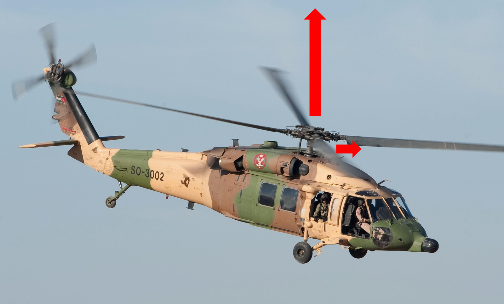
1. Tutorial: first result
1.1 Case workflow
Create or open a project; describe the blade, the airfoil and the engine; choose the flight condition; run it and read the results.
1. Project: start from a saved state
In the Project tab, create a project or open an example. Choose Rotor or Propeller before filling in flight conditions: the engine solves the same physics, but the interface switches the input and coefficient conventions. Edits reach the project in memory as you make them; Save writes that state to disk. Switching projects clears the session's result history.
2. Geometry: describe the blade before tuning the case
Enter the blade count and radius, generate a starting table if needed, then review r/R, chord and twist. Each cell you edit goes into the project in memory at once, so the preview and the calculation always describe the same blade; Save writes it to disk and Restore reloads the last saved version. The Geometry fields section follows the order of the controls.
3. Airfoil: where the local forces come from
The polar source is analytical (closed-form linear
coefficients) or table (imported or generated data, covering
Reynolds, Mach and angles of attack). Dynamic stall, reverse flow and
compressibility are independent corrections applied on top of that base
polar.
4. Config/Engine: mesh and physical models
Ne discretizes the radius and Npsi discretizes the azimuth; together they define the mesh over which the solver integrates forces. Inflow, Prandtl losses and solver are independent models composed over that mesh. The static validation runs on its own — the panel at the bottom of the tab restates it after every edit, here or in any other tab, so what it shows is always the current project.
5. Run Case: one physical condition at a time
Set the in-plane advance, axial velocity, collective and RPM. Collective and RPM are not numerical knobs: they set the geometric angle and the velocity scale of the flow. Run the case and use the Results tab to compare against earlier runs.
6. Run Batch: generate → queue → run
Choose axes or add individual conditions. Both paths feed the same queue; review it before running. A batch is not an automatic trim: with the collective held fixed, thrust and power are outputs that vary with the condition.
7. Results: compare before exporting
Select one or more runs from the history to compare charts and tables. Export writes result files; generating a report creates the self-contained HTML of the run. Neither changes the physics that was already solved.
1.2 Workflow
pip install -e ".[all]" at the repository root,
two commands, one for each interface:
zbemt-gui # graphical window zbemt --help # command lineWithout installing, the equivalents are
python -m zbemt.gui.app and
python -m zbemt.cli. The window opens maximized and empty: the first step is
always the Project tab, where you choose one of the examples that come preinstalled
(1.2.5) or create a new project.
The GUI organizes the project in seven tabs, in the order in which a project is normally set up: 1. Project (create/open, choose Rotor or Propeller) → 2. Geometry (radial table of chord/twist) → 3. Airfoil (aerodynamic model and stall) → 4. Config/Engine (mesh, inflow, solver) → 5. Run Case (one operating point) and/or 6. Run Batch (sweep) → 7. Results (visualization, export). The sections of this Block 2 follow exactly this order — each chapter is a tab, in the order it appears in the window.
1.2.1 Flow indicator bar
FlowIndicatorBar, fixed at the top of the window, shows a colored indicator for each
of the seven steps above (green = configured and valid; amber = configured with warnings; red
= blocking error; gray = not yet configured). Clicking any indicator jumps directly to
the corresponding tab — useful for resuming a large project without navigating sequentially through the
tabs. The Help button opens this document; shortcut F1 sits at the far
right of the same bar.
1.2.2 Live edits, unsaved marker, save and restore
The editing tabs (Geometry, Airfoil, Config/Engine) have no separate confirmation step: every field you change is written into the project held in memory the moment you change it, and the live previews (Sections 5.4, 6.9) and the validation panels already reflect it. There is no draft kept to one side of the project, and no click that carries the form into the calculation. What is not automatic is disk: the project folder is untouched until you save.
The asterisk. While the project in memory differs from the project on disk, an asterisk appears in the title of the tabs you edited — Geometry *, Airfoil *, Config/Engine *. It marks work not yet written to disk, not work not yet applied.
Save. Save writes the whole project folder and clears the
asterisks. The button is in the Project tab and repeated in Geometry, Airfoil and
Config/Engine (labelled Save in the Geometry tab), so you never have to change
tabs to commit what you just typed; Ctrl+S does the same from anywhere in
the window.
Restore. Restore — labelled Restore in the Geometry and Airfoil tabs — does the opposite: it reloads the project folder exactly as it stands on disk and discards every unsaved edit. It is a full reload, not a step-by-step undo, and it asks for confirmation first when there is unsaved work. This is what makes free experimentation safe: change values, watch the preview, then either save them or restore over them.
When closing the window with unsaved work, zBEMT asks before exiting, offering Save, Discard and Cancel. Because everything you typed is already in the project, choosing Save writes exactly what was on the screen — there is no second category of pending edit that the dialog could silently drop.
1.2.3 Keyboard shortcuts
| Shortcut | Action |
|---|---|
F1 | Opens this document (same target as the "?" button) |
Ctrl+S | Save the project to disk (same as the "Save" button, from any tab) |
Ctrl+O | Open project from another folder |
Ctrl+N | New project |
Ctrl+1…Ctrl+7 | Jumps to tab 1–7 (same order as the flow bar) |
Ctrl+Enter | Re-reads the current tab's fields into the project in memory. Edits already apply as you type (1.2.2), so this only forces a refresh; it never writes to disk |
Ctrl+R | Runs the case or batch from the current tab |
1.2.4 Three ways to configure a project
Every project field — without exception — is accessible in three equivalent and interchangeable ways, which produce exactly the same numerical result when running the motor:
- GUI — the widgets described in this Block 2, tab by tab.
- .bemt — JSON files inside
inputs/(geom.bemt,airfoil.bemt,airfoil_sections.bemt,config.bemt,batches.bemt,saved_cases.bemt), editable by hand in any text editor or generated by Python script viamodels.save_bemt(). - CLI — the
zbemtcommand (zbemt/cli.py), with dedicated flag for the most used fields and--set NAMESPACE.FIELD=VALUEfor all others; see 15.1.
Reading rule for this document. Every field sheet below brings the
three columns GUI / .bemt /
CLI, even when one does not apply: if the GUI does not offer
a widget for the field, the column explicitly states "Not exposed in GUI", instead of being blank
— it is useful information on its own (the reader stops looking for a button that does not exist). If
no dedicated CLI flag exists, the field remains accessible via
--set (15.1) or by editing the .bemt by hand.
1.2.5 First use
The installation already brings thirteen ready-to-use projects in
projects/. They cover the three vehicle categories zBEMT serves and, just as
deliberately, the range of models it implements. Opening one of them is the shortest path to
understanding the tool, because the project already comes with flight cases and sweeps saved:
| Project | What it is | Solidity $\sigma$ | Tip speed |
|---|---|---|---|
heli_light | Two-bladed light helicopter rotor (Bell 206 class): $R$ = 5.08 m | 0.041 | 213 m/s |
heli_utility_medium | Main rotor of medium-utility helicopter (UH-60 class): $R$ = 8.18 m, 4 blades | 0.082 | 221 m/s |
heli_cargo_heavy | Heavy-lift rotor (CH-47 class): $R$ = 7.32 m, 3 blades, tip speed traded for disk loading | 0.075 | 200 m/s |
heli_trainer_enhanced_stall | Light trainer rotor configured for the stall study: compressibility off, flat-plate reverse flow | 0.039 | 190 m/s |
heli_scout_pitt_peters | Scout rotor solved with the Pitt–Peters finite-state inflow instead of a local model | 0.042 | 200 m/s |
heli_multisection_rotor | Blade with a different airfoil at root, mid-span and tip (multi-section blade) | 0.067 | 195 m/s |
heli_naca_neuralfoil | NACA 23012 blade whose polar was generated by NeuralFoil and stored as a table; coarse mesh, meant to be opened and re-run quickly | 0.061 | 110 m/s |
rotor_tabulated_polar | The light helicopter rotor again, but reading an imported polar table over three Reynolds instead of the analytical polar | 0.041 | 213 m/s |
rotor_model_study | Four-bladed rotor kept for comparing inflow models; ships set to the Drees non-uniform inflow | 0.085 | 240 m/s |
evtol_rotor_lift | Lift rotor of multirotor eVTOL: $R$ = 1.5 m, 5 blades | 0.106 | 180 m/s |
propeller_light_aircraft | Tractor propeller of light aircraft: $D$ = 1.88 m, 3 blades, 2500 RPM — the one project that ships in Propeller mode | 0.109 | 246 m/s |
drone_propeller_small | Small multirotor drone blade: $R$ = 0.123 m, 2 blades, ~6050 RPM, thin flat-plate polar | 0.248 | 78 m/s |
starter_rotor | Reference rotor used by the integration tests: $R$ = 1.25 m, 4 blades | 0.141 | — |
The first three rows form a useful didactic sequence: the same rotary-wing mission, with
solidity doubling from the light rotor to the medium utility, and the heavy-lift rotor showing
what a slower tip buys. The four rows after them exist to exercise a model rather than an
aircraft — finite-state inflow, an enhanced stall setup, a multi-section blade, and a polar
generated by NeuralFoil — and the two after those cover the tabulated polar source and the
comparison between inflow families. Between them, the set spans both polar sources
(analytical and table, the latter both imported from CSV and generated
by NeuralFoil), all four inflow families, and both operating modes; a gap in that coverage is
treated as a bug, not as a missing nicety. The eVTOL rotor shows what changes when the disk is
small and the tip is slow (noise is a certification requirement in urban operation), the small
drone blade takes that to the other extreme of scale, and the light-aircraft propeller is the one
that exercises the is_propeller mode and the axial convention for flight speed
(9.2.1).
Via the GUI: open zbemt-gui, choose the project from the list in the Project tab, go
to the Run Case tab and click Run. The saved cases appear in the selector.
Via command line:
zbemt --project projects/heli_utility_medium --list-batches zbemt --project projects/heli_utility_medium --from-bemt-batch "mu_x sweep" --report
The --report writes a self-contained HTML with the summary table, graphs and
record of the mesh, solver, and rotor used (11.4).
As a library:
from zbemt import api
from zbemt.models import FlightCondition
projeto = api.open_project("projects/heli_utility_medium")
# validate before running: some combinations the motor rejects, and it is better
# to discover now than in the middle of a long batch
for issue in api.validate_project(projeto, conditions=projeto.saved_cases):
print(issue)
resultado = api.run_case(projeto, projeto.saved_cases[0])
print(resultado.summary["CT"], resultado.summary["FM"])
api.generate_report([resultado], "relatorio.html", project=projeto)
To start from your own rotor instead of an example, begin with the Project tab
(Section 1.3) and follow the tabs in order. The examples are generated by
tools/generate_example_projects.py, which also serves as a model for how to assemble a
complete project by script.
1.3 Project
ProjectTab manages the project lifecycle on disk: a folder containing the
.bemt files listed in 1.2.4, inside
inputs/. It is always the first tab to be used.
1.3.1 Project mode: Rotor or Propeller
A binary choice, made once per project (although changeable at any time), that
decides the variable vocabulary used in all following tabs: Rotor convention
(helicopter/eVTOL in hover/forward flight, in-plane advance ratio $\mu_x$, climb/descent
$\lambda_z$) or Propeller convention (propeller/VTOL in cruise, advance ratio $J_x$ built
from the airspeed along the shaft). It is also what decides which physical component each
displayed letter names, since the shaft is vertical on a rotor and horizontal on a propeller
(Section 9.2.1.1). The physics
solved by solve_bemt() is identical in both cases — only the
nondimensionalization of input/output and the labels change: derivation of the two coefficient
conventions in
Section 2.6.6 (rotor: $C_T$, $C_Q$, $C_P$, figure of merit) and
2.6.5 (propeller: $C_T$, $C_P$ on $n^2D^4$/$n^3D^5$, advance ratio $J_x$,
efficiency $\eta_{prop}$). Everything that differs for a propeller — the physics that
switches off, the letter flips, which $J$ is "the" $J$, $\alpha_{disk}$, the efficiency measures
and the two classic mistakes — is collected in Chapter 13.
Switching the mode does not automatically convert any value already typed in
other tabs (the GUI warning text is explicit about this) — check Run Case/Batch before
running after the switch.
GUI: Project tab › "Project mode" group ›
radio buttons "Rotor (helicopter / eVTOL)" / "Propeller (propeller / VTOL prop)".
.bemt: config.bemt · key
is_propeller (boolean, default false). CLI:
not exposed as a dedicated flag — set in config.bemt before
--project, or via --new followed by manual editing and
--save-as.
1.3.2 New / open / save project
| Action | GUI | Function in api.py | CLI |
|---|---|---|---|
| Create new project | "Project name" field + "New project" button | api.new_project(path, name) | --new PATH [--name NAME] |
| Open existing project | Double-click in the list on the left, or "Open from another folder…" | api.open_project(path) | --project PATH |
| Save active project | "Save" button (also in Geometry, Airfoil and Config/Engine; Ctrl+S) | api.save_project(project) | --save-as PATH (writes the flags already applied in this call; omit = does not persist) |
| Discard unsaved edits | "Restore" button in Geometry, Airfoil and Config/Engine (1.2.2) | api.open_project(path) (full reload of the same folder) | Not applicable — the CLI does not hold edits between runs |
The list of existing projects (left column) reflects the subfolders of a configured root
(PROJECTS_ROOT); "Refresh list" forces a new disk scan. None of these
actions contain their own serialization logic — all writes/reads go through
api.py, ensuring that a project created via the GUI, command line (cli.py) or
manual editing of .bemt is read back identically by all three paths
(parity principle, 1.2.4).
1.4 Worked walkthrough
This walkthrough runs a real, shipped example project (projects/starter_rotor,
"Starter rotor (2.5m, 4 blades)" — the reference rotor used throughout the original zBEMT
MATLAB comparison, cited again in Section 6.1.2) from Project through Results, with the actual
numbers the solver produces — not illustrative placeholders.
| Step | What was done | Actual value |
|---|---|---|
| 1. Project | Open projects/starter_rotor (Rotor mode) | 4 blades, $R=1.25$ m |
| 2. Geometry | Radial table already defined (root cutout $x_{root}=0.214$) | root chord/twist $c/R\approx0.147$, $\theta_{tw}\approx20°$; tip $c/R\approx0.075$, $\theta_{tw}=4.5°$ |
| 3. Airfoil | Analytical polar, default zBEMT coefficients | source="analytical" |
| 4. Config | Mesh and solver left at project defaults | $N_e=120$, $N_\psi=180$, solver newton, inflow coleman_local |
| 5. Run Case | Hover: $\mu_x=0$, RPM$=1200$, collective$=8°$ | $C_T=0.02863$, $C_Q=0.004111$, $FM=0.833$, Thrust$=4248$ N, Power$=95.8$ kW |
| 6. Results | Convergence and coefficients read from the same run | 100% of elements converged, 4.08 iterations on average, 0.055 s wall time |
Two things worth noticing in these actual numbers, both explained in full later in this document: $C_Q=C_P$ exactly (rotor convention defines them that way, Section 2.6.4) and $FM=0.833$ sits inside the "well-designed rotors operate at 0.7–0.8" range quoted in Section 2.9.1 — consistent with a rotor geometry taken from a validated reference case, not a red flag. Section 3 continues this exact same case ($\mu_x=0$) as the Hover worked example; Section 4 reruns it at $\mu_x=0.3$ (same RPM, same collective) as the Forward flight worked example, so the two can be compared field-by-field against this hover baseline.
2. Physics fundamentals
2.1 Nomenclature
Every symbol is redefined in words at its first occurrence in the running text; this table is a reference guide, not a prerequisite for sequential reading.
The axes are vehicle-fixed: $x$ is horizontal, $z$ is vertical. The physics chapters that follow are written in rotor axes, where the shaft is vertical, so $x$ lies in the disk plane (the advance) and $z$ runs along the shaft (climb or descent). On a propeller the shaft points forward, so the same two letters name the other two components: $x$ becomes the shaft direction (the airspeed) and $z$ the vertical cross-flow. Every quantity below whose meaning flips this way says so in its own row, and Section 9.2.1.1 gives the full correspondence, including the engine key each one is stored under.
Greek symbols
| Symbol | Unit (SI) | Definition |
|---|---|---|
| $\Omega$ | rad/s | Rotor angular velocity, constant, imposed by the transmission. |
| $\Omega R$ | m/s | Blade tip speed. |
| $\psi$ | rad | Blade azimuth in the disk plane; $\psi=0$ at the tail, $\psi=\pi/2$ on the advancing side. |
| $\theta$ | rad | Geometric pitch angle (built-in twist plus pitch control). |
| $\theta_{tw}$ | rad | Built-in blade twist. |
| $\phi$ | rad | Inflow angle: inclination of the relative velocity $W$ with respect to the rotor disk plane, $\phi=\arctan(U_P/U_T)$ (Section 2.5.2). |
| $\alpha$, $\alpha_{eff}$ | rad | Effective angle of attack, $\alpha_{eff}=\theta-\phi$. |
| $\alpha_0$ | rad | Zero-lift angle of attack of the airfoil. |
| $\lambda_{total}$ | dimensionless | Total inflow ratio along the shaft, $\lambda_{total}=\lambda_z+\lambda_i$ in rotor axes ($\lambda_{total}=\lambda_x+\lambda_i$ in propeller axes, where $x$ is the shaft). |
| $\lambda_z$ | dimensionless | Free-stream inflow ratio along $z$, $\lambda_z=V_z/\Omega R$ — the same number as $\mu_z$, written in the inflow vocabulary instead of the advance-ratio one. In rotor axes $z$ is the shaft, so this is climb ($>0$) or descent ($<0$); it is an input datum, known before any aerodynamics. In propeller mode the shaft component is displayed as $\lambda_x$ instead. |
| $\lambda_x$ | dimensionless | Propeller-mode name for the free-stream inflow ratio along the shaft, $\lambda_x=V_x/\Omega R$: the axial inflow of an airplane propeller. Same quantity and same engine key as $\lambda_z$ above (9.2.1.1). |
| $\lambda_i$ | dimensionless | Induced inflow ratio, $\lambda_i=v_i/\Omega R$: the unknown of the BEMT coupling. Always along the shaft, in either mode. |
| $\lambda_r$ | dimensionless | Local rotational/axial ratio (Himmelskamp correction, Section 8.3.1). |
| $\mu_x$ | dimensionless | Advance ratio along $x$, $\mu_x=V_x/\Omega R$. In rotor axes $x$ is the in-plane direction, so this is the classic forward-flight advance ratio — the component that sweeps across the blades. In propeller mode the label $\mu_x$ is carried by the shaft component instead (the airspeed). |
| $\mu_z$ | dimensionless | Advance ratio along $z$, $\mu_z=V_z/\Omega R$ — the same number as $\lambda_z$. In rotor axes it is climb/descent; in propeller mode the label $\mu_z$ is carried by the vertical cross-flow. |
| $\sigma$ | dimensionless | Rotor solidity. |
| $\rho$ | kg/m³ | Air density. |
Latin symbols: geometry and kinematics
| Symbol | Unit (SI) | Definition |
|---|---|---|
| $R$ | m | Rotor radius. |
| $r$ | m | Radial position of the blade element, $0\le r\le R$. |
| $x=r/R$ | dimensionless | Normalized radial position. |
| $r_{root}$ | m | Root cutout. |
| $c(r)$ | m | Local chord. |
| $N_b$ | integer | Number of blades. |
| $N_e$, $N_\psi$ | integer | Number of radial and azimuthal mesh stations. |
| $A=\pi R^2$ | m² | Disk area. |
| $V_x$ | m/s | Free-stream component along $x$. In rotor axes: the horizontal advance velocity, in the disk plane. In propeller mode the label $V_x$ is carried by the component along the shaft — the aircraft's airspeed. |
| $V_z$ | m/s | Free-stream component along $z$. In rotor axes: along the shaft, climb ($>0$) or descent ($<0$). In propeller mode the label $V_z$ is carried by the vertical cross-flow, which is zero in straight cruise. |
| $V_{z,total}$ | m/s | Total velocity along the shaft through the disk, $V_{z,total}=V_z+v_i$ (disk-averaged): free stream plus what the rotor adds — the dimensional counterpart of $\lambda_{total}$, and what Section 2.4.2 writes as $U_P$. Displayed as $V_{x,total}=V_x+v_i$ in propeller mode. |
| $v_i$ | m/s | Velocity induced by the rotor. It acts always along the shaft, in either mode; only the letter naming that axis changes. |
| $v_h$ | m/s | Ideal hover-induced velocity, $v_h=\sqrt{T/2\rho A}$. |
| $U_P$ | m/s | Component of relative velocity perpendicular to the disk. |
| $U_T$ | m/s | Component of relative velocity in the disk plane. |
| $U_R$ | m/s | Spanwise (radial) component, Section 8.3.2. |
| $W$ | m/s | Total relative velocity, $W=\sqrt{U_P^2+U_T^2}$. |
| $M$ | dimensionless | Local Mach number, $M=W/a$. |
Latin symbols: forces, moments, and coefficients
| Symbol | Unit (SI) | Definition |
|---|---|---|
| $T$ | N | Rotor thrust. |
| $Q$ | N·m | Shaft torque. |
| $P$ | W | Power, $P=Q\Omega$. |
| $L$, $D$ | N/m | Lift and drag of the element, per unit span. |
| $C_l$, $C_d$ | dimensionless | Airfoil lift and drag coefficients, function of $\alpha_{eff}$ and $M$. |
| $C_{l_\alpha}$ | rad⁻¹ | Linear slope of $C_l(\alpha)$, $\approx2\pi$. |
| $F_n$, $F_t$ | N/m | Aerodynamic force projected normal and tangentially to the disk. |
| $F$ | dimensionless, $(0,1]$ | Prandtl tip-loss factor. |
| $C_T$, $C_Q$, $C_P$ | dimensionless | Thrust/torque/power coefficients, rotor convention. |
| $C_{T,prop}$, $C_{Q,prop}$, $C_{P,prop}$ | dimensionless | Idem, propeller convention. |
| $FM$ | dimensionless | Figure of Merit. |
| $J_x$ | dimensionless | Advance ratio along $x$ in propeller form, $J_x=V_x/nD=\pi\mu_x$. In propeller mode this is the classic propeller advance ratio — built from the airspeed along the shaft, and the one propulsive efficiency uses. In rotor axes the same letter denotes the in-plane ratio (9.2.1.1). |
| $J_z$ | dimensionless | Advance ratio along $z$ in propeller form, $J_z=V_z/nD=\pi\mu_z$. In rotor axes it is the climb/descent ratio; in propeller mode it is the cross-flow ratio, a different number from $J_x$ and zero in straight cruise. Never interchangeable with $J_x$ — the subscript is the only thing separating them, which is why an unsubscripted $J$ is never used here. |
| $\alpha_{rotor}$ | deg | Angle between the free stream and the DISK PLANE, $\alpha_{rotor}=\operatorname{atan2}(V_z,V_x)$ in rotor axes. THE angle of rotor mode: $0$ in a helicopter's level forward flight, positive when the flow arrives from below the disk (9.2.1.2). |
| $\alpha_{disk}$ | deg | Angle between the free stream and the SHAFT, $\alpha_{disk}=\operatorname{atan2}(V_z,V_x)$ in propeller axes, equivalently $90^\circ-\alpha_{rotor}$ modulo a full turn. THE angle of propeller mode: $0$ in straight cruise, positive when the disk is tilted nose-up. Each mode uses and shows only its own, and neither is the section angle of attack $\alpha_{eff}$ (9.2.1.2). |
| $\eta_{prop}$ | dimensionless | Propulsive efficiency, built from the velocity along the shaft (in propeller mode, $V_x$), since that is where thrust acts. |
| $n$ | Hz | Rotations per second, $n=\Omega/2\pi$. |
| $D=2R$ | m | Diameter (propeller convention). |
Subscripts
| Notation | Definition |
|---|---|
| $(\cdot)_i$ | Component induced by the rotor. |
| $(\cdot)_x$ | Component along the vehicle's $x$ axis (horizontal). Rotor mode: in the disk plane, the advance. Propeller mode: along the shaft, the airspeed. |
| $(\cdot)_z$ | Component along the vehicle's $z$ axis (vertical). Rotor mode: along the shaft, climb/descent. Propeller mode: across the shaft, the cross-flow. |
| $(\cdot)_{total}$ | Free-stream part plus induced part, along the shaft ($\lambda_{total}$, $V_{z,total}$). |
| $(\cdot)_\infty$ | Station infinitely far upstream in the actuator-disk control volume (Section 2.9.1). It is not used as a velocity subscript: the free stream is written $V_x$, $V_z$. |
| $(\cdot)_0$ | Value at zero lift (e.g. $C_{d0}$). |
| $F_{t,i}$, $F_{t,p}$ | Inductive and profile components of tangential force (Section 2.8.4). |
| $(\cdot)^{(k)}$ | Value at the $k$-th iteration of the fixed-point solver. |
| $d(\cdot)$ | Elemental quantity, referring to a blade element of radial length $dr$. |
2.2 Rotor and blade geometry
The rotor is a disk of radius $R$ swept by $N_b$ equally-spaced blades, rotating at constant angular velocity $\Omega$ about an axis perpendicular to the disk. $\Omega$ is an input datum, imposed by the transmission: it is not solved by BEMT. The product $\Omega R$ defines the blade tip speed, the reference velocity scale for non-dimensionalization (Section 2.6).
Each blade is described, at radial station $r\in[0,R]$, by three functions:
- chord $c(r)$, in meters;
- twist $\theta_{tw}(r)$, geometric incidence angle with respect to a reference plane, typically decreasing from root to tip;
- airfoil aerodynamic section, which determines $C_l(\alpha,M)$ and $C_d(\alpha,M)$ (Section 2.8.2).
In zBEMT this description is a radial table: three vectors of equal length,
r_norm ($r/R$), chord_norm ($c/R$) and twist_deg, defined
in geometry.py/models.py. Parametric geometries (rectangular,
tapered, elliptic) are generated by generate_rectangular,
generate_tapered, generate_elliptic, but all result in the same
interpolable table: the computational engine does not distinguish the origin of the data.
2.2.0 Blade count and rotor radius
Set these two values before interpreting the radial table. radius_m is the
physical scale $R$; n_blades is the number $N_b$ of identical blades distributed
over $2\pi$. They are not cosmetic labels: together with chord they determine solidity,
the disk area and the dimensional force scale.
Use the radius of the swept disk, not the blade diameter. Increase $N_b$ when the design needs more loading capacity at the same disk area, but expect more profile drag and solidity. Changing $R$ changes the physical size and tip speed; after changing it, review chord $c/R$, RPM and Mach/Reynolds estimates. The GUI fields are in Geometry › Rotor/propeller constants; both remain active when a custom radial table is pasted.
The parametric generator popup can size the same chord distribution the other way around,
from a target overall solidity or blade aspect_ratio instead of a
raw chord value, using $\sigma = \frac{N_b S_b}{\pi R^2}$ and $AR = R^2/S_b$ for the
single-blade planform area $S_b$ — the same $\sigma$ defined above, integrated over one
blade rather than evaluated station by station.
Two additional conventions complete the geometry:
- root cutout $r_{root}$: the blade does not generate useful lift for $r<r_{root}$ (hub, hinges, pitch mechanism); zBEMT does not integrate load in that region;
- azimuth $\psi$: angular position of the blade in the disk plane, with $\psi=0$ in the direction opposite to forward motion, $\psi=\pi/2$ on the advancing side (adds $V_x$ to rotational velocity) and $\psi=3\pi/2$ on the retreating side (subtracts it). In hover ($\mu_x=0$) the solution is independent of $\psi$; in forward flight, $\psi$ is a second independent variable of equal weight to $r$.
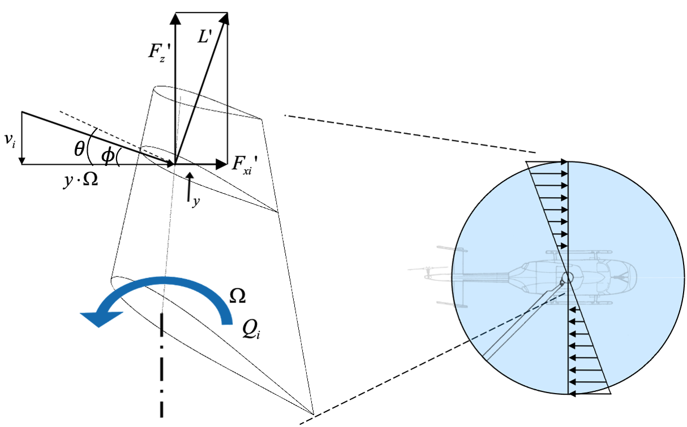
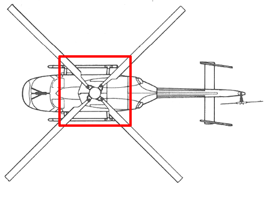
2.2.1 Rigidity assumption
The formulation assumes rigid blades: dynamic elastic twist and flapping (up-and-down rotation about a hinge, typical of articulated rotors) are not inherent degrees of freedom of the model. Real rotors flex and flap, and this motion feeds back into the effective angle of attack (Section 2.5.3); zBEMT solves the physics of aerodynamic loading over fixed geometry at each evaluation, appropriate for preliminary design and performance diagnosis, but with this limitation for articulated rotors with pronounced free flapping.
2.2.2 Chord and twist distribution along the span
Blade count and radius fix the size of the rotor; the two distributions below decide how the
load is shared along it. Both are given as a table of spanwise stations, with chord
(chord_norm) normalized by the radius and twist (twist_deg) measured
from the same reference as the collective. Between stations the engine interpolates linearly,
so the table describes a real blade rather than a set of independent design points, and its
resolution should follow the gradients: dense where the loading changes fast, which is the
outer span.
Why chord tapers. The local dynamic pressure grows as $(\Omega r)^2$, so at constant chord the outer half of the blade carries the overwhelming majority of the thrust while the root contributes almost nothing. The elemental thrust of an annulus is
and the induced velocity that sustains it is uniform over the disk — the condition for minimum induced power — only if $c(r)\,C_l(r)\,r$ is constant, that is if chord falls roughly as $1/r$. That hyperbolic ideal is impractical at the root, where it diverges, so real blades approximate it with a linear taper. The consequences of tapering are a lower peak loading near the tip, a weaker tip vortex, and therefore a smaller tip loss; the cost is less area where the velocity is highest, so the same thrust needs a larger angle of attack.
Why twist is negative outboard. The inflow angle $\phi=\arctan(U_P/U_T)$ is large near the root, where the tangential velocity $U_T=\Omega r$ is small, and small at the tip. Since the effective angle of attack is $\alpha_{eff}=\theta-\phi$, a blade of constant pitch runs its root close to or past stall while its tip works at a small, inefficient angle. Built-in washout — pitch decreasing toward the tip — removes that mismatch. The ideal hover distribution again varies as $1/r$; linear washout of $-8°$ to $-14°$ over the span is the usual practical approximation, and it is the single most effective way to flatten the spanwise loading and raise the figure of merit.
What changes in your result. Adding washout moves loading inboard: thrust at a given collective falls slightly, induced power falls more, and the figure of merit rises. Tapering does the same through area rather than angle. In forward flight the two interact with the advancing/retreating asymmetry, and the interaction is unfavourable: the washout that balances\rhover leaves the advancing tip at a low or negative angle of attack while the retreating blade sits closer to stall. This is why a blade optimized for hover and one optimized for cruise have visibly different distributions, and why comparing them fairly requires trimming both to the same thrust.
Where the blade begins. The root cutout (root_cutout_norm) is the station
inboard of which the hub, hinges and pitch mechanism occupy the disk and no useful lift is
produced. The engine does not integrate load there. Its influence on thrust is small, because
the velocity is low, but it is not negligible for the root-loss factor, which is measured from
this station outward.
Building the table parametrically. Rather than typing each station by hand, the
generator popup fills this same chord/twist table from a handful of endpoints, using the
kind parameter to pick which of the three chord shapes above (constant, taper,
elliptic) to build and n_stations to set how many spanwise points the table gets
— denser where, as noted above, the loading gradient is steepest. Root and tip twist
(twist_root_deg, twist_tip_deg) are linearly interpolated to produce
the washout described above, and for the tapered preset the tip chord
(tip_chord_norm) sets the taper ratio to the root chord that drives the loading
shift also described above.
2.3 Disk discretization: radial-azimuthal mesh
BEMT solves the physics on an elemental basis: a local equation is written at each point $(r,\psi)$ and the result is integrated numerically over the disk by means of a double Riemann integral approximated by the trapezoidal rule (detailed in Section 12.2). The continuous disk is replaced by a discrete mesh of $N_e$ radial stations by $N_\psi$ azimuthal stations: $N_e\times N_\psi$ elements, each with position $(r,\psi)$, interpolated chord and twist, and, after solution, its own aerodynamic state.
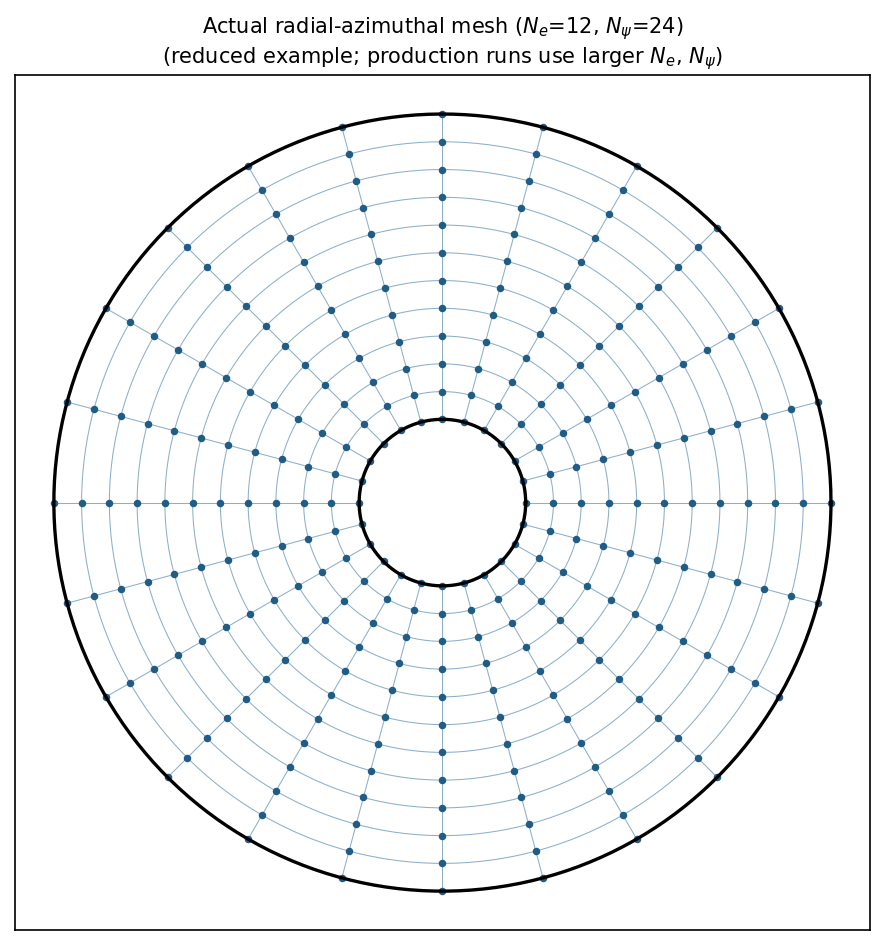
solve_bemt code
(here with $N_e=12$, $N_\psi=24$ for visualization only; production runs typically use $N_e\sim50$–$80$, $N_\psi\sim72$–$120$). Inner white circle: root cutout $r_{root}$; outer circle: tip $r=R$. Each blue dot is a blade element — the unit
over which element_state() evaluates the local physics.In hover or axisymmetric climb/descent ($\mu_x=0$) the solution is independent of $\psi$; still,
zBEMT constructs the full mesh $(N_e,N_\psi)$: element_state() follows the
same code path in any regime, and the axisymmetric case corresponds to all
columns of $\psi$ producing the same result. This unifies hover, climb, descent, and
forward flight in single code, at the cost of redundant computation in hover.
integration_offset) moves the first and last nodes away from the boundary. Numerical reason:
the Prandtl factor (Section 8.1) tends to zero at the boundaries, and $\phi$ is poorly defined
when $U_T\to0$ at the root: exact evaluation over these singularities produces division by zero
or instability in the fixed-point solver.
Over this mesh are defined the 2D fields $U_P$, $U_T$, $\phi$, $\alpha_{eff}$, $C_l$, $C_d$ and $\lambda_i$: arrays of shape $(N_e,N_\psi)$. The integration of global forces (Section 2.8) is a double numerical integral (trapezoidal) over this mesh.
frequency method — the Nyquist theorem requires $N_\psi\gtrsim2\times$(largest harmonic of
$f_{st}(\psi)$ to capture) to avoid aliasing (Section 8.4.2).
2.4 Blade element velocities: $U_P$, $U_T$, $W$
A blade element at $(r,\psi)$, with the rotor spinning at $\Omega$, advancing at $V_x$ and climbing/descending at $V_z$, sees a relative velocity given by the vector sum of three contributions: rotor rotation, aircraft forward motion, and induced velocity (Section 2.9). This relative velocity decomposes into two orthogonal components: one in the disk plane ($U_T$) and one perpendicular to it ($U_P$).
2.4.1 Tangential component, $U_T$
The term $\Omega r$ is the tangential velocity in hover, linear in $r$, zero at the root and maximum ($\Omega R$) at the tip. The term $V_x\sin\psi$ is the projection of forward advance onto the tangential direction at $\psi$: maximum positive at $\psi=\pi/2$ (advancing side), maximum negative at $\psi=3\pi/2$ (retreating side), zero at $\psi=0,\pi$.
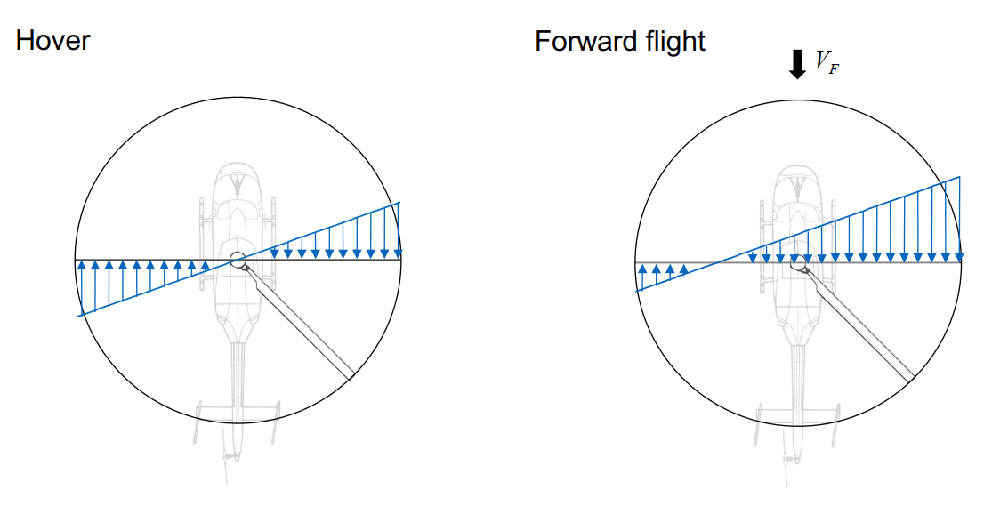
This asymmetry (advancing blade faster, retreating blade slower) produces the lift asymmetry characteristic of forward flight and, at sufficiently high $\mu_x$, a region with $U_T<0$: the reverse flow (Section 8.2).
2.4.2 Component perpendicular to the disk, $U_P$
where $\lambda_z=V_z/\Omega R$ is the free-stream inflow ratio along the shaft — an input datum, the climb/descent ratio in rotor axes, and the one a propeller reader meets as $\lambda_x$, the axial inflow (9.2.1.1) — and $\lambda_i=v_i/\Omega R$ is the induced inflow ratio: the unknown solved by the BEMT coupling (Section 2.10). Both terms of $U_P$ act along the shaft in either mode; only the letter naming that axis changes. Unlike $U_T$, which is purely kinematic, $U_P$ contains the problem's unknown: its final value depends on the solution of the blade element–momentum system. In zBEMT, $U_P$ is recalculated at each iteration of the fixed-point solver with this same expression, varying only $\lambda_i$.
2.4.3 Total relative velocity, $W$
$W$ is the velocity that enters the 2D airfoil lift and drag relations (Section 10.3), equivalent to the freestream velocity over a wing section in a wind tunnel.
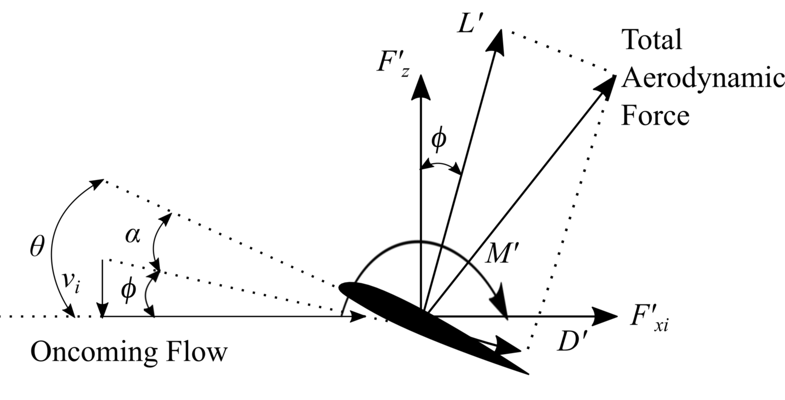
The solver evaluates these three velocity components at every radial and azimuthal station. Near the hub or at the boundary of reverse flow, the relative speed can become very small; the numerical safeguard there prevents a singular calculation without changing normal operating results.
2.5 Blade element angles: $\theta$, $\phi$, $\alpha$
2.5.1 Pitch angle, $\theta$
$\theta(r)$ is the geometric incidence of the blade chord with respect to the disk reference plane, at radial station $r$. It comprises two added components: the built-in twist $\theta_{tw}(r)$, embedded in the physical blade geometry and typically decreasing from root to tip (Section 2.2), and the pitch control commanded by the pilot or control system, which may have a collective component (uniform in $r$ and $\psi$) and a cyclic component (varying with $\psi$, used for attitude control in forward flight). $\theta(r)$ is, throughout the formulation, a pure input datum: it depends exclusively on the blade geometry and pitch command, never on induced velocity or any result of the BEMT solution.
The GUI field collective_deg is the uniform part of this pitch command:
the implementation adds it to the interpolated twist at every $(r,\psi)$ before
element_state() evaluates the polar. In symbols,
$$\theta(r,\psi)=\theta_{tw}(r)+\theta_0+\theta_{cyc}(\psi),\qquad
\theta_0=\mathrm{radians}(\texttt{collective\_deg})$$
so increasing collective shifts $\alpha_{eff}$ and the blade-element loads at all
stations, while leaving the momentum equation and the geometry table unchanged.
The same field is the unknown solved by the fixed-RPM thrust/CT trim loop.
The field rpm sets $\Omega=2\pi\,\texttt{rpm}/60$ before the mesh
solve. It therefore changes $U_T$, $W$, $Re=\rho Wc/\mu_{dyn}$ and
$M=W/a$, as well as the dimensional force scale; it is not a post-processing
label and is never solved by ordinary BEMT.
2.5.2 Inflow angle, $\phi$
$\phi$ is the angle between the relative velocity $W$ incident on the blade element and the rotor disk plane. Physically, $\phi$ measures how much the incident flow is tilted out of the disk plane in the normal direction, a tilt caused entirely by the sum of climb/descent velocity and induced velocity (Section 2.4.2). When the rotor is unloaded ($U_P=0$, zero inflow), $\phi=0$ and the relative wind is tangent to the disk plane; as induced velocity grows, $\phi$ increases, tilting the elementary lift vector (Section 2.8.3) and projecting part of it onto the tangential direction, which produces induced drag (Section 2.8.4).
Since $U_P=\lambda_{total}\,\Omega R$ (Section 2.4.2, with $\lambda_{total}=\lambda_z+\lambda_i$ the total inflow ratio) and $U_T=\Omega r+V_x\sin\psi$ (Section 2.4.1), the relationship between $\phi$ and $\lambda_{total}$ is explicit:
In hover and in axisymmetric climb/descent ($V_x=0$, hence $U_T=\Omega r$), this
expression simplifies to $\phi=\arctan(\lambda_{total}/x)$, with $x=r/R$: the inflow angle at each
radial station depends only on the ratio between $\lambda_{total}$, the unknown solved by the BEMT coupling
(Section 2.10), and the normalized radial position. In forward flight, $U_T$ begins to vary also
with azimuth $\psi$, so $\phi$ inherits that azimuthal dependence even when $\lambda_{total}$
is treated as uniform over the disk (the glauert_local model, Section 7.1.1); with
non-uniform inflow models (Section 7.2), $\lambda_{total}$ begins to depend on $\psi$ as well, and the
expression above is applied locally at each mesh point $(r,\psi)$.
The angle must be evaluated with the quadrant-aware arctangent, not with a simple ratio, because $U_T$ can change sign in reverse flow. This preserves the physical direction of the relative wind as the blade crosses the boundary $U_T=0$.
2.5.3 Effective angle of attack, $\alpha_{eff}$
This relation connects the blade geometry ($\theta$, a fixed input datum) to the aerodynamics of the element ($\alpha_{eff}$, which feeds the lift and drag relations $C_l(\alpha_{eff})$ and $C_d(\alpha_{eff})$, Section 2.8.2) through the inflow angle ($\phi$, a function of $\lambda_i$ as given in Section 2.5.2). It is precisely through this subtraction that the induced velocity, a quantity determined by momentum theory (Section 2.9), feeds back into the load calculated by blade element theory (Section 2.8): the complete coupling between the two theories is formalized in Section 2.11.
2.6 Solidity and dimensionless coefficients
2.6.1 Advance ratio, $\mu_x$
$V_x$ is the free-stream component along the vehicle's horizontal axis, which in the rotor axes used throughout this chapter is the component in the disk plane. $\mu_x$ and $J_x$ are the same quantity in two vocabularies, related by $\Omega R=\pi nD$ and by nothing else.
The advance ratio is the single number that says how far a rotor has moved away from hover, and almost every asymmetry in this document is a consequence of it. It compares the speed at which the whole rotor translates through the air with the speed at which its own tips turn, so it is the ratio of the two velocities a blade section experiences at once.
What it does to the flow. The tangential velocity of a section is $U_T=\Omega r+V_x\sin\psi$, so the free stream adds to the rotation on the advancing side and subtracts on the retreating one. At a given radius the extremes are $\Omega r\,(1\pm\mu_x R/r)$: the dynamic pressure therefore varies by a factor of $\bigl[(1+\mu_x R/r)/(1-\mu_x R/r)\bigr]^2$ around one revolution, which at the tip and $\mu_x=0.3$ is nearly a factor of four between one side of the disk and the other. Since the rotor must remain in balance, the retreating side has to make up in angle of attack what it lacks in velocity, and it is that compensation — not the speed itself — that eventually limits forward flight.
Where the limits come from. Two of them scale directly with $\mu_x$. Wherever $U_T$ changes sign the section meets the flow trailing-edge first; the locus is a circle of diameter $\mu_x R$ tangent to the hub on the retreating side, so the reverse-flow region grows linearly with advance ratio, from nothing in hover to a quarter of the disk radius at $\mu_x=0.25$ (Section 8.2). At the other extreme of the disk the advancing tip sees $\Omega R+V_x$, so its Mach number rises with $\mu_x$ toward the transonic range (Section 8.3.3). Retreating-blade stall and advancing-tip compressibility close in from opposite sides, and their meeting is what sets the maximum speed of a conventional helicopter.
Careful: which physical component the letters name flips with the mode. Everywhere in
this chapter the axes are the rotor's, so $\mu_x$ is the component of the flight velocity in
the plane of the disk and $\mu_z$ the one along the shaft. On a propeller the shaft points
forward, so the interface swaps which component wears each letter: the airspeed along the shaft is
what a propeller reader is shown as $\mu_x$ and $J_x$, while the vertical cross-flow — zero
in straight cruise — is shown as $\mu_z$ and $J_z$. The engine keys never flip: the airspeed
of a propeller is stored under mu_z/J_z/Vz, exactly as a
helicopter's climb rate is. Which field carries what, and what happens if a propeller's airspeed is
typed into the in-plane slot instead, is Section 9.2.1; the Run Case and
Run Batch fields relabel themselves when the project is in propeller mode.
Reading the number. $\mu_x=0$ is hover, where the disk is axisymmetric and every field depends on radius alone. Up to roughly $0.1$ the asymmetry is mild and the reverse-flow circle usually falls inside the root cutout, so it can often be ignored. Between $0.15$ and $0.35$ is conventional cruise, where the choice of inflow model and of reverse-flow treatment starts to matter to the answer. Above $0.4$ both limits are active at once and the results should be treated as indicative: the models here are steady and do not represent the blade motion a real rotor uses to relieve the imbalance.
2.6.2 Inflow ratios, $\lambda_z$, $\lambda_i$, $\lambda_{total}$
These three quantities non-dimensionalize the velocities along the shaft by the blade tip speed $\Omega R$, exactly as $\mu_x$ does for the component across it. $\lambda_z$ is the free-stream part: an input datum, set by the flight condition before any aerodynamic calculation. It is the same number as $\mu_z$, written in the inflow vocabulary rather than the advance-ratio one — in rotor axes the climb ($>0$) / descent ($<0$) ratio, and the quantity a propeller reader meets under the name $\lambda_x$, since on a propeller it is the shaft that points forward (9.2.1.1). $\lambda_i$ is the induced inflow ratio, proportional to the velocity induced by the rotor itself; unlike $\lambda_z$, $\lambda_i$ is not known a priori, but rather the central unknown of the BEMT coupling, solved iteratively as detailed in Part II of this document. The sum $\lambda_{total}=\lambda_z+\lambda_i$ is the total inflow ratio, and it is this that directly determines the velocity component $U_P$ (Section 2.4.2) and, through the relation presented in Section 2.5.2, the inflow angle $\phi$ at each blade element.
2.6.3 Solidity, $\sigma$
Ratio of blade area to annular/disk area at the radius considered. For fixed mean $\alpha_{eff}$, larger $\sigma$ implies greater sustainable aerodynamic load and, typically, greater induced velocity.
2.6.4 Force, torque, and power coefficients: rotor convention
References: velocity $\Omega R$, area $A=\pi R^2$.
$FM$ is the ratio of ideal disk-actuator power (Section 2.9.1) to actual power in hover; $FM=1$ is the ideal limit, well-designed rotors operate at $0.7$–$0.8$. The numerator $C_T^{3/2}/\sqrt2$ is the hover ideal, so the ratio only measures efficiency in hover or close to it; away from hover it is still computed, but it is no longer bounded by $1$ and no longer means anything (13.5).
2.6.5 Force, torque, and power coefficients: propeller convention
References: velocity $nD$ ($n=\Omega/2\pi$, $D=2R$).
$J_x=\pi\mu_x$ follows directly from $\Omega R=\pi nD$, independent of the physical size of the rotor. In propeller mode $V_x$ is the airspeed along the shaft, which is why $J_x$ — and not the cross-flow ratio $J_z$ — is the advance ratio a propeller chart plots against, and the one that enters $\eta_{prop}$: thrust acts along the shaft, so only the velocity component parallel to it does useful propulsive work. $\eta_{prop}$ has the standard interpretation of propulsive efficiency in pure axial advance; in generic helicopter forward flight, it is calculated by the same formula but requires caution in interpretation.
cfg.is_propeller: this flag determines only which convention is used by default
in plots and sweeps (Section 12.3), never what is calculated internally.
2.6.6 Choosing between the two conventions
The rotor and propeller conventions of the two preceding sections describe the same machine
with different reference scales, and the choice between them (is_propeller) changes
no physics whatsoever: the same blade-element and momentum equations are solved, the same
induced velocity field results, and the same dimensional thrust and torque come out. What
changes is how those dimensional quantities are made dimensionless, and therefore which numbers
are reported and which efficiency measure is meaningful.
The rotor convention normalizes by disk area and tip speed, because a helicopter rotor is understood as a device that pushes air down through a disk: the relevant scales are how much disk it has and how fast the tip moves. The propeller convention normalizes by rotational frequency and diameter, because a propeller is understood as a device that advances through the air while turning: the relevant scales are revolutions and size. Substituting $\Omega=2\pi n$ and $D=2R$ relates them exactly,
so reading one as if it were the other is a large error with nothing to signal it. This is the practical reason to set the convention to match whatever reference data the result will be compared against.
The efficiency measures differ more fundamentally than by a constant. The figure of merit compares the actual hover power with the induced power an ideal actuator disk would need for the same thrust; it is defined at zero forward speed and loses meaning as the machine starts to translate. Propeller efficiency is the ratio of useful propulsive power to shaft power; it is identically zero at static thrust, because no useful work is done when nothing moves, and it peaks at a finite advance ratio. Neither quantity is a rescaling of the other, and a machine that is efficient by one measure is not necessarily efficient by the other.
The convention also changes how a flight condition is described. A rotor case is naturally posed with an advance ratio and a disk angle, since the flow arrives obliquely across the disk; a propeller case is posed with an advance ratio built from the speed along the shaft and the diameter ($J_x$), since the flow arrives essentially along the axis. The underlying velocity field is the same either way.
2.7 Problem formulation: two theories, one unknown
BEMT solves the following problem: given the blade geometry ($c(r)$, $\theta(r)$, $N_b$) and the flight condition ($\Omega$, $\mu_x$, $\lambda_z$), determine the thrust and torque produced. Two independent theories each provide half of the necessary information:
- the Momentum Theory (Section 2.9) models each ring of the disk as an elementary actuator disk, relating the thrust $dT$ to the induced velocity $\lambda_i$ by conservation of mass and momentum, without information about blade shape;
- the Blade Element Theory (Section 2.8) applies 2D airfoil aerodynamics, $C_l(\alpha_{eff})$ and $C_d(\alpha_{eff})$, to each element, calculating the load produced given $\alpha_{eff}=\theta-\phi$, which depends on $\lambda_i$ (Section 2.5.3).
Neither theory alone closes the problem: momentum theory does not determine the load without known $\lambda_i$; blade element theory does not determine $\alpha_{eff}$ without the same $\lambda_i$. The BEMT coupling solves both equations simultaneously, element by element, by requiring that both produce the same local $\lambda_i$.
2.8 Blade Element Theory
2.8.1 Aerodynamic independence hypothesis
Each radial section of the blade behaves aerodynamically as an independent 2D wing, subject to the local flow $(U_P,U_T)$: without direct aerodynamic influence from neighboring sections (Section 2.6.2 partially relaxes this hypothesis). Under this hypothesis, the local element state is determined by $W$ (Section 2.4.3), $\alpha_{eff}$ (Section 2.5.3), and the airfoil polar $C_l(\alpha)$/$C_d(\alpha)$.
2.8.2 2D airfoil aerodynamics: the airfoil polar
For small angles of attack, thin airfoil theory predicts a linear relation between $C_l$ and $\alpha$:
$\alpha_0$ is the zero-lift angle: zero for symmetric airfoil (NACA 00XX), negative for airfoil with positive camber. $C_{l_\alpha}\approx2\pi$ is a property of "thin section in 2D potential flow", nearly independent of the detailed shape of the airfoil.
Linearity does not hold indefinitely. As $\alpha$ grows, the adverse pressure gradient on the upper surface intensifies until the boundary layer separates from the surface. Starting from the stall angle $\alpha_{stall}$ (typically $12°$–$16°$ for rotor airfoils, dependent on Reynolds number), $C_l$ saturates and decreases: smoothly (trailing-edge stall, thick airfoils) or abruptly (leading-edge stall, thin airfoils).
Drag has two origins: viscous friction drag ($C_{d0}$, nearly constant, dominated by boundary layer friction) and profile-induced drag, increasing with $C_l^2$ (cost of maintaining circulation, distinct from 3D tip induced drag). Beyond stall, pressure drag from massive separation dominates and $C_d$ increases abruptly, simultaneously with $C_l$ drop: the worst combination of efficiency for the rotor.
zBEMT does not impose a single polar model: airfoils.py provides five
ways to construct the airfoil object consumed by element_state(), each with
a different trade-off between data cost, physical fidelity, and mathematical continuity.
All expose the same interface, cl_cd(alpha, mach, r_norm): the solution
engine (Part III) is indifferent to which one is behind it.
2.8.2.0 Choosing the Airfoil fields
For an analytical polar, fit cl_alpha and alpha0_deg only in the
attached-flow linear region, then fit cd0 and k from the same data;
do not use post-stall points for this fit. The equations are
$$C_l=C_{l_\alpha}(\alpha-\alpha_0),\qquad C_d=C_{d0}+kC_l^2.$$
Choose the stall model and the two stall angles to describe where separation begins.
For measured, CFD or NeuralFoil data choose source=table: the table values are
used directly and these four analytical coefficients are not a replacement for missing data.
The field name identifies a radial section for the user and has no aerodynamic
effect. In the GUI, start with Source, verify the plotted polar, then choose stall
and extrapolation only after checking that the supplied alpha range actually reaches the
intended operating envelope.
2.8.2.1 Analytical model: unlimited linear lift
Without any stall treatment: the lift line and induced drag parabola\rhold for any $\alpha$, including beyond the actual stall of the airfoil. Implemented
literally as cl_lin/cd_lin in AnalyticalAirfoil.cl_cd()
(bemt.py). Use: numerical verification of the solver (the coupling equation remains
smooth everywhere, useful to isolate convergence bugs from stall effects) and as
a theoretical reference limit: never for performance prediction near the stall envelope,
as it systematically overestimates $C_l$ beyond $\alpha_{stall}$. zBEMT validation
(validation.py) blocks the combination stall_model="linear" with dynamic
stall active, since Øye's separation variable (Section 8.4) has no physical meaning over
a polar without stall.
2.8.2.2 Analytical model: saturated lift
where $C_{l,stall}^\pm=C_{l_\alpha}(\alpha_{stall}^\pm-\alpha_0)$ is the value of the linear line evaluated exactly at the stall angle (same rule for $C_d$). Saturates $C_l$/$C_d$ at the stall value and holds them constant beyond it: without post-stall decay, but without the overestimation of the linear model. Introduces a corner (derivative discontinuity, not of value) at $\alpha=\alpha_{stall}^\pm$, which may marginally retard fixed-point solver convergence (Section 9.1) for elements oscillating exactly around that corner between iterations, but rarely prevents convergence.
2.8.2.3 Analytical model: smooth stall (default)
Introduces smooth post-stall decay via trigonometric functions, anchored at the stall value of the linear line and blended with the asymptotic behavior of flat plate ($C_{d,fp}=1.9$, drag of a flat plate normal to the flow in total separation):
with $\Delta=30°$ (code constant) and mirrored expressions for the negative side. $C_l$
decays smoothly ($C^1$-continuous) from $C_{l,stall}$ to zero as $\alpha$ grows beyond
stall (window of $\Delta=30°$), while $C_d$ increases smoothly to the flat-plate level. This is the default model of zBEMT (AIRFOIL_STALL_MODEL="enhanced") because
it balances mathematical continuity (essential for Newton/Aitken solvers, Section 9.1) with
qualitatively correct post-stall physics, without requiring experimental data beyond the
same five parameters of the linear/clip model.
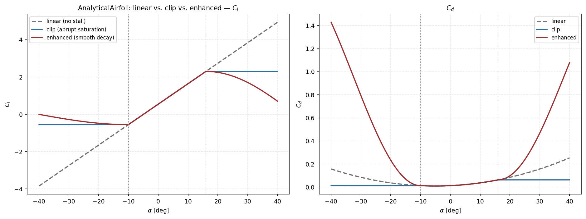
AnalyticalAirfoil, computed with the same parameters — those of the
starter_rotor airfoil ($C_{l_\alpha}=6.283$, $\alpha_0=-5°$,
$C_{d0}=0.01$, $k=0.01$, $\alpha_{stall}^+=16°$, $\alpha_{stall}^-=-10°$):
linear ignores stall; clip saturates
abruptly; enhanced decays smoothly toward flat-plate behavior.2.8.2.4 Tabulated model: measured or computed polars
Replaces the analytical formula with direct linear interpolation over points $(\alpha_i,C_{l,i},C_{d,i})$ provided as data: typically extracted from wind tunnel testing, XFOIL, or 2D RANS CFD. $C_{l_\alpha}$ and $\alpha_0$ are estimated post-hoc (central finite difference around the midpoint of the table, zero crossing of $C_l$) only for use in the rotational Himmelskamp/Snel correction (Section 8.3.1), which needs these two numbers; evaluation of $C_l$/$C_d$ itself never uses that line, only the tabulated data directly.

TableAirfoil, against the analytical
enhanced model used to generate them. Linear interpolation between points captures
any shape of real curve (including asymmetries and irregularities that no closed analytical model would reproduce) at the cost of requiring the complete table as input data, and
inheriting directly any noise/experimental error present in it.MultiSectionTableAirfoil generalizes to multiple tables (one per radial station or per Reynolds/Mach number) with additional bilinear interpolation in $r/R$ or condition, selected by _select_slice_for_condition(). This is the highest-fidelity model available, appropriate when radially distributed test data exist, but does not extrapolate well for $\alpha$ outside the measured range (outside it, holds constant the edge value: np.interp(..., left=..., right=...)).
2.8.2.5 Viterna-Corrigan extension to the full angle range
None of the previous models is valid beyond approximately $\pm90°$: thin airfoil physics/stall simply does not describe an airfoil operating at $150°$ angle of attack. The Viterna-Corrigan extension (1981) solves this by wrapping any base model (linear, clip, enhanced, or tabulated) and extending it continuously to $\pm180°$:
$C_{d,max}$ (flat plate drag normal to flow) is $2.01$ by default (pure 2D) or $1.11+0.018\,AR$ if an effective aspect ratio $AR$ is provided (Viterna & Janetzke, 1982). The coefficients $A_2$, $B_2$ are adjusted so the Viterna curve matches exactly the $(C_{l,s},C_{d,s})$ of the base model at $\alpha=\alpha_{stall}$: the extension is, by construction, continuous in value (though not necessarily in derivative) at the anchor point. For $90°<|\alpha|\le180°$, the implementation reflects the curve around $90°$ ($C_l$ changes sign, $C_d$ remains even), closing smoothly at $\alpha=\pm180°$ (geometric trailing edge pointed into the flow).

enhanced model at the airfoil's own $\alpha_{stall}=16°/-10°$) against naive extrapolation
of the enhanced model itself beyond its original validity range. Note the physical
peak of $C_d$ near $\pm90°$ (flat plate perpendicular to flow): absent in naive
extrapolation.In zBEMT, ViternaExtendedAirfoil is the base model used whenever
reverse_flow_model="viterna_full_range" is active (Section 8.2.5): it is this continuous extension all around that allows treating reverse flow simply by mapping
$\alpha_{eff}$ to $(-\pi,\pi]$, without any additional reverse-flow conditional logic.
enhanced uses 5 scalar parameters and a post-stall decay smooth-calibrated
to approximate qualitatively flat-plate behavior, without requiring test/CFD data. table/MultiSectionTableAirfoil interpolates directly
over test or CFD data for the airfoil and Reynolds/Mach range provided, behind the
same cl_cd() interface. viterna_full_range extends any of the
above to $\pm180°$; without this extension, the polar is not defined in the reverse-flow region (Section 8.2) nor beyond deep stall that low-aspect-ratio blades can reach.
linear extrapolates the line without limit (smooth equation over the entire $\alpha$ range);
clip saturates at $C_{l,stall}^\pm$ with a derivative corner at the saturation point.
Once the polar is defined, interpolation in local $(\alpha_{eff},M)$ at each element evaluation of element_state() feeds directly into Sections 10.3–10.4, subject to
the corrections of Section 8.3 before entering the coupling (Section 2.11).
2.8.3 Elementary lift and drag
$dL$ acts perpendicular to the local relative velocity $W$ and $dD$ along it. Every quantity in these two expressions has a distinct role, and reading them apart is what makes the behaviour of the whole rotor predictable.
The dynamic pressure sets the scale. The factor $\tfrac12\rho W^2$ is the dynamic
pressure of the flow the section actually meets. Air density (rho) multiplies every
force and every moment linearly, so thrust, torque and power all scale directly with it: the
same rotor at the same collective and the same rotational speed produces about a quarter less
thrust at $3000\,$m of altitude than at sea level, and this is the single dominant reason\rhover performance degrades with altitude and temperature. Because density scales lift and drag
identically, it does not move the angle of attack at which a section is efficient, and it
therefore leaves the dimensionless coefficients almost unchanged — which is precisely why
performance is reported in coefficient form.
The velocity dependence is quadratic, and it is not uniform. $W$ varies as $\Omega r$ along the span and, in forward flight, additionally with azimuth. A ten per cent increase in rotational speed raises the load on every element by about twenty-one per cent and the profile power by about thirty-three per cent, since power carries an extra factor of velocity. This is why rotational speed is such a blunt instrument for changing thrust, and why the outer third of the blade dominates the integral even when the coefficients there are modest.
The chord sets how much of that pressure becomes force. Chord enters linearly, so it is the one geometric quantity that trades directly against the coefficient: the same elemental lift can come from a wide section at a low angle of attack or a narrow one at a high angle. The first is closer to stall margin, the second closer to its limit — which is the trade the spanwise chord distribution exists to manage.
Where this breaks down. The expressions assume the section behaves two-dimensionally and that the coefficients can be looked up at a single effective angle. Both assumptions are revisited later: the coefficients are corrected for rotation, radial flow, compressibility and separation lag before this product is formed, and the finite blade count is accounted for after it.
2.8.4 Normal and tangential projection to disk
For small $\phi$ ($U_P\ll U_T$), $dF_n\approx dL$ and $dF_t\approx dD$: most of the lift converts to thrust, and most of the torque originates from profile drag. With larger $\phi$ (more heavily loaded rotor, or root where $U_T$ is small), an increasing fraction of lift is projected in the tangential direction. This is the induced cost: generating thrust requires tilting the resultant force in the direction of motion, producing additional torque beyond pure profile drag.

starter_rotor, $\mu_x=0.30$, level flight,
$\psi=90°$ upward in graph, advance in $+y$ direction): normal load $F_n$
(thrust per unit span) and tangential load $F_t$ (torque per unit span) over the complete disk. $F_n$ is systematically positive and largest on the advancing side ($\psi\approx90°$, where $U_T=\Omega r+V_x\sin\psi$ is maximum) than on the
retreating side ($\psi\approx270°$, where $U_T$ is minimum and can enter reverse flow near root, Section 8.2); the longitudinal-lateral asymmetry of the field is the same harmonic signature of
$\lambda_i(r,\psi)$ discussed in Section 7.1.1. $F_t$ changes sign: positive (absorbing torque
from the shaft) over most of the disk, but locally negative in the reverse-flow region, where the
blade can momentarily produce thrust rather than drag.The Results tab separates the tangential load into induced and profile contributions, which lets you determine whether power is being spent mainly turning the flow or overcoming airfoil drag (Section 12.2).
2.8.5 Solidity and disk loading
Solidity converts the load of one blade (Section 2.8.3, per unit span) into the load of $N_b$ blades per unit annular area, which enters equality with momentum theory (Section 2.3). The linearized form above, obtained by assuming $C_l$ linear in $\alpha$ and integrating analytically, serves for order-of-magnitude estimation; zBEMT solves numerically, element by element, with the actual airfoil polar, without this linearization.
2.9 Momentum Theory
2.9.1 Global actuator disk
The rotor is modeled as an actuator disk: a permeable, infinitesimally thin surface of area $A=\pi R^2$, which accelerates air uniformly, without friction and without induced rotation in the wake. The control volume analysis (Rankine–Froude) considers three stations along the streamtube: upstream ($\infty$, air at rest), at the disk ($1$), and in the far wake ($2$).
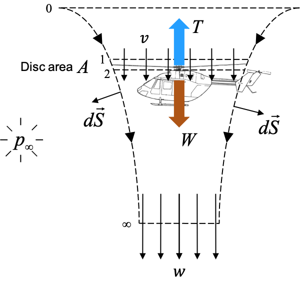
Conservation of mass, axial momentum, and energy (Bernoulli on each side of the disk, with pressure jump $\Delta p$ concentrated on it):
where $\dot m$ is the mass flow rate through the disk, $v$ the induced velocity at the disk plane, and $w$ the induced velocity in the far wake. Dividing the energy equation by the momentum equation (canceling $\dot m$):
The induced velocity in the far wake is twice the induced velocity at the disk plane. The thrust results in:
$v_h$ is the ideal hover-induced velocity. The ideal induced power, $P_i=Tv_h$, is the thermodynamic minimum to produce thrust $T$ with disk area $A$; the ratio of this minimum to actual power is the Figure of Merit (Section 2.6.4).
2.9.2 Vertical climb and descent
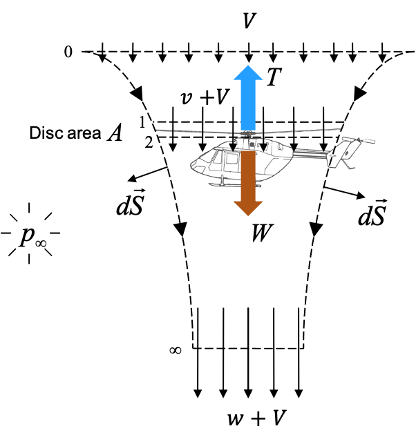
Repeating the analysis with climb velocity $V_z$ imposed on the rotor (mass entering the disk at $V_z+v$):
Climbing reduces the induced velocity required: the vertical motion already delivers part of the air mass with axial velocity, requiring less additional acceleration for the same thrust. Total power ($P=T(V_z+v)$) increases with climb despite lower $v$, via the $TV_z$ term.
2.9.3 Limits of validity: vortex ring and windmill brake
The relation in Section 2.9.2 assumes a well-defined streamtube passing through the disk in a single direction: valid in hover, in any climb ($V_z\ge0$), and in rapid descent. There exists a band of slow to moderate descent, $-2v_h\lesssim V_z\lesssim0$, in which this assumption does not describe the actual flow.
In descent, the disk moves into the region where it just accelerated its own air (own wake). For $V_z$ in this band, the induced velocity and descent velocity are of the same order of magnitude, and reingested air forms an unstable recirculation torus over the disk: the vortex ring state (vortex ring state, VRS), and in adjacent band, the turbulent wake state. Beyond this band, with descent fast enough for the wake to escape organized above the disk, momentum theory returns to validity: the windmill brake state, in which the rotor extracts energy from the flow like a wind turbine, still producing thrust.
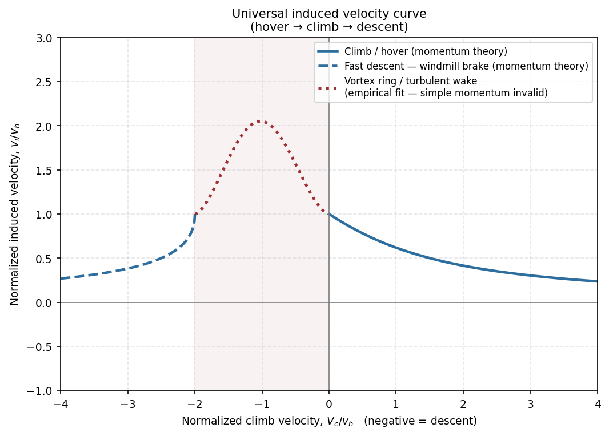
2.9.4 Effect of advance ratio on induced velocity
In horizontal advance, the mass flow rate through the disk generalizes to $U=|\vec V_x+\vec v_i|$, resulting in $v_i=T/(2\rho A\,U)$: implicit equation in $v_i$, which reduces to the formulas of Sections 2.9.1–2.9.2 in the appropriate limits. Induced velocity decreases monotonically with $\mu_x$: horizontal advance renews the air mass passing through the disk, reducing the additional induced velocity required for the same thrust. In rapid advance, $v_i\propto1/V_x$, and rotor power becomes dominated by profile drag (Section 2.8.4) and fuselage parasitic drag.
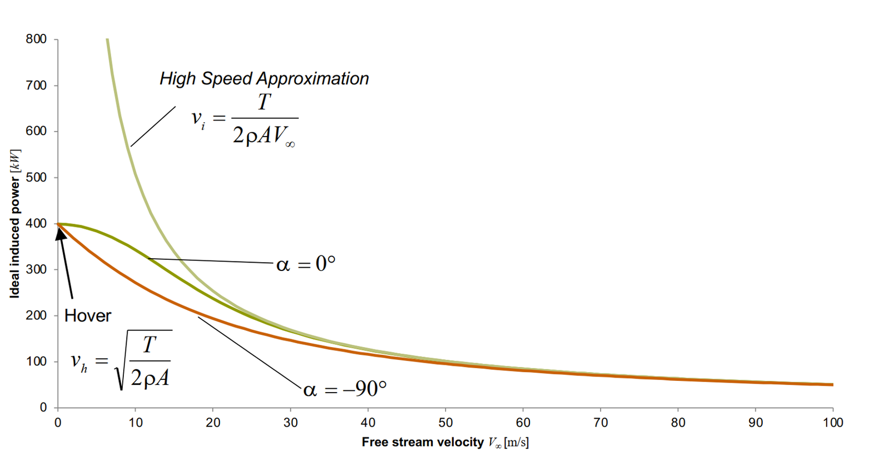
2.9.5 From global disk to elementary ring
The connection between global analysis (Sections 2.9.1–2.9.4) and Blade Element Theory (Section 2.8) requires a local version of momentum theory, applied to an elementary ring of radius $r$ to $r+dr$ (area $dA=2\pi r\,dr$). The central hypothesis (and the main conceptual limitation of classical BEMT) is that distinct radial rings do not exchange mass or momentum with each other: each ring behaves like an independent actuator disk, isolated from neighbors. This hypothesis ignores radial turbulent mixing and tip vortex induction on inner rings; the Prandtl correction (Section 8.1) reintroduces approximately the effect of finite number of blades that this hypothesis suppresses.
Under this hypothesis, repeating Section 2.9.1 for the ring:
Introducing the Prandtl factor $F$ (Section 8.1) and dimensionless variables (Section 2.6):
This equation, equated to the load calculated by the blade element (Section 2.8), determines $\lambda_i(r,\psi)$: the coupling formalized in Section 2.11. Elementary momentum theory addresses only the axial balance (thrust); the angular momentum conservation required to produce torque is accounted for by the blade element side (tangential force, Section 2.8.4), not reintroduced here as an independent momentum unknown.
2.10 The fixed-point equation
The two theories furnish two expressions for the same elementary normal load $dF_n$ (Sections 2.8 and 2.9). Defining $g$ as the function that maps a trial field $\lambda_i$ to the value of $\lambda_i$ that momentum theory would produce to sustain the load calculated by blade element theory from that same field, the problem takes the form
: a fixed-point equation, not a trivial algebraic one: the right-hand side depends on $\lambda_i$ nonlinearly via $\phi$, $\alpha_{eff}$, and the nonlinearity of $C_l(\alpha)$ near stall. There is no closed-form solution in general; the solution is obtained iteratively:
- Initialization. Field $\lambda_i^{(0)}$ from the uniform actuator disk estimate (Section 2.9.1);
- Blade element evaluation. With $\lambda_i^{(k)}$, compute $U_P$, $U_T$, $\phi$, $\alpha_{eff}$ (Part I), $C_l$, $C_d$, $L$, $D$ and normal/tangential components (Section 2.8) for all elements simultaneously;
- Momentum equation evaluation. From the same normal load, compute $\lambda_i^{next}$ (Section 2.11.1);
- Update. A numerical solver (Section 9.1) uses the residual $\lambda_i^{next}-\lambda_i^{(k)}$ to produce $\lambda_i^{(k+1)}$;
- Convergence. Steps 2–4 are repeated until the residual, at every element, is below tolerance (typically $10^{-6}$ in $\lambda_i$).
This cycle is implemented by element_state() (steps 2–3) and by the solvers
solve_fixed_point/solve_newton/solve_bisection/
solve_aitken (step 4, iterated).
Advanced derivation: how the two theories are coupled numerically
2.11 Formal Coupling
2.11.1 Equality of the two theories
For an element at $(r,\psi)$, Sections 2.9.5 and 2.8.4 provide two independent expressions for the elementary normal load:
Isolating $\lambda_i$ from the left side yields $g(\lambda_i)$ (Section 2.10), implemented as
lambda_i_next:
denom = rho * 4.0 * np.pi * R_DIM * np.sqrt(lambda_total**2 + mu_x**2 + 1e-6) * OmegaR**2 * F lambda_i_next = (Nb * Fn * harmonic) / denom
The harmonic factor comes from non-uniform inflow models (Section 7.2; equal to 1
in classical BEMT). The term $\sqrt{\lambda_{total}^2+\mu_x^2}$ in the denominator generalizes the mass flow velocity through the ring away from pure hover, reducing to $U_P$ when $\mu_x=0$.
2.11.2 Order in which an element is evaluated
Given a trial field $\lambda_i$, the function executes, vectorized over the entire mesh $(N_e,N_\psi)$:
- $U_P$, $U_T$, $W$ (Section 2.4);
- $\phi=\text{atan2}(U_P,U_T)$, $\alpha_{eff}=\theta-\phi$, with reverse-flow treatment per selected model (Section 8.2);
- $C_l$, $C_d$ from the polar at $(\alpha_{eff},M)$, followed by rotational corrections (Section 8.3.1), radial flow (Section 8.3.2), and compressibility (Section 8.3.3);
- $L$, $D$ (Section 2.8.3), $F_n$, $F_t=F_{t,i}+F_{t,p}$ (Section 2.8.4);
- Prandtl factor $F$ (Section 8.1);
- inflow harmonic, if active (Section 7.2.1);
- $\lambda_i^{next}$ (Section 2.11.1).
The returned aerodynamic state is then used by the numerical solver and by the Results plots. This implementation-level sequence is included for advanced diagnosis; normal GUI use only requires checking convergence and the physical inputs described above.
3. Hover
Hover ($\mu_x=0$, $V_x=0$) is the axisymmetric limit of the general problem: no azimuthal variation, so the mesh's $N_\psi$ dimension carries no physics (Section 2.3) and every physical correction that exists specifically to handle forward-flight asymmetry — reverse flow (Section 8.2), non-uniform inflow harmonics (Section 7.2), the azimuth-crossing term of the relaxation schedule (Section 9.1.5.1) — is inactive or a no-op. What remains is the irreducible core: momentum theory (Section 2.9) against blade element theory (Section 2.8), tip/root loss (Section 8.1), and the solver (Section 9.1).
Continuing the Section 1.4 walkthrough at $\mu_x=0$, RPM$=1200$, collective$=8°$:
| Quantity | Value | Cross-check |
|---|---|---|
| $C_T$ | $0.02863$ | — |
| $C_Q=C_P$ | $0.004111$ | equal in hover by definition (Section 2.6.4) |
| Thrust $T$ | $4248$ N | — |
| Ideal induced velocity $v_h=\sqrt{T/2\rho A}$ | $18.8$ m/s | Section 2.9.1, $A=\pi R^2=4.91\,\text{m}^2$ |
| Ideal induced power $P_i=Tv_h$ | $79.8$ kW | Section 2.9.1 |
| Actual power $P$ | $95.8$ kW | solved by BEMT (includes profile power) |
| Figure of Merit $FM=P_i/P$ | $0.833$ | Section 2.9.1: "well-designed rotors operate at 0.7–0.8" — this reference geometry sits slightly above that band |
| Hub side force $C_Y$, drag $C_H$, moments $C_{Mx}$, $C_{My}$ | $\sim10^{-19}$ | zero to floating-point noise — axisymmetric loading has no preferred azimuthal direction to push the hub sideways |
| Convergence | 100% of elements, 4.08 mean iterations | Newton-Raphson (Section 9.1.2), no reverse flow or stall complications to slow it down |
The near-zero hub forces ($10^{-19}$, not exactly $0$) are a useful sanity check in their own
right: any nonzero $C_Y$/$C_H$ larger than solver round-off in a hover case signals either a
genuine input asymmetry (uneven blades, non-axisymmetric geometry) or a bug, not real physics
— this is why the report generator (Section 12.1.5) prints near-zero summary values as plain
0 instead of solver noise in scientific notation.
4. Forward flight
The same case at $\mu_x=0.3$ (RPM and collective unchanged) turns on every mechanism Section 3 could skip. $U_T=\Omega r+V_x\sin\psi$ (Section 2.4.1) now depends on $\psi$: the advancing blade ($\psi=90°$) sees higher relative velocity, the retreating blade ($\psi=270°$) sees lower — at $\mu_x=0.3$ with this geometry's root cutout, low enough locally that part of the retreating disk falls into reverse flow ($U_T<0$, Section 8.2). $\alpha_{eff}$, $\phi$, and the induced velocity all inherit this azimuthal dependence (Section 2.5.2, Section 7.2), and the relaxation schedule's azimuth-crossing reduction (Section 9.1.5.1) activates to keep the solver stable through it.
| Quantity | Hover ($\mu_x=0$) | Forward flight ($\mu_x=0.3$) | What changed |
|---|---|---|---|
| $C_T$ | $0.02863$ | $0.04429$ | advancing-side dynamic-pressure gain outweighs the retreating-side loss at fixed collective (Section 12.2.1 makes this same point for a full $\mu_x$ sweep) |
| $C_Q=C_P$? | equal | $C_Q=0.003702$, $C_P=0.003702$ | still equal — that identity holds at any $\mu_x$ (Section 2.6.4), it isn't hover-specific |
| Thrust $T$ | $4248$ N | $6571$ N | — |
| $C_H$ (in-plane drag) | $\sim0$ | $0.003239$ | reverse flow and the $U_T$ asymmetry now push the hub in-plane (Section 2.6.4's $H$) |
| $C_Y$ (side force) | $\sim0$ | $-0.000665$ | same azimuthal-asymmetry origin, orthogonal direction |
| $FM$ | $0.833$ (meaningful) | $1.78$ | not physically meaningful past hover — $FM$ compares to the ideal actuator-disk power, a hover-only reference; Section 12.2.1 warns explicitly that $FM>1$ in forward flight signals absent collective trim, not a solver error |
| Convergence | 100%, 4.08 mean iter. | 99.97%, 4.60 mean iter. | a few elements (likely inside the reverse-flow region) take longer or don't fully converge — expected, not a red flag by itself |
The pattern to take away: everything that was exactly zero or trivially equal in Section 3 becomes nonzero and worth reading once $\mu_x>0$, and every nonzero value here has a specific named mechanism behind it (reverse flow, azimuthal $U_T$ variation, non-uniform inflow) rather than being generic "forward-flight noise." When a real result looks surprising, checking which of these mechanisms is active — and whether it's configured the way you expect — is the first diagnostic step, per the two-theory framing in Section 0.
5. Geometry
GeometryTab edits the radial table of the blade (r_norm,
chord_norm, twist_deg) — the canonical representation on disk,
regardless of the origin of the data (see the field-specific derivation in
Section 2.2.0). The solver does not distinguish between geometry generated by parameter from
geometry edited cell by cell: both produce the same RotorGeometryDef object.
5.1 Rotor/propeller constants
Number of blades $N_b$ and radius $R$, always visible (not part of the radial table, but of the same dataclass). Editable at any time, even after pasting a custom table.
GUI: tab Geometry › group "Rotor/propeller constants" › "Nº of blades:" / "Radius [m]:". .bemt:
geom.bemt · n_blades (integer, default 2) /
radius_m (meters, default 1.0). CLI:
--geom-n-blades N / --geom-radius R (combinable with
--geom-preset or applied over geometry already loaded from --geom-file).
5.2 Generate table (parametric popup)
The "Generate table…" button opens a popup with three presets, each calling a function from
geometry.py that fills the entire radial table upon confirmation (replaces, does not
concatenate):
| Preset | Parameters | Function | CLI |
|---|---|---|---|
rectangular | constant chord, linear twist root→tip | geometry.generate_rectangular() | --geom-preset rectangular --geom-chord C --geom-twist-root T0 --geom-twist-tip T1 |
tapered | linear chord (taper), linear twist | geometry.generate_tapered() | --geom-preset tapered --geom-chord C_root --geom-taper-ratio C_tip/C_root |
elliptic | elliptic chord (minimum induced drag theoretically), linear twist | geometry.generate_elliptic() | --geom-preset elliptic --geom-max-chord C_max |
Common to all three: root cutout (root_cutout_norm, --geom-root-cutout)
and number of stations in the generated table. What each preset does to the spanwise loading, and what
the root cutout removes: physics in Section 2.2.2. .bemt: the result is written to
geom.bemt as a table; the origin remains only as an informational metadata in
origin/origin_params (does not affect physics — the solver always reads the
table, never the generation parameters).
5.2.1 Solidity and blade aspect ratio
The same popup also accepts the rotor radius and blade count already shown in the Geometry tab, together with a target solidity or blade aspect ratio. These are alternative ways to size the chord distribution; they are not additional solver inputs once the radial table has been generated.
For blade count $B$, radius $R$, and planform area of one blade $S_b$, the solidity and the radius-based blade aspect ratio used by the popup are $$\sigma = \frac{B S_b}{\pi R^2},\qquad AR = \frac{R^2}{S_b} = \frac{B}{\pi\sigma}.$$
Consequently, with $B$ fixed, solidity and aspect ratio are not independent: increasing $\sigma$ necessarily decreases $AR$. The GUI keeps them consistent while scaling the generated chord. For a rectangular blade it scales the constant chord; for a tapered blade it preserves the root-to-tip taper ratio while scaling both chords; for an elliptic blade it scales the maximum chord. Root cutout and twist remain separate inputs. This is a planform-sizing relation, not a finite-wing correction: higher solidity generally permits more load per disk area but also raises profile drag and power, while higher aspect ratio tends to reduce induced loss for a comparable lifting distribution.
GUI: in Geometry › Generate table…, choose the preset, then edit Solidity σ or Blade aspect ratio. Confirming the popup replaces the radial table; it does not concatenate a second blade onto the existing table.
5.3 Radial table (direct editing)
Three editable columns cell by cell: r/R (0 to 1), chord c/R
(dimensionless, normalized by radius), twist in degrees. Confirming a cell immediately
reconstructs the geometry via geometry.generate_custom(r, c, t, ...), preserving
current $N_b$/$R$ (5.1), and the reconstructed blade is what the project
in memory holds from that instant on (1.2.2).
GUI: tab Geometry › table "Geometry = radial table
(r/R, chord, twist)". .bemt: geom.bemt ·
r_norm/chord_norm/twist_deg (lists of equal
length). Why chord tapers, why twist is negative outboard, and what
each does to the spanwise loading: physics in Section 2.2.2. CLI: --geom-preset custom
--geom-custom-points r:c:t,r:c:t,... (points separated by comma, each one
r/R:chord_norm:twist_deg) or --geom-file file.bemt to load a
complete ready RotorGeometryDef.
5.4 Live preview
Two mini-tabs on the right (Top view: blade plan; Chord/Twist: radial distribution), redrawn at each form edit with ~300 ms debounce. The edit that redraws the preview has already reached the project in memory (1.2.2); what still takes an explicit click is writing it to disk.
What the two views are. They are two orthogonal projections of the same object. The planform is the blade seen from above, drawn as a true outline — leading edge, trailing edge, root and tip closures — for every blade of the rotor at its real azimuthal spacing, so the blade count changes the picture and near-blade interference in a high-solidity or two-bladed design is visible directly. The chord/twist view is the same blade unrolled into the two radial functions that define it, $c(r)/R$ and the geometric pitch $\theta(r)$.
What you read off them. The planform carries the local solidity, and with it the spanwise loading. For $N_b$ blades,
The $r^2$ factor is why removing chord inboard costs almost nothing while the same removal at $r/R \approx 0.8$ takes away where the thrust actually lives. The chord/twist curve carries the angle-of-attack margin: the element sees
so with $\phi$ falling roughly as $1/r$, a blade whose twist does not fall at a comparable rate runs its highest $\alpha$ outboard and will stall near the tip; too much washout moves the peak inboard instead, and the root stalls first while the tip is loafing. The ideal hover reference is $\theta(r) \approx \theta_{tip}R/r$. One degree of twist is worth roughly $\Delta C_\ell \approx 0.11$ at a lift slope of $2\pi$ per radian — negligible far from stall, decisive within two degrees of it. The outer end of the outline is where the tip vortex is shed: a chord still finite at $r/R = 1$ means a strong concentrated vortex and a steep tip-loss penalty over the last few per cent of span.
What it cannot tell you. The preview is geometry and nothing else. No induced velocity, no inflow angle, no Reynolds number and no operating point enters either drawing, so nothing here shows whether the blade is stalled, whether the tip is compressible, or whether it produces the thrust you need. A planform that looks textbook can be badly mismatched to its condition; only a solved case answers that.
6. Airfoil
external_reynolds_list→ 2.8.2.4external_mach_list→ 2.8.2.4external_alpha_min_deg→ 2.8.2.4external_alpha_max_deg→ 2.8.2.4external_alpha_step_deg→ 2.8.2.4r_norm→ 2.8.2.4extend_full_range→ 2.8.2.5viterna_blend_width_deg→ 2.8.2.5name→ 2.8.2.0source→ 2.8.2.0cl_alpha→ 2.8.2.0alpha0_deg→ 2.8.2.0cd0→ 2.8.2.0k→ 2.8.2.0stall_model→ 2.8.2alpha_stall_pos_deg→ 2.8.2.3alpha_stall_neg_deg→ 2.8.2.3dynamic_stall_A→ 8.4.3dynamic_stall_fade_start_deg→ 8.4.4dynamic_stall_fade_end_deg→ 8.4.4use_dynamic_stall→ 8.4reverse_flow_model→ 8.2reverse_flow_blend_factor→ 8.2.3thin_plate_blend_center_deg→ 8.2.4thin_plate_blend_width_deg→ 8.2.4use_compressibility→ 8.3.3
AirfoilTab is the most extensive tab: it brings together the 2D aerodynamic model
(Section 2.8), Øye dynamic stall (Section 8.4), behavior off the attached curve — reverse flow and compressibility
(Section 8.2 and 8.3.3) — and the 2D profile geometry for
polar generation via NeuralFoil. All content in this tab, except the block
6.1 itself, is per radial section when there are 2 or more sections defined
(see 6.1.5).
6.1 Radial sections (multi-section airfoil)
A blade can use a single airfoil from root to tip, or vary the airfoil along the radius
(common in real blades: thicker profile near the root for structure, thinner at the tip for
performance). The GUI treats both cases in the same tab — what changes is how many sections exist.
Physics of the radially interpolated polar (MultiSectionTableAirfoil, how a station
between two defined sections gets its $C_l$/$C_d$): derivation in
Section 2.8.2.4.
GUI: tab Airfoil › block "Radial sections (multi-section
airfoil)" (top of tab, always visible). .bemt: file
airfoil_sections.bemt (list of AirfoilDef) when there are 2+ sections; otherwise the single airfoil lives in airfoil.bemt and
airfoil_sections.bemt is empty/absent. CLI:
--airfoil-sections-file file.bemt loads ready sections; there is no flag to
edit section by section from the command line — edit the .bemt manually or generate via
GUI and export.
6.1.1 "Single airfoil" mode (0 or 1 section)
Default state of every new project. The form of Sections 6.2 to
6.9 edits project.airfoil directly — with no section list or r/R field
visible. .bemt:
airfoil_sections=[] (empty list or key absent in airfoil.bemt).
The physical assumption. Single-airfoil mode says that one profile shape is extruded along the whole span: the same camber, the same thickness ratio, the same leading-edge radius from root to tip. It does not say that the aerodynamics is the same everywhere. The flow the blade meets changes strongly with radius,
and that variation stays resolved: each radial station selects the tabulated condition closest to its own Reynolds and Mach, so the root and the tip of a single-profile blade already receive different drag and different stall behaviour. Since $U$ grows linearly with $r$ while the chord usually tapers only mildly, the tip Reynolds is typically five to ten times the root value, and that whole spread is captured. What this mode gives up is the change of profile shape along the span.
What it costs when you use it anyway. On a blade genuinely built from one section — most small propellers, most test rotors, most untapered analytical studies — the cost is zero and this is the correct mode. On a real helicopter or wind-turbine blade it is not: those carry a thick root, often 18–24 % thickness for spar depth and stiffness, blending into an 8–12 % tip chosen for drag divergence. Forcing the thick root section onto the tip overstates profile drag exactly where the dynamic pressure is highest, which surfaces as excess torque and a depressed figure of merit; forcing the thin tip section onto the root understates the low-Reynolds drag rise and misplaces the root stall angle, so the case predicts a root that keeps working when the real one has separated.
The boundary. Move to multiple sections whenever thickness or camber actually varies along the blade, whenever the tip approaches drag divergence while the root sits at low Reynolds, or whenever the question being asked is where stall starts — that answer depends on the profile difference this mode cannot represent.
6.1.2 Create sections ("+ section")
With 0 or 1 section defined, clones the current form into two sections — one at
r/R=0.15 ("root") and another at r/R=1.0 ("tip"), because multi-section
requires at least a pair. With 2+ sections already existing, the same button clones the section
currently selected to a new position, chosen automatically in the middle of the largest
gap between neighboring sections (e.g., with sections at 0.15 and 1.0, the next suggested is 0.575). The
name receives the suffix " (copy)".
6.1.3 Navigate between sections (list and r/R position)
With 2+ sections: list (each row shows r/R=<value> — <name>) and
numeric field "r/R of this section" (r_norm); the free-text name of a
section is a label only, never read by the engine. Clicking a row in the list (1) saves the current state of the
form in the section being edited — nothing is lost when switching; (2) loads the
values of the clicked section in all fields of Sections 6.2–6.9, including whether dynamic stall
is on or off; (3) updates the live preview (6.9). All of it is already
recorded in the project in memory as you go; only writing it to disk needs an explicit
Save (1.2.2).
6.1.4 Remove section and automatic collapse ("- section")
Removes the selected section. If only 1 section remains, the GUI does not allow this state (a list of
exactly 1 element is not valid): it automatically collapses back to "single airfoil"
(6.1.1), using the remaining section as a base (with r_norm
cleared). .bemt: when applied, airfoil_sections.bemt becomes
empty again and airfoil.bemt takes over.
6.1.5 What is edited per section vs. what is global
All content from 6.2 to 6.9 is per section when there are 2+ sections — including whether Øye dynamic stall is on per section (one section can have Øye active while its neighbor does not). There is no "global" parameter for the Airfoil tab today: mesh, general physics, inflow and solver (Section 9.3) are global, but they live in another tab because they belong to the rotor as a whole, not the airfoil. See also 6.8.2 (NeuralFoil is also generated per section, one at a time).
6.2 Aerodynamic model
Combines polar source, linear coefficients and static stall model — complete physics derivation in 2.8.2.0.
6.2.1 Polar source and linear coefficients
GUI: tab Airfoil › block "a) Aerodynamic model"
› combo "Source:" (analytical / table / neuralfoil
— the latter is not a new value of source: internally it remains
source="table" with external_engine="neuralfoil", see
6.8) + fields "Cl_alpha [1/rad]:", "alpha0 [deg]:", "Cd0:", "k (Cd = Cd0 +
k·Cl²):", visible only with analytical source.
$$C_l(\alpha) = C_{l_\alpha}(\alpha-\alpha_0)\,,\qquad C_d = C_{d0}+k\,C_l^2$$
.bemt: airfoil.bemt · source
("analytical"/"table", default "analytical") ·
cl_alpha (default $2\pi\approx6.283$) · alpha0_deg (default
$-4.5$) · cd0 (default $0.0155$) · k (default
$0.0$). CLI: --airfoil-source {analytical,table}; the
four scalar coefficients do not have a dedicated flag — set via .bemt or
--save-as after adjustment in the GUI.
6.2.2 Static stall model
Combo with four mutually exclusive options (never combined with each other). Where the linear lift curve stops being valid, and what each closure assumes past that point: physics in Section 2.8.2.
| Option | Physics |
|---|---|
linear | Line/parabola from 6.2.1 without limit, valid beyond real stall: smooth equation across the entire α range, without discontinuity in derivative. Blocked with active dynamic stall (validation rule, 15.3): without stall in the base there is no separation for Øye to model. |
clip | $$C_l=C_{l,stall}^{\pm}\ \text{(saturated beyond }\alpha_{stall}^{\pm}\text{)}$$ Saturates at the stall value and holds constant; derivative corner at $\alpha_{stall}^\pm$. |
enhanced (default) | Smooth post-stall decay ($C^1$-continuous) towards flat-plate behavior ($C_{d,fp}\approx1.9$), in a window of $30°$ beyond $\alpha_{stall}^\pm$ — see complete formula in 2.8.2.3. Balances mathematical continuity with qualitatively correct post-stall physics, without additional experimental data. |
viterna | Viterna-Corrigan extension (2.8.2.5), valid from $-180°$ to $+180°$: when chosen, the pre-stall curve is always the pure linear line, extended from $\alpha_{stall}^\pm$. Equivalent to automatically enabling the full-range extension (6.2.4) for analytical source. |
GUI: combo "Static stall model:" (same block a). .bemt: airfoil.bemt · stall_model ·
default "viterna" (matches reverse_flow_model="viterna_full_range",
solver default). CLI: not exposed —
verification finding: no --stall-model flag exists for the 4 analytic options today (the existing
--stall-model flag in the CLI controls something different, see
6.3.2); set via .bemt/--save-as.
6.2.3 Stall angles (positive and negative)
$\alpha_{stall}^+$ and $\alpha_{stall}^-$ — the angles where the real polar begins to depart visibly from the line (not the $C_{l,max}$ angle, which is already beyond the beginning of flow separation; see engineering note in 2.8.2.3). Ignored for table source (there, CLmax/CLmin and the corresponding angles are detected automatically from the table itself).
GUI: "alpha stall + [deg]:" / "alpha stall - [deg]:".
.bemt: alpha_stall_pos_deg (default $15.0$) /
alpha_stall_neg_deg (default $-6.0$). CLI: not exposed.
6.2.4 Full-range extension and blend width
For table source, its own checkbox (not merged with the stall-model selector,
since the table has no "stall model", only data): "Extrapolate table with Viterna-Corrigan (beyond
imported data)". The blend width controls a $C^1$-continuous transition between the
model/table and the extrapolation, replacing the old abrupt switch at $\alpha_{stall}$ (which
produced an "spike" in slope) — see 2.8.2.5.
GUI: checkbox (visible only with table/
neuralfoil source) + "Viterna blend width [deg]:" (visible only when the extension is
actually active — table source with the toggle on, or
analytical source with stall_model="viterna"). .bemt: extend_full_range (boolean, default true
— for table source it is the actual choice; for analytical/
external it is ignored, the source of truth is stall_model=="viterna",
function models.uses_full_range_extension()) ·
viterna_blend_width_deg (default $4.0$). CLI: not exposed.
6.3 Dynamic stall
This is the user-facing setup page, not a second derivation. Choose the base polar and enable the correction here; the complete physical and mathematical model is in Section 8.4. zBEMT uses the frequency-domain method, which resolves the dynamic response in harmonics without time-marching.
6.3.1 Enable dynamic stall
Disabled (with tooltip explaining the reason) when the base polar has no real
static stall: analytical source with stall_model="linear". Øye interpolates
between the attached curve and the separated $C_l$ from the static polar (8.4.1) —
without separation there is nothing to model. What the lag does to the loads over a
revolution: physics in Section 8.4.
GUI: block "b) Dynamic stall (Øye)" › checkbox "Enable dynamic
stall". .bemt: airfoil.bemt ·
use_dynamic_stall (boolean, default false) — single copy of the
field: lives in AirfoilDef, not in BEMTConfig. CLI: --dynamic-stall / --no-dynamic-stall | --airfoil-stall-model {linear,clip,enhanced,viterna}.
6.3.2 Solution method
zBEMT solves the aerodynamic lag of Øye dynamic stall analytically per harmonic (frequency domain via FFT), without time-marching. This approach is exact within the approximation of constant lag time constant per radial line and is compatible with the Run Case/Batch execution model (single case, immediate response).
Complete physics: Section 8.4. It contains the separation state, time constant, harmonic transfer function, and model limits.
GUI: the frequency-domain method is the only option and is automatically selected.
.bemt: dynamic_stall_method (default "frequency").
CLI: --dynamic-stall / --no-dynamic-stall
turns on and off; while Øye is the only dynamic model, there is nothing else to choose
(the old --stall-model oye was a no-op and was removed).
The implemented harmonic response is the first-order transfer function $$H(\omega)=\frac{1}{1+i\omega\tau},\qquad \tau=A\frac{c}{2W}.$$ Thus a harmonic is attenuated by $(1+(\omega\tau)^2)^{-1/2}$ and delayed by $-\arctan(\omega\tau)$. The code filters the periodic azimuthal separation/load signal per radial station and transforms it back to the $(r,\psi)$ mesh; it does not approximate this mode by a hidden time-marching loop.
Multi-section: dynamic_stall_method applies to the entire blade. The on/off switch, the $A$, and the fade angles are per section.
If the sections enabling dynamic stall disagree in the blade fields, the value of the innermost section prevails and validation warns.
6.3.3 Time constant A
$\tau=A\cdot c/(2W)$: aerodynamic lag time constant ($A\approx8$, typical Øye/QBlade value — derivation in 8.4.3.
GUI: "Constant A:". .bemt:
dynamic_stall_A (default $8.0$). CLI: not exposed.
6.3.4 Fade window
Angles where the dynamic effect begins and ends being damped towards pure static behavior, avoiding unphysical hysteresis at extreme angles — see 8.4.4. Validation blocks (error) if start $\geq$ end.
GUI: "Fade start [deg]:" / "Fade end [deg]:".
.bemt: dynamic_stall_fade_start_deg (default $40.0$) /
dynamic_stall_fade_end_deg (default $50.0$). CLI: not exposed.
For $a=|\alpha|$, the implementation multiplies the dynamic correction by $$f(a)=\begin{cases}1,&a\le a_s,\\(a_e-a)/(a_e-a_s),&a_s<a<a_e,\\0,&a\ge a_e,\end{cases}$$ where $a_s$ and $a_e$ are the two fields. This confines the Øye lag to the stall range where its calibration is meaningful and avoids extrapolating hysteresis into fully separated flow; the static polar remains unchanged.
6.4 Reverse flow
In forward flight an inboard band on the retreating side meets the flow trailing-edge first, and a polar measured leading-edge first says nothing valid about it. This page selects how that region is treated; the physics of the region and the comparison that decides between the five treatments are in Section 8.2.
The setting is stored with the engine configuration rather than with the airfoil, even though it reads as a property of the section: only the widget sits on this tab, next to the stall model it is usually decided alongside.
6.4.1 Reverse flow model
Five mutually exclusive treatments of the region where the trailing edge meets the flow. The region itself, and the comparison that decides between the five: physics in Section 8.2. The table below answers only which to pick; each row links to the section that derives it.
| Option | When to choose it |
|---|---|
simple_flip | Only to reproduce a legacy result, or as a deliberately crude bound. It is the least smooth of the five and offers nothing the others do not — 8.2.1. |
flat_plate (solver default) | When the reverse region is small enough that its detail does not matter and a defensible worst case is wanted: it produces no lift and heavy drag there. The usual choice below $\mu_x\approx0.3$ — 8.2.2. |
alpha_blending | When the abrupt option is causing convergence trouble at the boundary and a softer transition is enough to settle it. It reduces the jump without removing it — 8.2.3. |
thin_plate_blend | When the reverse region is large and smoothness matters — a derivative-based solver, or a case at high advance ratio. It is continuous everywhere and needs no data beyond the measured range — 8.2.4. |
viterna_full_range | When the polar already covers the full angle range, which makes any special treatment unnecessary: the polar itself carries the physics in every quadrant. Requires the full-range extension to be active (6.2.4) — 8.2.5. |
GUI: block "c) Compressibility and reverse flow" › sub-block
"Reverse flow" › combo reverse_flow_model: (the 5 options above only list
viterna_full_range when the full-range extension is active — see
dynamic note in the GUI itself). .bemt: config.bemt ·
reverse_flow_model (default "viterna_full_range"). CLI: not exposed — set via .bemt/--save-as.
Validation blocks (error) viterna_full_range without an actually extended polar
(15.3).
6.4.2 Reverse flow blend factor
Controls the rate of the $\tanh$ transition in alpha_blending — see
8.2.3.
With $\xi=U_T/(\Omega R)$, zBEMT evaluates the smooth branch as $$\alpha_{blend}=\alpha_{geom}\tanh(k\xi),\qquad k=\texttt{reverse\_flow\_blend\_factor}.$$ Large $k$ approaches a hard switch at $U_T=0$ and can increase residual oscillation; small $k$ spreads the transition over a larger disk region. The setting changes the interpolation, not the physical reversal boundary.
GUI: "reverse_flow_blend_factor:". .bemt:
reverse_flow_blend_factor (default $5.0$). CLI: not exposed.
6.4.3 Centre and width of the thin-plate transition
$|\alpha_{geom}|$ where the blend is at 50% (center) and width of the transition window
(edge0=center−width/2, edge1=center+width/2) — see
8.2.4.
GUI: "thin_plate_blend_center_deg:" / "thin_plate_blend_width_deg:".
.bemt: thin_plate_blend_center_deg (default $35.0$) /
thin_plate_blend_width_deg (default $20.0$). CLI: not exposed.
6.4.4 Mask reverse flow in plots
Does not affect physics or CSV/summary — only the drawing of 2D disk maps (region $U_T<0$ becomes "hole"/NaN in the contour, avoiding very steep transitions/artifacts right at the boundary). Same behavior as the reference zBEMT MATLAB.
GUI: checkbox "mask_reverse_flow_plots". .bemt: mask_reverse_flow_plots (boolean, default
true). The physical boundary and the reason the mask cannot alter
loads are derived in 8.2.6. CLI:
not exposed (affects only the Results tab/plot export, no CLI equivalent today).
6.5 Compressibility
Air compressibility raises the lift a section produces at a given angle of attack, and the effect is concentrated where the relative velocity is highest — the tip of a fast rotor, or a propeller in cruise. Enable it here; the magnitude to expect, the Mach ceiling the engine applies and the ways the correction stops being valid are all part of its physics, in Section 8.3.3.
Two practical points decide whether this checkbox belongs on or off for your case. The Mach
number is computed per section from the local relative velocity
(Section 2.4) and the speed of sound a_sound
(9.3.1), so the setting is worth enabling as soon as the tip passes roughly
$M=0.3$ and is irrelevant below that. And if the imported table (6.6)
already carries a Mach axis, turning this on counts compressibility twice — validation
(15.3) warns when it detects that combination.
GUI: Airfoil tab › Compressibility and Reverse Flow
Effects › Compressibility. .bemt:
config.bemt · use_compressibility (boolean, default
true). CLI: not exposed.
6.6 Data import / tabulated polar
Visible with table or neuralfoil source (6.2.1).
Replaces the analytic formula with direct linear interpolation over points
$(\alpha_i,C_{l,i},C_{d,i})$ — derivation in 2.8.2.4. Each
"condition" (slice) can carry optional labels of r_norm/Reynolds/Mach; the
combination of labels present across the entire list decides, in airfoils.to_airfoil(), whether the
result is a single polar or a multi-section one (MultiSectionTableAirfoil), and
which slice each radial station consumes. The two extra axes are not treated alike: along
$r/R$ the engine interpolates between sections, while in Reynolds and Mach it picks the
nearest tabulated slice for that station's own $(Re,M)$ — interpolation between
Reynolds/Mach slices is not implemented, which is why a table must bracket the operating
envelope rather than merely touch it (6.10).
GUI: block "e) Data import / tabulated polar" ›
buttons "Import CSV…" / "Export CSV…" + list of conditions (mark which
ones to overlay in the preview, 6.9). .bemt:
airfoil.bemt · table_slices (list of
PolarSlice{alpha_deg[], cl[], cd[], r_norm?, reynolds?, mach?, label}). CLI: --airfoil-table CSV imports and sets
source="table" (same importer as airfoils.import_polar_csv).
6.6.1 The CSV format the importer reads
The file is a plain comma-separated table with a header line and one row per point,
read by airfoils.import_polar_csv(). There is nothing else to it: no block
separators, no repeated headers, no sections. The whole format is decided by which columns the
header names.
One row is one angle of attack. The three required columns are the angle in degrees and the two coefficients at that angle:
alpha_deg,Cl,Cd -5,-0.32,0.0121 0,0.21,0.0098 5,0.74,0.0115
Column names are matched case-insensitively, against a list of accepted spellings
(_COLUMN_ALIASES in zbemt/airfoils.py), so a file exported by another
tool usually imports unchanged:
| Meaning | Required? | Accepted header spellings |
|---|---|---|
| Angle of attack, degrees | required | alpha_deg, alpha, aoa, aoa_deg |
| Lift coefficient | required | cl, Cl, CL |
| Drag coefficient | required | cd, Cd, CD |
| Radial station, $r/R$ | optional | r_norm, r/R, rR, radial_station |
| Reynolds number | optional | reynolds, Re, re |
| Mach number | optional | mach, Mach, M |
Any column the list does not recognise is ignored, so a file carrying $C_m$, transition
location or a comment column costs nothing. A missing required column is the one
rejection at this stage: the importer raises, naming the column it could not find and listing the
headers it did see, rather than guessing by position — a file whose first column happens to
be $C_l$ would otherwise import silently as an angle sweep. The Python API accepts an explicit
column_map (for example {"alpha_deg": "AOA[deg]"}) for headers no alias
covers.
A sweep is declared by an extra column, not by a block layout. This is the question the format most often raises, and the answer is the same for all three optional axes: add the column, and repeat its value on every row that belongs to that condition. One block is one combination of the optional columns present:
alpha_deg,Cl,Cd,reynolds,mach -5,-0.30,0.0140,200000,0.2 0, 0.19,0.0115,200000,0.2 -5,-0.32,0.0121,600000,0.2 0, 0.21,0.0098,600000,0.2
Those four rows are two slices — $Re=2\times10^5$ and $Re=6\times10^5$, both at $M=0.2$
— each with its own $\alpha$ sweep. Grouping is by value, not by position
(pandas.groupby on the optional columns), so the rows need not be sorted, and the
blocks need not be contiguous. The same file may carry $r/R$, Reynolds and Mach at once; the
engine then resolves the polar in every axis present, per radial station and per flight
condition. With no optional column at all, the file is one polar used everywhere on the blade.
Delimiter and decimal are those of a standard CSV as pandas.read_csv reads it:
comma-separated, dot as decimal separator, one header line. A semicolon-separated or
comma-decimal export from a localised spreadsheet is not converted — it arrives as
a single unparsable column and fails the required-column check. Blank cells in an optional column
are preserved as "no value for this axis" rather than dropping the block, which is what makes a
round trip through Export CSV… and back exact.
What the importer tells you before you trust it. On import the panel reports the file
name, how many polars were built from it, and which extra axes were recognised ("Extra axes
detected: reynolds, mach", or "none (single polar)"). That line is the check that the header was
understood the way you intended: an Re column spelled Reynolds_number
imports without error and produces one polar, silently averaging nothing and resolving
nothing — the count of polars and the axis list are how that shows up. Export
CSV… writes this same format (columns alpha_deg, Cl, Cd, r_norm, reynolds,
mach), so exporting once is the quickest way to obtain a template to fill in.
Nothing in the file states an $\alpha$ range or a units convention: angles are degrees, coefficients are dimensionless, and the range covered is simply the range of the rows. Beyond it the engine extrapolates according to 6.2.4 / 2.8.2.5, and between tabulated Reynolds/Mach slices it selects by nearest match, not interpolation — the trap discussed in 6.10.
6.7 Profile 2D geometry
Necessary only for polar generation via NeuralFoil (6.8); optional/ illustrative for analytic/tabulated models. The contour itself never enters the blade element equations: it enters only through the polar it generates, whose physics derivation is in Section 2.8.2.0.
| Source | Parameters |
|---|---|
naca4 / naca5 | 4 or 5-digit NACA code (e.g. 2412, 23012) |
cst | CST coefficients (Class-Shape Transformation) for upper/lower surface, separated by comma. Not offered in the combo: kept for scripts (airfoils.generate_cst) and for projects that already use it, in which case the option reappears for that project alone rather than showing a wrong source over an existing contour |
bezier | Bézier control points, one x,y per line. Same status as cst above |
imported | Coordinate file loaded from disk — Selig layout; Lednicer is rejected with an explanation (6.7.1) |
6.7.1 The coordinate file the importer reads
One point per line, two numbers, $x$ then $y$, both normalised by the chord, separated
by space, tab or comma. That is the entire contract of
airfoils.load_profile_dat():
NACA 0012 1.000000 0.001300 0.500000 0.065000 0.000000 0.000000 0.500000 -0.035000 1.000000 -0.001300
Anything that is not a pair of numbers is skipped — a profile name, a header, a
comment, a blank line — so the usual UIUC / airfoiltools download works untouched. The
extension decides nothing: .dat, .txt and .csv are offered
in the dialog, and the content is what is parsed. A line with three or more numbers is skipped
too, which is worth knowing before wondering where a column of $C_p$ values went.
Selig works as downloaded. Its layout is a name line followed by a single closed loop: trailing edge, forward over the upper surface, around the leading edge, back along the lower surface, to the trailing edge. The points are used exactly as given — no reordering, no closing of the trailing edge, no rescaling — because reordering a contour requires guessing which surface each point belongs to, and a guess that is wrong once produces a plausible-looking profile with a crossed panel in it.
Lednicer is rejected, on purpose, with the reason. A Lednicer file opens with a line
holding the number of points of each surface (61. 61.), and that line is a
perfectly readable pair of numbers — it used to be imported in silence as a point at
$x=61$, giving a contour with a spike sixty-one chords long and nothing on screen saying so. The
importer therefore rejects any $|x|$ beyond $1.5$ chords
(_X_MAXIMO_DE_CONTORNO), and the error names the likely cause and the fix. It is a
loud failure by design, and the fix is either editing the file — delete the count line, and
join the two surfaces, which Lednicer lists separately and both starting at the leading edge,
into one loop — or downloading the Selig version of the same airfoil, which needs no
editing. A file from which no pair of numbers at all could be read is rejected the same way,
naming the file.
Nothing else is validated: the contour is not required to be closed, to start at the trailing edge, or to have a particular point count. What it is required to be is normalised — $x$ spanning $0$ to $1$ — because the chord is the length scale everything downstream assumes, and a contour in millimetres would otherwise reach NeuralFoil as an airfoil of a thousand chords' extent.
Typical rotor/blade preset: combo with common NACA codes for rotor/propeller blades (e.g. NACA 00XX/23XXX family), with explanatory note; "Use preset" button fills the code automatically.
GUI: block "f) Profile 2D geometry" › combo "Source:" +
source-specific fields + buttons "Generate geometry" / "Import .dat…". .bemt: airfoil.bemt · geometry (object
ProfileGeometry{source, naca_code, cst_upper[], cst_lower[], bezier_control_points[],
imported_path, n_points, x[], y[]}). CLI:
--airfoil-geometry SPEC (NACA4/5 code, e.g. naca2412, or a preset
like naca23012) — used only with --gen-neuralfoil
(6.8); no CLI flag for CST/Bézier/imported in isolation.
6.8 External solver — NeuralFoil
NeuralFoil (Peter Sharpe) is a neural network trained on thousands of XFOIL polars — given a 2D profile (6.7) and a condition (Reynolds, Mach, $\alpha$ range), it estimates $C_l$/$C_d$ without running a true flow solver, in seconds. XFOIL itself is not supported in this version. The generated grid is consumed by the engine exactly like any tabulated polar — physics derivation in Section 2.8.2.4, and extrapolation beyond the swept $\alpha$ range in 2.8.2.5.
GUI: block "g) External solver — NeuralFoil" (disabled, with
note, if the optional neuralfoil package is not installed). .bemt: no "NeuralFoil" key in the .bemt — see
6.8.2, the result becomes a common table.
6.8.1 Run the solver
Prerequisite: 2D geometry already generated/imported (6.7). The "Run NeuralFoil" button generates a polar for the currently selected section (6.1.3) — with multiple sections, repeat per section — sweeping Reynolds and Mach lists and an $\alpha$ range.
GUI: "Reynolds list:" / "Mach list:" / "alpha min [deg]:" /
"alpha max [deg]:" / "step [deg]:" + "Run NeuralFoil" button. .bemt:
form fields map to AirfoilDef.external_reynolds_list,
external_mach_list, external_alpha_min_deg (default $-20$),
external_alpha_max_deg (default $20$), external_alpha_step_deg
(default $0.5$); external_engine="neuralfoil". CLI:
--gen-neuralfoil --airfoil-geometry SPEC --reynolds R1,R2,... --mach M1,M2,...
--alpha-range MIN:MAX:STEP — runs in standalone mode (does not run BEMT, only generates the
table and exits).
6.8.2 Where the generated data goes
Verified in gui//api.py/external_solvers.py:
nothing is written to disk automatically. Exact sequence:
- Generation: the result (one
PolarSliceper Reynolds×Mach combination) stays in memory only, inself._generated_external_slices. - Preview and project, in one step: these slices are copied to
self._imported_slices(the same list used by manual CSV import, 6.6), the "Source" combo changes by itself toneuralfoil, the preview (6.9) shows the result, and the same slices becomeAirfoilDef.table_slicesof the current section in the project held in memory — there is no separate confirmation click (1.2.2). The generated polar is therefore usable by Run Case straight away. - How it is stored: in the data model and in the
.bemt, the GUI "neuralfoil" mode is not a separate source: it is saved assource="table"(table of Cl/Cd × alpha points, generated by neural network instead of imported from CSV). .bemt:airfoil.bemtwritessource: "table"+table_slices: [...]— does not record the fact that it came from NeuralFoil, only the numbers. - Until you save, it is still only in memory: the tab title picks up the unsaved asterisk, and the table reaches disk only on Save. Closing the window without saving discards it (the exit prompt offers to save first); "Export generated table…" writes it to CSV independently of the project, which is the way to keep a run you do not want to commit to this project.
6.8.3 Export without committing the project to disk
The "Export generated table…" button writes self._generated_external_slices
straight to a .csv on disk, without going through the project — useful to compare
geometries before deciding which one to keep, or to reuse the table in another project via
manual import (6.6).
.bemt: none, it is a loose CSV, not a .bemt. CLI: --export-table PATH (with --gen-neuralfoil)
writes straight to PATH; the same api.export_polar_table(slices, path) function
backs the button. If --export-table is omitted, the CLI writes the generated table
directly into the project .bemt, with no intermediate loose export step.
6.9 Preview: Cl×α, Cd×α, Cd×Cl, Profile
Four mini-tabs on the right, always visible, redrawn at each form edit with ~300 ms debounce, showing the same values the project already holds in memory (1.2.2), each with Matplotlib toolbar (zoom, pan, "Edit axis" for limits/linear-log scale).
GUI: block "d) Preview options (Compare)" › field "Mach for
comparison in preview:" — overlays $C_l$/$C_d$ curves for various Mach in the embedded preview,
without reproducing the solver's actual correction (which exists only inside BEMT, 6.5).
A panel "Checks (mutually exclusive/redundant combinations)" runs validation.py
(15.3) on each change.
6.10 Navigate (r/R, Reynolds, Mach)
Multi-axis navigator state shared between the "Polar" and "Profile" tabs of the preview (6.9): chooses which slice/section to show when there are multiple tabulated conditions (6.6) or multiple radial sections (6.1).
It selects a view, never a computation. A tabulated polar is a family $C_\ell,\,C_d = f(\alpha;\,Re,\,M,\,r/R)$, and a plot can only show one slice of it at a time. This navigator picks that slice. It has no effect on any run: when the case solves, the slice is chosen per radial station from that station's own conditions, by the same nearest-match rule the preview uses — so what you see here is faithful to what the engine will consume, but moving the navigator changes only the picture.
Why the two aerodynamic axes exist. Reynolds number sets the state of the boundary layer. Below roughly $Re \sim 10^5$ the layer stays laminar over much of the chord and separates without reattaching, so minimum drag can double and maximum lift collapse relative to the same profile at $10^6$; stepping the Reynolds control down the tabulated list and watching the drag bucket fill in and $C_{\ell,max}$ fall is the fastest check that the table actually resolves the root. Mach number sets compressibility. In the linearized subsonic range the lift slope grows as
which is a modest 7 % at $M = 0.35$ but 25 % at $M = 0.6$ and unbounded as $M \to 1$; the correction is capped at $M = 0.9$ because it is a linearized theory and means nothing beyond that (8.3.3). Past the critical Mach number a shock forms on the upper surface, drag rises sharply, and the real polar departs from anything the linearized correction predicts — only tabulated data at that Mach can show it.
The practical use, and the trap. Walk the axes to the extremes the case will actually produce — root Reynolds and tip Mach — and confirm a tabulated slice exists near each. Selection is nearest-neighbour, not interpolation, and nothing warns when the request falls outside the tabulated range: a table that stops at $M = 0.4$ quietly supplies its $M = 0.4$ data to a tip running at $0.75$, and the run converges cleanly to an answer with no compressible drag rise in it at all. A polar family that does not bracket the operating envelope is the most common single source of confidently wrong results.
7. Inflow models
7.1 Inflow models and zBEMT solvers
7.1.1 Momentum model for $\lambda_i^{next}$
Model (cfg.inflow_field_model) | Formulation | Section |
|---|---|---|
glauert_* | No azimuthal harmonic: $K_x=K_y=0$. Each ring solved independently of $\psi$: this is classical BEMT, and also the zBEMT default value (inflow_field_model="glauert_local"). | 15 |
coleman_* | Harmonic longitudinal only: $K_x=\sqrt{1+\text{ratio}^2}-\text{ratio}$, $K_y=0$. | 15.1 |
drees_* | Harmonic longitudinal and lateral: $K_x$ with $\mu_x^2$ correction, $K_y=-2\mu_x\neq0$. | 15.2 |
pitt_peters_steady | Three coupled ODEs for $(\nu_0,\nu_s,\nu_c)$, derived from linearized unsteady actuator disk, solved in equilibrium. | 15.4 |
pitt_peters_unsteady | The same 3 ODEs, integrated in time (not in equilibrium): captures transient response. | 15.4.1 |
The names "Glauert", "Coleman", and "Drees" are not synonymous with "inflow harmonic" in
general: they are three historically distinct models with different numbers of azimuthal
degrees of freedom: Glauert (1926) is the original ring momentum theory, with no
wake tilt correction; Coleman (1945) adds a single longitudinal harmonic ($\cos\psi$); Drees
(1949) adds also the lateral harmonic ($\sin\psi$) and refines the longitudinal coefficient with
a $\mu_x^2$ term. The exact mathematical formulation of each is in Section 7.2; the figure below
compares the four resulting inflow fields, computed by the actual zBEMT engine under the same
flight condition. In the table above, the suffix _local or _global
does not describe the harmonic itself, but the numerical coupling mode between the full mesh
and the harmonic correction, detailed in Section 7.1.3.

solve_bemt with four values of
cfg.inflow_field_model: glauert_local (perfect revolutionary symmetry:
$\lambda_i$ varies only with $r$), coleman_local (front-rear asymmetry,
no perceptible lateral asymmetry), drees_local (more pronounced
front-rear asymmetry, more visible lateral asymmetry) and
pitt_peters_steady (qualitatively distinct pattern, obtained by solving the physics
of unsteady actuator disk instead of adjusting $K_x$, $K_y$ empirically: note the displaced
lobe and greater concentration of negative inflow).7.1.2 Fixed-point solver
Solver (cfg.solver) | Method | Convergence | Section |
|---|---|---|---|
fixed_point | Picard iteration with relaxation | Linear | 17.1 |
newton | Newton-Raphson, diagonal Jacobian by finite difference | Quadratic | 17.2 |
bisection | Bisection, derivative-free | Linear, guaranteed | 17.3 |
aitken | Picard accelerated by $\Delta^2$ extrapolation | Superlinear | 17.4 |
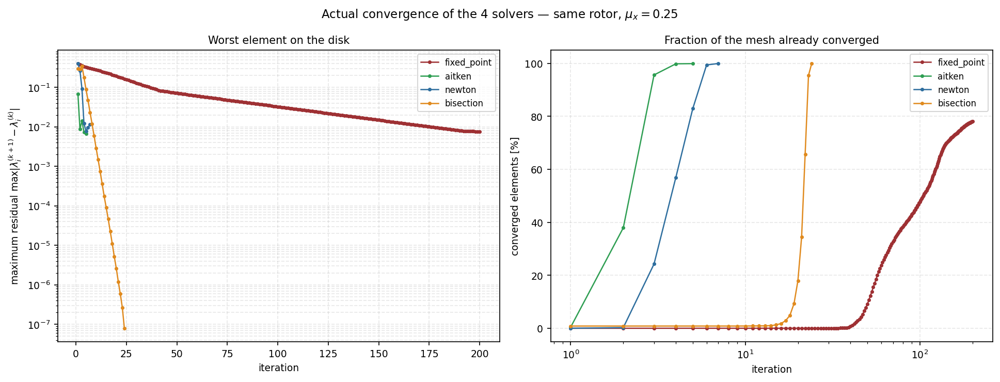
starter_rotor) and same flight condition ($\mu_x=0.25$),
collect_history=True. Left: the maximum residual over the whole disk — read
alone it is misleading, because a handful of stubborn nodes at the reverse-flow boundary
hold it on a plateau near $10^{-2}$ long after the rest of the mesh has converged, which
looks like the solver stalling. Right: the fraction of the mesh already converged, which
is what actually decides the sweep. Confirms the expected pattern — the Δ²/Newton family
reaches the whole mesh in a handful of iterations, bisection needs a few tens, and Picard
relaxation is by far the slowest (still at ~80% after 200 iterations) — but with rates
specific to this case, not a generic curve.A third configuration axis, orthogonal to the previous two, selects the reverse flow model (Section 8.2) and local corrections (Section 8.3) applied within each blade element evaluation: independent options that refine the physics of step 2 without changing the cycle structure from Section 2.10.
7.1.3 Local vs. global coupling
The suffix _local or _global in cfg.inflow_field_model
selects one of two distinct numerical modes for solving the two-dimensional field
$\lambda_i(r,\psi)$, both using the same physical formulation of azimuthal harmonic (Glauert,
Coleman or Drees, Section 7.2).
Local coupling (suffix _local, zBEMT default): the fixed-point
equation from Section 2.10 is solved independently at each of the $N_e\times N_\psi$ nodes of the
full mesh. The azimuthal harmonic enters as a multiplicative factor within the fixed-point
iteration of each node itself, so that the local nonlinearity of the blade element (stall,
reverse flow, corrections from Section 8.3) feeds back directly into the value of $\lambda_i$
at that specific node, at each solver iteration (Section 9.1). This is the mode most faithful
to the physics of each element, at the cost of solving $N_e\times N_\psi$ separate fixed-point
equations.
Global coupling (suffix _global): the solution proceeds in two sequential,
non-coupled stages. First, a single one-dimensional axisymmetric BEMT problem is solved
($N_\psi=1$, no dependence on $\psi$) to obtain the mean radial profile $\lambda_0(r)$, exactly
as if the rotor were in hover or pure axial climb/descent. Then, the azimuthal harmonic of
Coleman or Drees is superimposed analytically onto that already-converged mean profile:
without the fixed-point solver being run again over the full mesh. The direct consequence is that,
in global mode, the local nonlinear physics (stall, reverse flow) evaluated at each $(r,\psi)$ in
Section 8.3 does not feed back into the value of $\lambda_0(r)$: only the mean axisymmetric
profile is solved self-consistently, and the azimuthal variation is purely a first-order harmonic
superposition over that already-converged profile. In exchange, computational cost drops from
$N_e\times N_\psi$ fixed-point equations to just $N_e$, producing the performance gain compared
in Section 12.3 between run_02_mu_sweep_local and run_03_mu_sweep_global
(bemt.py). Global mode is appropriate for extensive parametric sweeps where a quick,
qualitatively correct estimate of azimuthal asymmetry suffices; local mode is appropriate whenever
interaction between local nonlinearity and inflow distribution is relevant, for example under
conditions near stall or with extensive reverse flow (Section 8.2).
pitt_peters_steady and pitt_peters_unsteady have no _local/
_global variant: the Pitt-Peters model (Section 7.2.4) is, by construction, a model of
three global degrees of freedom ($\nu_0,\nu_s,\nu_c$) solved from a system of unsteady actuator
disk ODEs, and does not admit node-by-node local formulation.
pitt_peters_unsteady (Section 7.2.4.1) describes dynamic inflow: the
time lag of the wake and induced velocity in response to a change in flight conditions or
rotor command, governed by the three Pitt-Peters ODEs. The Øye model (Section 8.4)
describes dynamic stall: the time lag of boundary-layer separation over the airfoil
in response to a rapid change in effective angle of attack, a phenomenon of distinct time
scale and physical origin, though both are formalized as a first-order differential equation
with their own time constant. The two models are activated by independent flags
(inflow_field_model="pitt_peters_unsteady" and
use_dynamic_stall, respectively, Section 8.2.3) and can be used together or
separately.
7.2 Non-uniform inflow
Classical BEMT (Section 2.11) solves $\lambda_i$ essentially independently at each $(r,\psi)$, with no azimuthal term imposed a priori: this is precisely the glauert_* model (Section 7.1.1): Glauert's original annular momentum theory (1926), with no wake-tilt correction. Physically, however, a rotor's wake in forward flight tilts backward, producing systematically higher inflow on the disk's front and lower on the rear: asymmetry that pure annular BEMT does not capture by construction. Three models, of increasing complexity, reintroduce this physics.
7.2.0 How the inflow models are built
This section derives the harmonic and finite-state inflow families selected by
inflow_field_model. They all answer one question: momentum theory gives the
average induced velocity through the disk, but a rotor in forward flight does not have a
uniform one, and the difference is not small.
The physical problem. In hover the wake leaves straight down and the induced velocity is close to uniform. In forward flight the free stream sweeps that wake backwards, so it trails away behind the rotor rather than beneath it. The disk then flies through the upper part of its own wake at the front and leaves it behind at the rear: the front of the disk sees more induced inflow than the rear. The wake skew angle $\chi$ measures that tilt, and it grows from zero in hover toward ninety degrees at high speed.
What the models share. Three of the four write the field as a mean plus a first harmonic in azimuth,
and differ only in where $K_x$ and $K_y$ come from. The linear growth with radius is common to all of them: the tilt has no effect at the centre and most at the rim. Setting both coefficients to zero recovers the classical annular solution, in which every ring is solved independently of azimuth.
What changes in your result. A non-zero $K_x$ moves induced inflow from the rear of the disk to the front, which lowers the angle of attack at the front and raises it at the rear. The integrated thrust barely moves — the mean inflow is still set by momentum theory — but the distribution does, and with it the pitching moment the disk must be trimmed against and the azimuth at which the blade comes closest to stall. This is why the choice matters for loads and for trim far more than for total performance, and why in hover it makes no difference at all: with $\mu_x=0$ there is no wake tilt for any of the models to represent.
Implementation boundary. The selected model supplies the induced-velocity field consumed by the blade-element and momentum coupling. It does not change the airfoil polar, the blade geometry, or the meaning of the reported coefficients, and none of these models represents blade flapping — so the moments they produce are not relieved as they would be on an articulated rotor.
7.2.1 Coleman: longitudinal harmonic only
Coleman (1945) adds to the uniform inflow a single harmonic, proportional to $\cos\psi$ (the longitudinal direction: front/rear of disk):
There is no lateral term ($K_y=0$): the Coleman model captures the front-rear asymmetry of the tilted wake, but not any left-right lateral asymmetry.
7.2.2 Drees: longitudinal and lateral harmonics
Drees (1949) refines the longitudinal coefficient with a $\mu_x^2$ correction and adds a second harmonic, proportional to $\sin\psi$ (the lateral direction of the disk):
Unlike Coleman, $K_y\neq0$ and is quasi-constant (depends only on $\mu_x$, not on $\lambda_{total}$/$r$): physically, an approximately uniform lateral asymmetry across the disk, associated with the lateral component of the tilted wake that the Coleman model ignores. Both coefficients are empirical, fitted to experimental/vortex-wake data: not derived from first principles within BEMT. In both models, the complete inflow field is obtained by closed-form formula applied to $\lambda_{i,0}$ already solved by the annular momentum equation (Section 2.11), without additional equation: hence the low computational cost relative to Pitt-Peters (Section 7.2.4).
drees_local solves longitudinal and lateral harmonic (complete first-order asymmetry). coleman_local solves only the longitudinal harmonic, in Coleman's original closed form. glauert_local applies first-harmonic disk tilt correction without decomposing into separate $K_x$/$K_y$.
7.2.3 Comparison of inflow fields
The figure below, already introduced in Section 7.1.1, compares the four inflow fields under the same flight condition, calculated by the actual engine:
glauert_local (no harmonic), coleman_local ($K_y=0$), drees_local ($K_x$, $K_y$ both nonzero) and pitt_peters_steady (Section 7.2.4), under the same flight condition ($\mu_x=0.28$).7.2.4 Pitt-Peters: finite-state dynamic actuator disk
The Coleman and Drees models impose the form of the harmonic (a single $\cos\psi$/$\sin\psi$ term) and adjust only its amplitude to empirical data. The Pitt-Peters model (Pitt, 1980; Pitt & Peters, 1981) derives that same harmonic form (and its amplitude) from a linearized non-stationary actuator disk theory, solving three inflow states, $\nu_0$ (uniform), $\nu_s$ (lateral harmonic, multiplying $r\sin\psi$) and $\nu_c$ (longitudinal harmonic, multiplying $r\cos\psi$):
The dynamics of the three states obey
where $M=\text{diag}\big(\tfrac{128}{75\pi},\,\tfrac{16}{45\pi},\,\tfrac{16}{45\pi}\big)$ is the apparent mass of the system (constants from Pitt & Peters, verified against Peters & HaQuang, 1988, and against the hover case particular of Chen, NASA TM-88327), $\mathbf C=(C_T,C_{My},C_{Mx})$ are the instantaneous aerodynamic forçantes, recalculated at each substep directly from element_state() (automatically reusing reverse flow, Himmelskamp, radial flow, compressibility and Prandtl already implemented in Sections 2.4–2.6), and $L$, $V$ are the static gain and mass-flow parameter:
$\chi$ is the wake angle (wake tilt relative to the rotor axis); $X=\tan(\chi/2)$ is the only off-diagonal term in $L$, coupling $\nu_0$ to $\nu_c$: physically, it is the forward-flight wake tilt that creates the front-rear asymmetry coupled directly to thrust (same role as $K_x$ in Coleman/Drees, but now emerging from physics rather than empirically adjusted). $\nu_s$ remains decoupled from $\nu_0$, as does $K_y$ in Coleman/Drees.
At equilibrium ($\dot{\boldsymbol\nu}=0$), the equation reduces to $\boldsymbol\nu=L\,V^{-1}\mathbf C(\boldsymbol\nu)$: a fixed point in only 3 scalars (not $N_e\times N_\psi$), solved by _solve_pitt_peters_steady() with simple relaxation between evaluating $\mathbf C(\boldsymbol\nu)$ (calling element_state on the full mesh) and updating $\boldsymbol\nu$: this is the pitt_peters_steady mode.
7.2.4.1 Transient response and the exponential integrator
The pitt_peters_unsteady mode integrates the full ODE in time, without assuming equilibrium: captures the physical response delay of inflow to a step change or flight-condition change. The system's natural time constant, in units of $\tau=\Omega t$, is $\tau_i\sim L_{ii}M_{ii}\sim O(0.1$–$0.3)$: in real time, a few milliseconds for a rotor spinning at hundreds/thousands of RPM, orders of magnitude faster than the typical timestep between flight conditions in a sweep ($\Delta t\sim0.1$–$1$ s). An explicit integrator (RK4) on this ODE would need thousands of substeps to remain stable in this stiff regime; zBEMT instead uses an exponential integrator (_pitt_peters_exp_step): at each substep, it freezes $\mathbf C$, $L$, $V$ at the current value of $\boldsymbol\nu$ (local linearization) and solves this linearized ODE exactly via matrix exponential,
unconditionally stable even with $\Delta\tau\gg\tau_i$: when the sweep timestep is much larger than the natural inflow time constant, $\boldsymbol\nu$ simply relaxes smoothly toward equilibrium within a single substep, with no overshoot or numerical divergence: the physically expected behavior, since inflow response is effectively instantaneous compared to the flight-condition sweep timescale.
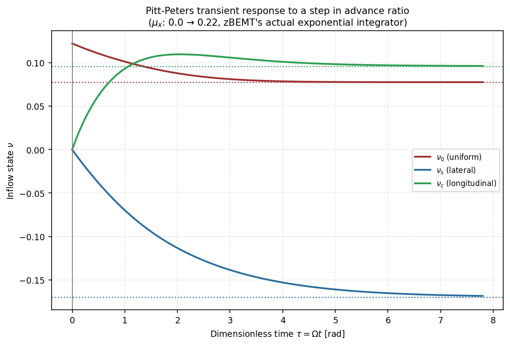
_pitt_peters_exp_step. Dashed lines: final equilibrium values (_solve_pitt_peters_steady at the new condition). $\nu_s$ and $\nu_c$ start near zero values (hover equilibrium, symmetric) and relax over a few radians of $\tau=\Omega t$ (a few fractions of a revolution) to the new steady-state values.7.2.4.2 Validity diagnostic
The 3-state model is a linear theory (first-order perturbation about the uniform actuator disk). Since zBEMT does not model flapping (Section 2.2.1), the moments $C_{Mx}$/$C_{My}$ are not relieved by flapping as they would be in a real articulated rotor, and tend to grow larger: when this large forçante feeds back into Pitt-Peters' linear gain, $\nu_s$/$\nu_c$ can grow enough that $\lambda_{total}=\lambda_z+\lambda_i$ becomes negative (local flow reversal) over a large disk fraction, pushing the model outside the linear validity range: observable symptom: $C_Q$ can change sign at $\mu_x\sim0.16$–$0.19$ with representative geometries. zBEMT does not mask this numerically: it reports the disk fraction with $\lambda_{total}<0$ and issues an explicit warning when it exceeds $2\%$, leaving the decision (reduce $\mu_x$, use drees_local, or implement flapping/cyclic trim) to the user.
element_state() does not call _inflow_harmonics: the models are mutually exclusive: Pitt-Peters already solves its own harmonics from actuator disk physics, and overlaying the Coleman/Drees harmonic would double the effect.
8. Physical corrections
8.1 Prandtl Loss (Tip and Root)
The independent-rings hypothesis (Section 2.9.5) is equivalent to a disk with an infinite number of infinitesimally thin blades. A real rotor has $N_b$ discrete blades; near the tip (and, to a lesser degree, the root), the flow escapes laterally between neighboring blades instead of being captured by annular momentum theory: the visible manifestation is the blade-tip vortex.
The Prandtl correction multiplies the elemental thrust by $F\in(0,1]$, with $F\to1$ far
from the edges and $F\to0$ at the tip and root. As implemented in element_state()
(zbemt/bemt.py):
where $x=r/R$. Larger $N_b$ means smaller loss: more blades bring the disk closer to the continuous-curtain limit. Closer proximity to an edge ($x\to1$ or $x\to x_{root}$) means greater loss. The term $1/|\sin\phi|$ couples the geometric correction to the local loading: larger $\phi$ (more heavily loaded rotor) accelerates the drop of $F$ near the edge.
element_state()'s actual code, and is flagged, not yet
resolved, in Section 16 (Limitations): it is either an intentional simplification carried over from
the reference implementation this engine was built to match (see the MATLAB-reference mesh default
noted in tests/test_bemt.py::TestBEMTConfigDefaults) or an unintentional omission —
determining which requires validating $F$ against reference data, out of scope for a documentation
pass. The practical consequence, if the $1/x$ term is in fact missing: near the hub (small $x$),
zBEMT's $F_{root}$ falls off more slowly than the textbook formula predicts.
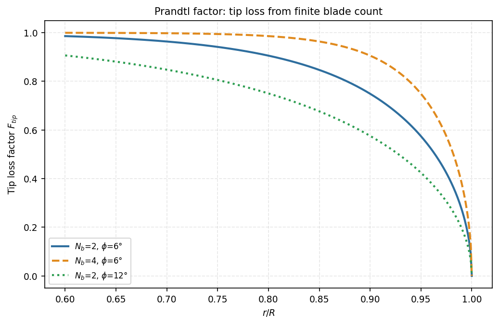
$F$ is the tip/root load correction applied to the momentum balance. As the blade approaches the tip or root, less circulation can be sustained, so the same total load requires a larger induced velocity over the effective loaded area.
8.2 Reverse flow: five models
GUI: configure this canonical section from the Airfoil tab, block “Compressibility and reverse flow”. Choose the model only after deciding whether the polar covers the full $-180^\circ$ to $180^\circ$ envelope; the same choice changes the element forces and the disk maps.
In forward flight with sufficient $\mu_x$, $U_T$ (Section 2.4.1) becomes negative near the root on the retreating side. The boundary $U_T=\Omega r+V_x\sin\psi=0$ defines the circle $r=-\mu_x R\sin\psi$ (existing only for $\sin\psi<0$, retreating semicircle).
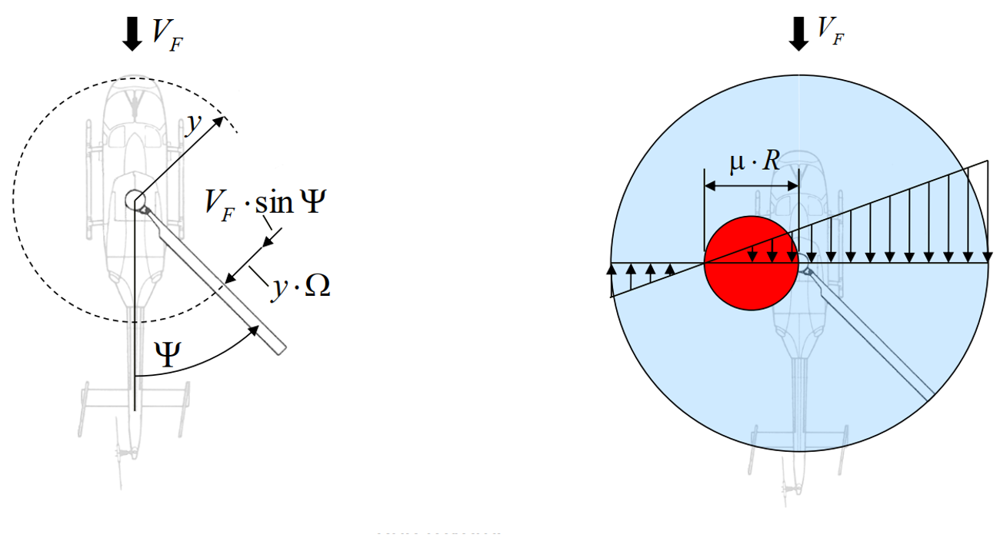

Within this region, the trailing edge of the airfoil is exposed to the flow as if it were the leading edge, requiring reinterpretation of the angle of attack. zBEMT implements five models, selectable via cfg.reverse_flow_model, with increasing physical fidelity and mathematical continuity:
8.2.1 Sign reversal of the angle of attack
Inverts the sign of the geometric angle of attack in the reverse region ($\alpha_{eff}=-\alpha_{geom}$), uses $|U_T|$ in the Mach number. Introduces discontinuity at $U_T=0$, hindering solver convergence near that boundary.
This branch is selected by reverse_flow_model inside the
element-level polar correction, before the normal/tangential loads are
integrated. It therefore changes the forces and residual seen by the inflow
solver, not just the visualization.
8.2.2 Flat plate (default)
Sets $C_l$ to zero and imposes $C_d\approx1.9$ (flat plate normal to the flow) in the reverse region, ignoring the airfoil polar there. Discontinuous at $U_T=0$; physically reasonable as a crude approximation (the airfoil operating backward has little relationship to its forward polar), but the discontinuity in $C_l$ (from a finite value to exactly zero) is the most abrupt of the five models.
8.2.3 Blended angle of attack
Multiplies the geometric angle of attack by a $\tanh$ function of normalized $U_T$ rather than
applying an abrupt sign flip: it reduces, without eliminating, the discontinuity at the boundary.
The parameter reverse_flow_blend_factor is the steepness $k$ of that transition. With a
dimensionless signed velocity $\xi=U_T/(\Omega R)$,
What the parameter physically controls. It sets how wide, in disk area, the artificial transition between forward and reverse behaviour is spread. The hyperbolic tangent reaches about $96\%$ of its limit at $k\xi=2$, so the transition occupies roughly $|\xi|\lesssim2/k$ — a band whose width in radius is about $2R/k$ at the azimuth where the boundary crosses. A steepness of $5$ therefore smears the switch over some forty per cent of the radius, and a steepness of $50$ over four per cent.
What changes in your result. The trade is entirely between smoothness and fidelity, and it runs in opposite directions at the two ends. A large $k$ approaches the hard sign switch: the aerodynamics is right almost everywhere, but the residual of the inflow fixed point regains a sharp feature at the boundary, and the elements there become the ones that fail to converge. A small $k$ converges easily but pays for it by applying a reduced angle of attack over a wide band of disk where the flow is in fact perfectly ordinary forward flow, understating the load there.
When it stops being valid. The blend is a numerical device, not a physical model: nothing in the flow actually varies as $\tanh$ of the tangential velocity. It changes only the reverse-flow branch and never moves the physical boundary itself, which stays exactly at $U_T=0$. If the reverse region is large enough that the choice of $k$ visibly changes an integrated coefficient, the honest response is to move to a treatment that is continuous by construction rather than to tune the steepness.
8.2.4 Thin-plate blend
Avoids the formula switch at $U_T=0$ entirely: since $\phi=\text{atan2}(U_P,U_T)$ is continuous through $U_T=0$, so is $\alpha_{eff}=\theta-\phi$, and no branch on the sign of $U_T$ is needed. The blend between the real polar and a thin flat plate,
uses a smooth weighting in $|\alpha_{geom}|$ — not in the sign of $U_T$ — controlled
by thin_plate_blend_center_deg and thin_plate_blend_width_deg.
Why a flat plate is the right limit. Far from its design range a section stops behaving like an airfoil. Once the flow separates at both edges, the lift comes from the pressure difference across an inclined surface rather than from attached circulation, and camber and thickness cease to matter: what remains is the thin-plate result above, which any flat inclined surface obeys. Blending toward it is therefore not an approximation of convenience — it is the physically correct asymptote at large angle of attack, and it needs no measured data beyond the range the polar actually covers.
What the two parameters do. The centre is the angle at which the section is judged to be half airfoil and half flat plate, and the width is how many degrees the changeover takes. Together they say where the reader believes the real polar stops being trustworthy. Moving the centre outward keeps the measured polar in charge further into the stalled range, which is right when the data genuinely extend that far and wrong when they do not, because beyond the measured range the polar merely holds its edge value. Narrowing the width sharpens the changeover and, taken far enough, reintroduces the derivative feature the method exists to avoid.
What changes in your result. Because the weighting depends only on angle of attack, the transition is smooth everywhere, including on the path through the reverse-flow region, and that smoothness is the point: it is what stops the fixed-point solver stalling at the reverse boundary. The cost is that the section is pushed toward flat-plate behaviour at large angles wherever they occur, including on the retreating side outside the reverse circle, so a centre chosen too low inflates drag over a genuinely attached part of the disk.
8.2.5 Full-range polar
Viterna extrapolation of the polar (Section 2.8.2.5), valid from $-\pi$ to $\pi$: $\alpha_{eff}$ is taken as $\alpha_{geom}$ mapped to $(-\pi,\pi]$, with no special reverse flow treatment: the extended polar already contains the correct physics in any quadrant. The only model where normal/tangential projections (Section 2.8.4) hold without regime distinction.
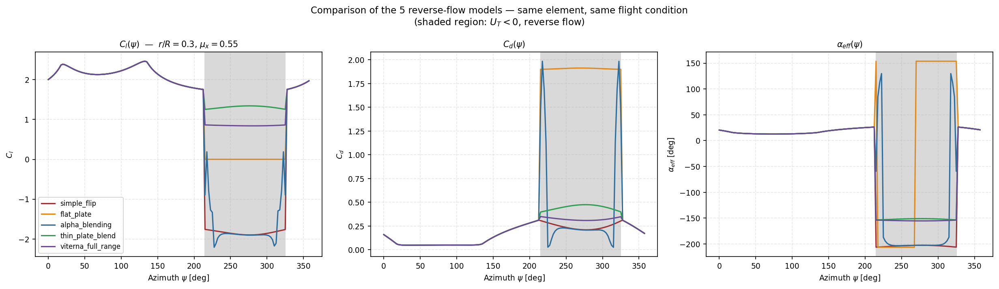
element_state() for a single element at $r/R=0.30$, $\mu_x=0.55$ (shaded region: $U_T<0$). Note the sharp discontinuity of flat_plate and simple_flip at the boundaries of the shaded region, the partial smoothing of alpha_blending, and the continuity of thin_plate_blend and viterna_full_range throughout the revolution.8.2.6 Reverse-flow visualization mask
The setting mask_reverse_flow_plots is a display mask, not a
change to the aerodynamic solution. The reverse-flow domain is identified
from the same physical boundary used by the models above,
$U_T=\Omega r+V_x\sin\psi<0$, or equivalently
$r<-\mu_x R\sin\psi$ on the retreating half of the disk. When enabled, disk
maps replace values in this domain with a neutral masked colour so that a
viewer does not mistake a model-dependent reverse-flow load for ordinary
forward-flow data. The arrays used for integration, coefficients, and CSV
export are unchanged; masking therefore cannot alter thrust, torque, or
power.
thin_plate_blend is continuous at $U_T=0$ (Section 8.2.4): this continuity reduces the number of solver iterations (Section 9.1) and avoids numerical oscillation at the boundary, without requiring measured data beyond $\pm90°$. viterna_full_range uses the Viterna-Corrigan extension already computed to $\pm180°$ (Section 2.8.2.5) — its fidelity depends entirely on the quality of the base model from which this extension was extrapolated.
8.3 Local physical corrections
8.3.1 Rotational augmentation (Himmelskamp/Snel)
Himmelskamp (1945) observed experimentally that rotating rotor blades sustain sectional lift coefficients above the maximum measured in static 2D airfoil tests (wind tunnel, no rotation), especially near the root. The physical mechanism is the boundary layer centrifugal pump: the centrifugal force associated with rotation imposes a secondary flow in the boundary layer, directed radially outward along the span; the resulting Coriolis force, acting on this secondary flow, produces a pressure gradient that delays flow separation on the airfoil surface compared to the same airfoil without rotation at the same geometric angle of attack. The net effect is that the airfoil sustains larger effective angles of attack before stall than its static polar would suggest, and the difference in $C_l$ between the 3D (rotating) value and the 2D (static) value is larger the smaller $r/R$ and the larger the chord-to-radius ratio $c/r$ at that station.
Snel, Houwink and Bosschers (1993) proposed a semi-empirical formulation for this correction, calibrated with wind turbine data, applied exclusively to the lift coefficient:
$\lambda_r$ is the ratio of the local rotational velocity $\Omega r$ to the axial component of boundary layer inflow $|U_P|$: when $\lambda_r\to\infty$ (rotation dominant, typical of the root in hover), the factor $\lambda_r^2/(1+\lambda_r^2)\to1$ and the correction saturates at its maximum value; when $\lambda_r\to0$ (axial component dominant, typical of large $r/R$ or large $\mu_x$), the correction vanishes and $C_{l,3D}\to C_{l,2D}$, recovering pure 2D behavior at the blade tip. The term in parentheses, $C_{l_\alpha}(\alpha-\alpha_0)-C_{l,2D}$, is identically the difference between the potential line (linear lift without separation) and the static curve: the Snel correction is therefore proportional exactly to the magnitude of the lift deficit that static separation has already removed, which implies that the correction is zero by construction while the flow remains attached ($C_{l,2D}=C_{l_\alpha}(\alpha-\alpha_0)$) and grows only in the post-stall region. $g(\alpha)$ is a shut-off function that gradually nullifies the effect above approximately $60°$ angle of attack, a region where the semi-empirical model ceases to be physically representative.
The Himmelskamp/Snel correction is applied exclusively to $C_l$, never to $C_d$, by construction of the original model: the separation-delay mechanism directly affects pressure distribution (hence lift), but the experimental data underlying Snel's formulation do not reliably characterize airfoil drag behavior under rotation. This contrasts with the radial flow correction of Section 8.3.2, which in zBEMT is applied exclusively to $C_d$: the two boundary layer corrections act on complementary aerodynamic coefficients and do not overlap.

starter_rotor, $\mu_x=0.05$, near-hover, collective $\theta_0=24°$): average $C_l$ in $\psi$ along the span, with and without Snel correction, and the resulting $\Delta C_l$ difference. The high collective is deliberate: the Snel term is proportional to the lift deficit the static polar has already lost to separation, so it is identically zero while the flow stays attached. At this rotor's cruise collective the root does not stall and the correction does nothing at all — the effect of Himmelskamp is the delayed root stall, and a stalled root is what it takes to see it. The effect is systematically positive and concentrated in the inner stations, as predicted by the $(c/r)^2$ factor and large $\lambda_r$ at the root (peak $\Delta C_l\approx+0.51$ near $r/R\approx0.29$), decaying monotonically to zero by $r/R\approx0.95$. At the root itself $C_l$ goes from $2.09$ to $2.42$ (about $16\%$). Unlike the mild case, here the integrated effect is not negligible — $C_T$ rises about $6\%$ and $C_Q$ about $4\%$ — because the correction reaches well past the innermost annuli, where $r\,dr$ still carries real weight in the disk integration (Section 12.2).8.3.2 Radial flow (independence principle)
In forward flight, the freestream velocity $V_x$ has, at each blade station, a component along the span (radial), in addition to the tangential and normal components already described in Section 2.4:
maximum in magnitude at azimuths $\psi=\pi/2$ and $\psi=3\pi/2$ (blade perpendicular to flight direction) and zero at $\psi=0,\pi$ (blade aligned with flight direction). This spanwise component does not exist in hover or in purely axial flight, being a direct consequence of the combination of rotation and horizontal translation.
Treatment of this component follows the independence principle, also known as the swept-wing theory (independence principle), originally established for fixed swept wings: only the component of velocity normal to the span axis of the lifting surface determines pressure distribution and hence sectional lift; the component along the span slides tangentially over the surface without significantly altering the pressure field that produces lift. Airfoil drag behaves differently, and the reason is that it has a different origin. Lift is a pressure effect, set by how the flow is turned; friction drag is a boundary-layer effect, set by the shear the surface actually experiences. The spanwise component contributes nothing to the turning, but it does add to the velocity sliding over the surface, and boundary-layer dissipation scales with the total magnitude of that flow rather than with its normal projection alone. Drag therefore responds to the full velocity while lift responds only to its normal part.
What changes in your result. The correction only ever reduces drag, and it reduces it where the flow is most skewed: inboard, and around the azimuths where the blade is perpendicular to the flight direction. It does not touch lift, so thrust is unchanged; what moves is torque, and therefore power. The effect grows with advance ratio, since the skew angle depends on the ratio of the spanwise component to the tangential one, and the tangential one collapses inboard on the retreating side. In hover and in purely axial flight the spanwise component is identically zero and the correction does nothing at all.
Expect a small reduction in profile power in fast forward flight, concentrated in the same inboard retreating region that reverse flow already dominates. If a torque figure moves noticeably when this correction is toggled, the cause is almost always that the case is operating at an advance ratio high enough for the inboard retreating quadrant to carry a large skew, which is worth knowing on its own.
When it stops being valid. The independence principle is an approximation borrowed from steady swept wings, where the sweep angle is fixed and moderate. On a rotor the skew angle varies continuously around the azimuth and grows without bound wherever the tangential component approaches zero — which is exactly what happens at the reverse-flow boundary. Taken literally there, the skewed angle of attack would collapse toward zero and drag with it, which is the opposite of the truth: a section in near-stagnant crossflow does not become frictionless. The skew angle is therefore saturated at a maximum, and that saturation is what keeps the correction from producing a spurious drag collapse at the one place it would otherwise be largest. Raising that maximum extends the correction further into a region where its underlying assumption has already failed.
Based on this principle, zBEMT applies the radial flow correction exclusively to the drag coefficient, evaluating it at a skewed effective angle of attack that reduces the normal component in proportion to the total flow skew:
where $\lambda_y$ is the yaw angle of the local flow with respect to the blade span axis, and $C_d$ is re-evaluated on the polar at $\alpha_y$ instead of $\alpha_{eff}$. $C_l$ remains entirely unchanged by this correction, in accordance with the independence principle. The effect is most pronounced on the retreating blades of helicopters in fast forward flight, where $U_R$ can become comparable to $U_T$ near the root, a region where reverse flow (Section 8.2) already reduces $U_T$ to small values.
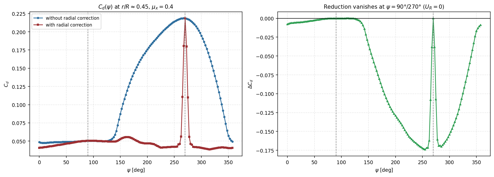
8.3.3 Compressibility (Prandtl-Glauert)
GUI: enable use_compressibility in the Airfoil tab only when the supplied polar is not already Mach-resolved. Set a_sound in Config/Engine; it defines the local Mach number used by the correction.
Compressibility alters pressure perturbation propagation around the airfoil, increasing lift and drag per unit angle of attack with increasing $M$. The factor $\beta=\sqrt{1-M^2}$ is the same as the Prandtl-Glauert transformation that relates linearized subsonic compressible flow to an equivalent incompressible flow.
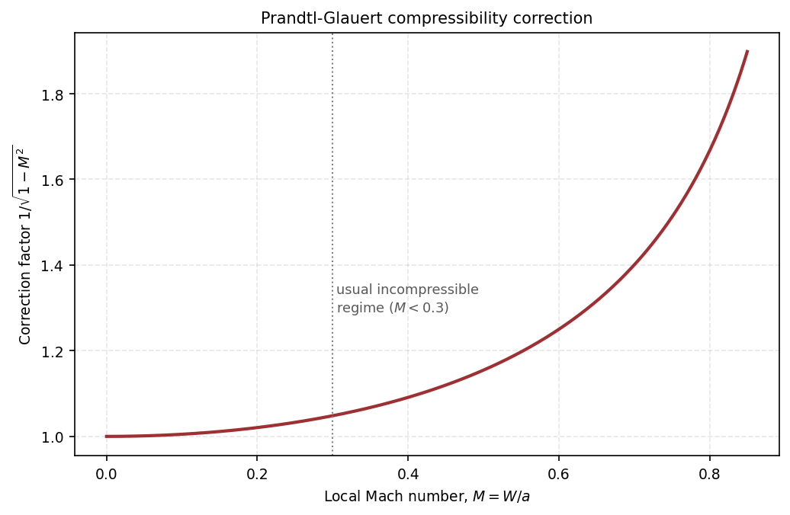
What changes in your result. Because the factor multiplies both coefficients equally, it does not change the lift-to-drag ratio of a section, and therefore does not by itself change where the blade is efficient. What it changes is the magnitude of the load, and it changes it unevenly across the disk, because $M$ is far from uniform: in forward flight the advancing tip sees $W\approx\Omega R+V_x$ while the retreating tip sees $\Omega R-V_x$. Enabling the correction therefore steepens the fore/aft asymmetry that already exists, concentrating additional load on the advancing side and slightly increasing the rolling moment the disk must be trimmed against. On a hovering rotor, where $M$ depends only on radius, the effect is a uniform outboard shift of the loading toward the tip.
The magnitude is modest until it is not. The factor is $1.005$ at $M=0.1$, $1.048$ at $M=0.3$, $1.25$ at $M=0.6$, $1.67$ at $M=0.8$ and $3.20$ at $M=0.95$. A hovering rotor with a tip Mach number of $0.6$ therefore gains a few per cent of thrust for the same collective; one whose advancing tip reaches $0.85$ sees its outermost elements loaded almost twice as heavily as the incompressible polar would suggest.
When it stops being valid. The correction comes from linearizing the compressible potential equation about a uniform free stream, which assumes small perturbations and a purely subsonic field. Both assumptions fail before $M=1$. In practice the section reaches its critical Mach number — where the flow first goes sonic somewhere on the upper surface — around $M\approx0.7$ for a typical rotor profile. Beyond that a shock forms, the boundary layer thickens behind it, and drag rises steeply. Prandtl-Glauert knows nothing about any of this: it continues to scale lift and drag by the same smooth factor, so it underestimates drag exactly where drag divergence begins, while overestimating lift where the shock is in fact destroying it.
The factor also grows without bound as $M\to1$, and an unbounded factor applied to a handful of elements is not a small error but a qualitative one: it can make two mesh points dominate an integrated coefficient and flatten every colour scale drawn from the field. zBEMT therefore caps the correction at a documented Mach ceiling of $M_{\max}=0.9$, evaluating the factor with $\beta$ floored at $\sqrt{1-M_{\max}^2}\approx0.436$, so the amplification never exceeds $2.29$.
Two consequences follow, and both matter when reading a transonic case. Below $M=0.9$ the expression is exactly the classical one — the ceiling changes nothing in the range where the model is meaningful, and no previously validated result moves. At and above $M=0.9$ the reported coefficients are the capped ones: they are not a prediction of transonic behaviour, they are the point at which the model was stopped from producing a number with no physical content. A case that reaches there should be read as out of range, not as a result. Static validation raises a warning once the advancing-tip Mach number exceeds $0.85$, which is the practical boundary at which this section stops being applicable; the boundary is restated in the limitations chapter.
One further misuse is worth naming because nothing in the physics prevents it: applying this correction on top of a tabulated polar that already carries a Mach axis counts compressibility twice. The tabulated data already contains the Mach dependence, measured or computed; multiplying it again by $1/\beta$ inflates lift a second time. Validation warns about this specific combination.
8.4 Øye dynamic stall
GUI: configure the canonical dynamic-stall section in the Airfoil tab. Select a base polar with a real stall region, enable the checkbox, and set $A$ and the fade angles; the equations below are the same model used by the GUI and Run Case/Batch.
Near stall, boundary layer separation does not respond instantaneously to changes in angle of attack: there is a response delay, with a characteristic time scale on the order of a few convective times $c/W$. In forward flight, $\alpha_{eff}$ varies continuously with $\psi$ (Sections 6 and 9.3.3), so the blade can traverse the stall condition faster than separation can follow in a quasi-static regime: the actual $C_l$ exceeds the static $C_l$ of the polar during the rise in $\alpha$, and the separation, when it occurs, is more abrupt, with delayed recovery during the descent in $\alpha$.
8.4.1 The state variable: separation function $f$
The Øye model (1991) uses one state variable per element, the separation function $f$ (fraction of chord attached to the flow, $0$=fully separated, $1$=fully attached). First define the quasi-static value $f_{st}(\alpha)$, obtained by inverting the mixture between attached-flow linear lift ($C_{l,att}$) and lift from a fully separated flat plate ($C_{l,sep}$) that would reproduce the actual static $C_l$ of the polar:
where $C_{l,st}$ is the static $C_l$ of the base polar (any of the five models from Section 10.2). $f_{st}\to1$ in the linear region ($C_{l,st}\approx C_{l,att}$) and $f_{st}\to0$ in deep stall ($C_{l,st}\ll C_{l,att}$): it is the inverse mapping of the static polar itself into separation-function space.
The state variable $f$ relaxes to $f_{st}$ with time constant $\tau$ proportional to chord and inverse to relative velocity:
with dynamic $C_l$ reconstructed by mixing attached-flow lift (linear) and separation lift, weighted by $f$: not by $f_{st}$:
Dynamic drag uses an analogous expression (Bergami), a function of $f$ and $f_{st}$ simultaneously: it captures the fact that drag grows more rapidly than simple linear interpolation between attached and separated would suggest, near the transition:
where $C_{d,0}=C_d(\alpha=0)$. The result is hysteresis: rising in $\alpha$, $f$ (which relaxes with delay) remains larger than $f_{st}$: more attached than quasi-static suggests: thus dynamic $C_l$ remains above static (retained lift); descending, $f$ remains smaller than $f_{st}$: separation persists even with $\alpha$ already reduced.
8.4.2 The frequency-domain solution method
The ODE for $f$ is solved over the mesh $(N_e,N_\psi)$ in steady periodic mode without time-marching, via Fourier series along $\psi$. This is a deliberate design choice: zBEMT is a static solver that does not march through revolutions, avoiding the coupling of history-dependent states inside the fixed-point solver (see 8.4.4).
For $\tau$ constant per radial line (using the average relative velocity in $\psi$ at that station), the linear ODE has exact harmonic-by-harmonic solution:
where $\hat f_{st,n}$ are the Fourier coefficients of $f_{st}(\psi)$ (real FFT, np.fft.rfft) and $H_n$ is the first-order transfer function applied to each harmonic $n$; $f(\psi)$ is reconstructed by inverse FFT. Inexpensive (one FFT per radial station) and exact within the approximation of constant $\tau$ per line.
8.4.3 Effect of time constant: hysteresis as a function of $c/R$
The figure below uses the actual zBEMT functions (_oye_static_separation, _oye_frequency_domain_f, _oye_cl_sep) to show how the hysteresis loop opens as $\tau=Ac/2W$ grows relative to the period of one revolution: that is, as relative chord $c/R$ increases (fatter blades relative to radius react more slowly, in azimuthal units, than slender blades):
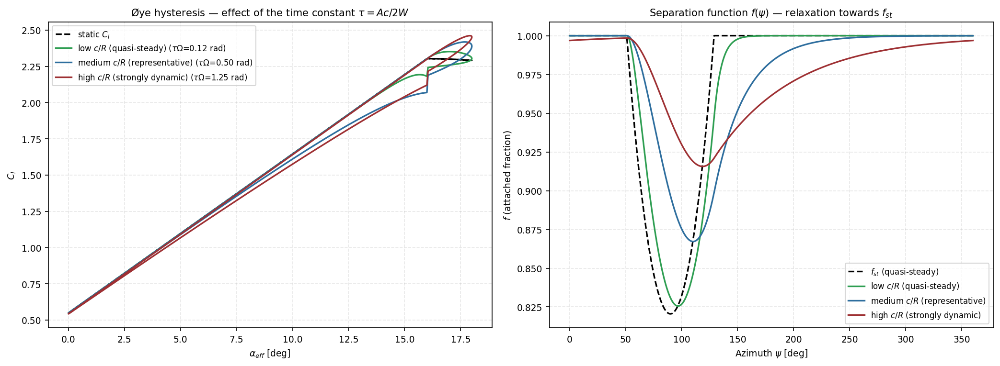
starter_rotor airfoil) once per revolution. Right: the corresponding separation function $f(\psi)$: the larger $\tau\Omega$, the more $f$ lags $f_{st}$ (black dashed) and the less it descends before the oscillation is already rising again.8.4.4 Damping at extreme angles and integration with the solver
A smooth blending weight (smoothstep, controlled by dynamic_stall_fade_start_deg/dynamic_stall_fade_end_deg) gradually disables the dynamic correction at very high $\alpha_{eff}$, returning to the static value: the physics of Øye separation lag is validated for the "normal" stall regime (tens of degrees), not for extreme angles where the blade already operates in permanent massive separation independent of any lag effect.
In zBEMT, the model applies entirely as post-processing on the already-converged $\lambda_i$ field (function apply_dynamic_stall): recalculates $C_l$/$C_d$/$F_n$/$F_t$/$F_{t,i}$/$F_{t,p}$ from the final mesh, preserving the original static values in Cl_static/Cd_static for diagnostics, without feeding back into the momentum equation (Section 2.11). This avoids coupling a history-dependent state (dependent on the entire $\psi$ history traversed) inside the fixed-point solver, which solves a static state at each evaluation: feeding dynamic stall back into the momentum equation itself would require solving the fixed point and temporal history simultaneously, a substantially more expensive problem that zBEMT deliberately does not solve.
9. Numerical solver
9.1 Fixed-point numerical solvers
Everything upstream in this document exists to make one scalar equation well posed at every node of the mesh: blade-element theory and momentum theory must predict the same load, which happens only at the induced inflow $\lambda_{total}$ satisfying $g(\lambda_{total})=\lambda_{total}$. The four algorithms below differ only in how they walk toward that root. They solve the same equation and, when they all converge, they agree — the choice is about whether and how fast convergence happens, never about the physics.
Two properties of the residual $h(\lambda_{total})=g(\lambda_{total})-\lambda_{total}$ govern which algorithm wins. The first is smoothness: $g$ inherits the shape of the airfoil polar, so a polar with a corner in its lift curve gives $h$ a corner too. The second is monotonicity: $h$ is well behaved over most of the disk, but near stall a rising $\lambda_{total}$ can reduce the angle of attack past the lift peak and raise the residual instead of lowering it, which locally reverses the slope the solver is relying on.
Convergence is always tested on the unrelaxed residual. This is not a detail. Near the
root, the tip and the reverse-flow azimuths the relaxation factor is deliberately small, so the
step is small there whether or not the element has actually converged. Testing the step
would therefore declare success exactly where convergence is hardest and where a wrong answer is
most likely. The tolerance (tol) is compared against $|h(\lambda_{total})|$ itself, and the
iteration budget (max_iter) is a safety bound rather than a target: exhausting it
leaves the element flagged unconverged and visible in the convergence map. Neither field changes
the equations; they change how confident you may be that the reported numbers solve them.
What to do when convergence stalls. The reflex of raising the iteration budget is almost always the wrong one, because a failure to converge is usually structural rather than budgetary. The common causes are, in order of frequency: the polar is being queried outside the angle range it actually contains, so the returned coefficients are a held edge value and $g$ is flat; reverse flow is present and unmodelled, so $h$ is discontinuous across the boundary; or the stall closure has a derivative corner that a derivative-based solver cannot cross. Each has a direct remedy — extend the polar, choose a reverse-flow treatment, smooth the stall model — and each is worth trying before touching the solver at all. Changing algorithm helps when the residual is smooth but the iteration is simply slow or oscillatory.
The cycle of Section 2.10 — initialize, evaluate, update, test — admits four algorithms for the update step, all vectorized over the complete mesh, so one iteration is one pass over every element rather than a loop over nodes.
9.1.1 Fixed-point relaxation
The shared controls max_iter and tol bound this same
fixed-point problem for every solver. Convergence is tested on the unrelaxed
residual $h(\lambda_{total})=g(\lambda_{total})-\lambda_{total}$, not merely on the size of the
relaxed step; exhausting max_iter leaves the element marked
unconverged and is reported in the convergence map. These fields affect
numerical confidence and runtime, but do not change the blade-element or
momentum equations.
What it does per iteration. It evaluates $g$ once and steps a fraction $\omega$
(relax, typically $0.1$–$0.3$) of the way toward it. Nothing else: no
derivative, no bracket, no history. That single evaluation is the cheapest iteration of the four,
and the method touches the polar only where the current estimate says to.
How fast it converges. Linearly: the error shrinks by an approximately constant factor each iteration, so reaching a tight tolerance takes tens of iterations rather than a handful. The factor is roughly $|1-\omega\,(1-g')|$, which shows the trade directly — a small $\omega$ is stable but slow, and a large one is fast until it overshoots and oscillates.
When it wins. When the residual is badly behaved. Because the step is always a contraction toward $g$, the method cannot be thrown off by a derivative that is wrong, undefined or sign-reversed, which is exactly the situation at a stall corner or across the reverse-flow boundary. It is the fallback that converges when the others do not.
How it fails. By running out of iterations rather than by diverging. If the residual is still shrinking when the budget ends, more iterations genuinely help — this is the one solver for which raising the budget is a reasonable response. If it oscillates instead, $\omega$ is too large for that element, which is what the spatially variable relaxation schedule exists to handle.
9.1.2 Newton-Raphson
What it does per iteration. It builds a local straight-line model of the residual and jumps to where that line crosses zero. The slope comes from a central finite difference, which costs two extra evaluations of the element state, so one Newton iteration is about three times the work of one fixed-point iteration. The step is limited to $\pm0.06$ so a nearly flat slope cannot fling the estimate across the disk.
How fast it converges. Quadratically near the root: the number of correct digits roughly doubles each iteration, so five or six iterations reach machine-level residuals. Even at three times the cost per iteration this is decisively the fastest option when it applies, which is why it is the default.
When it wins. When the residual is smooth — a smooth stall closure, a polar with adequate angular coverage, no reverse-flow discontinuity in play. That covers most of the disk in most cases.
How it fails. Through the derivative, in two distinct ways. A corner in the lift curve makes the finite difference meaningless, because the slope on either side differs and the difference straddles the corner — this is the concrete reason a saturated stall model pairs badly with this solver. Separately, where the residual is non-monotonic near stall, the slope can change sign and the step points away from the root; the step limit turns that into slow progress rather than divergence, but the element may still exhaust its budget. When this solver stalls, the useful move is to smooth the physics or change algorithm, not to raise the budget.
9.1.3 Bisection
What it does per iteration. It keeps an interval known to contain the root (initially $[-0.5,0.5]$), evaluates the residual at the midpoint, and discards whichever half does not change sign. One evaluation per iteration, and the interval halves every time.
How fast it converges. Exactly one bit of accuracy per iteration, regardless of how well behaved the problem is — about fifty iterations for full double precision. It is the slowest of the four and its speed cannot be improved, because it uses no information about the residual beyond its sign.
When it wins. When nothing else will. It needs no derivative and makes no smoothness assumption, so a corner, a jump or a flat region cannot mislead it. If the sign change is real it will find the root, and the interval width is an honest bound on the remaining error at every step — something the derivative-based options do not provide.
How it fails. By not being able to start. If the residual does not change sign across the initial interval there is no bracket, and the element is marked unconverged and given the midpoint as an estimate rather than a solution. This happens where the residual is non-monotonic — near stall it can have two roots inside the interval, or none — and it is a failure of the premise, not of the arithmetic. An element that fails to bracket will fail again no matter how large the iteration budget.
9.1.4 Aitken extrapolation
What it does per iteration. It takes two ordinary fixed-point steps and then, instead of accepting the second, extrapolates where the sequence is heading. The formula above is exact for a sequence converging geometrically, which is precisely how fixed-point iteration behaves near its limit — so it estimates the derivative implicitly, from three successive values, without ever evaluating one.
How fast it converges. Superlinearly: faster than the fixed-point iteration it accelerates, slower than Newton-Raphson at its best. Two evaluations per accelerated step make it cheaper per iteration than the three a finite-difference derivative costs.
When it wins. When fixed-point iteration converges but too slowly, and the residual is not smooth enough for a finite-difference derivative to be trustworthy. It occupies the middle ground the other three leave open: most of the robustness of relaxation, much of the speed of Newton-Raphson.
How it fails. Through the denominator. The second difference $\lambda_2-2\lambda_1+\lambda_0$ vanishes when three successive iterates are collinear, which happens both when the sequence has already converged (harmless) and when it is barely moving because the residual is nearly flat (not harmless — the extrapolation is then dividing a small number by a smaller one). It also assumes the convergence is geometric; where the iteration oscillates rather than settles, the extrapolated point can lie outside the interval the two steps just explored.
9.1.5 Adaptive relaxation and stopping criteria
The four algorithms above describe the update of a single element. Two further mechanisms act on the mesh as a whole, are active by default, and have no counterpart in the mathematical description of any of the four: they exist because a rotor disk is not one root-find but tens of thousands of them solved together, and the hard ones are neither uniformly distributed nor equally hard.
Why the mesh needs treatment the element does not. Convergence difficulty on a disk is concentrated in three places, and all three are geometric rather than numerical. Near the root the tangential velocity $\Omega r$ is small, so the inflow angle $\phi=\arctan(U_P/U_T)$ is large and extremely sensitive to any change in $\lambda_{total}$ — a small step in induced inflow swings the angle of attack a long way, and the iteration overshoots. Near the tip the Prandtl factor $F\to0$, and since the momentum balance is divided by it, the same load must be sustained by an induced velocity that grows without bound as the edge is approached. At the azimuths where the flow reverses, the residual is genuinely discontinuous, so no smoothness assumption holds at all. A relaxation factor chosen for the well-behaved interior is too aggressive in all three, and one chosen for the three is needlessly slow over the ninety per cent of the disk that is easy.
What this changes in your result. Nothing, when the solution converges either way: these are mechanisms for reaching the fixed point, not for defining it, and the fixed point is the same one. What they change is how many iterations that costs, and how many elements are left unconverged when the budget runs out. The visible consequence of getting them wrong is therefore not a wrong number but a convergence map with a ring of failures at the root, at the tip, or across the reverse-flow region — which is also the diagnostic that says which of the three is biting.
Where the boundary is. Both mechanisms trade certainty for time, and both can be pushed past the point where that trade is honest. Slowing the update near a difficult edge buys stability only if the residual there is smooth enough to converge at all; where it is discontinuous, a smaller step converges to nothing more slowly. Stopping early once most of the mesh has converged is sound when the remainder is a handful of edge elements contributing negligibly to the integrals, and unsound when the unconverged fraction is precisely the region under study. Both are described in detail below, and both are worth reading as diagnostics first and speed-ups second.
9.1.5.1 Spatially variable relaxation schedule
With cfg.relax_schedule=True (default), the factor $\omega$ from Section 9.1.1 ceases to be a single scalar and becomes a field $\omega(r,\psi)$, automatically reduced where the physics is typically more nonlinear and more prone to oscillation between iterations. The two reductions below are not mutually exclusive: an element that is simultaneously near the root/tip and near the azimuth-crossing band gets both factors applied, in sequence:
with $\omega_0=$cfg.relax, $f_{root}=$relax_root_factor$=0.25$, $x_{root,thr}=$relax_root_threshold$=0.3$, $x_{tip,thr}=$relax_tip_threshold$=0.93$, $f_{az}=$relax_azimuth_factor$=0.5$, $\psi_{thr}=$relax_azimuth_threshold$=0.3$ (default values from BEMTConfig). Physically: near root and tip, Prandtl's factor (Section 8.1) varies rapidly and $\phi$ can be ill-conditioned: a "full" Picard step there tends to overshoot; near $\psi=90°/270°$ (where $|\cos\psi|$ is small) in forward flight, the rate of change of $U_T$ with $\psi$ is maximum (Section 2.4.1), also favoring smaller steps. When a harmonic inflow model is active (Coleman/Drees/Pitt-Peters, Section 7.2), the entire schedule is still multiplied by $0.3$: the additional coupling introduced by the harmonic requires more conservative relaxation across the whole mesh, not just at the edges. An element near both an edge and the azimuth-crossing band (e.g. root region of the retreating blade) receives $f_{root}\cdot f_{az}=0.125$ of $\omega_0$, not just one factor — the two conditions compound rather than override each other.
9.1.5.2 Early exit and stagnation detection
Instead of always running until max_iter or until every element converges, the iteration loop calculates, at each step, the fraction of elements already converged (residual below cfg.tol) and applies two early stopping criteria:
- Target reached: stop if this fraction $\geq$
early_exit_fraction($0.999$ by default), practically the entire disk has converged; - Stagnation: stop if the fraction is already $\geq$
stagnation_min_frac($0.95$) and has not improved (variation $<10^{-6}$) over the laststagnation_patience($15$) iterations.
The stagnation criterion exists because an infinitesimal fraction of elements, typically trapped exactly at the physical singularity $U_T\approx0$ (reverse-flow boundary, Section 8.2), may never converge to tight tolerance, even with unlimited iterations, without that indicating any problem with the solution: these elements contribute almost nothing to the load integral (Section 12.2), since $F_n$, $F_t$ are small there. Without this criterion, the solver would always burn the entire max_iter budget because of a negligible disk fraction. The count of unconverged elements at the end is recorded in maps["n_iter"] (per-element count) and reported for diagnostics, never silently ignored.
stagnation_min_frac or increasing stagnation_patience makes the stagnation criterion more tolerant to small numerical progress near root/tip.
Disabling relax_schedule replaces the relaxation factor with uniform $\omega_0$ across the entire disk — reproduces behavior of a solver version without spatially-scheduled relaxation.
9.2 Orchestration of a complete solution
solve_bemt(rotor, airfoil, cfg, mu_x, Vz) is called once per flight condition $(\mu_x,V_z)$ — always in rotor axes, whatever the project mode — and executes, in sequence:
- builds the radial-azimuthal mesh $(N_e,N_\psi)$ (Section 2.3), interpolating chord and twist at radial nodes;
- solves inflow according to
inflow_field_model(Section 7.1.1): classical/harmonic BEMT (iterative solver, Section 9.1, over the complete mesh), global coupling (1D axisymmetric BEMT for $\lambda_0(r)$, followed by Coleman/Drees harmonic, faster, without second-order azimuthal variation) or steady Pitt-Peters (Section 7.2.2, algebraic equilibrium of the 3 ODEs); - if Øye dynamic stall is active (Section 8.4), applies it as post-processing on the converged field;
- returns a dictionary
mapswith the complete 2D fields ($U_P$, $U_T$, $\phi$, $\alpha_{eff}$, $C_l$, $C_d$, $F_n$, $F_t$, $\lambda_i$, per-element convergence, residual history).
solve_bemt, element_state) is agnostic to the distinction helicopter rotor vs. airplane propeller: it operates on the pair $(\mu_x,V_z)$ in rotor axes, where $\mu_x$ enters $U_T$ via $V_x\sin\psi$ and $V_z$ enters $U_P$ via $\lambda_z$. The flag cfg.is_propeller does not alter internal physics: it determines only the non-dimensionalization, the results reporting (Section 12.2) and which physical component each displayed letter names (9.2.1.1) — the first of these a consequence of the identity $\Omega R=\pi nD$.
9.2.1 Propeller axes: where the flight speed enters, and which letter it carries
This is the distinction that most often produces plausible but wrong results in propeller mode, and it is geometric, not conventional. The two components of the flight condition enter the solver by different paths:
| Component | Engine key | Enters in | Effect on blade |
|---|---|---|---|
| In the disk plane | mu_x, J_x, Vx | $U_T=\Omega r+\mu_x\,\Omega R\sin\psi$ | blade sees $\pm V$ along azimuth: advancing and retreating sides |
| Along the shaft | mu_z, J_z, Vz | $\lambda_z=V_z/\Omega R$, in $U_P$ | uniform in azimuth |
A helicopter in forward flight has the flow roughly in the disk plane: flight speed goes into the in-plane keys, and from it arise advancing/retreating asymmetry and reverse flow (Section 8.2). An airplane propeller in straight flight has the flow along the shaft: flight speed goes into Vz, the in-plane component is zero, and the blade sees no azimuthal variation whatsoever.
The trap is that the engine keys carry rotor letters while the on-screen labels carry the vehicle's, so a propeller's airspeed is stored under Vz/mu_z/J_z and displayed as $V_x$/$\mu_x$/$J_x$. Putting a propeller's airspeed into the in-plane slot instead produces no error nor warning: it produces the solution of an edgewise rotor that no straight-flying propeller experiences. The typical symptom is $\eta_{prop}>1$.
9.2.1.1 Which component each letter names flips with the mode
The letters are vehicle-fixed: $x$ is horizontal, $z$ is vertical. What flips between modes is not the naming convention but the machine — a helicopter's shaft is vertical and a propeller's is horizontal — so the same letter names a different physical component in each case.
For a helicopter, horizontal ($x$) is the disk plane and vertical ($z$) is the shaft: $V_x$ is the advance, $V_z$ is climb or descent. For a propeller, horizontal ($x$) is the shaft and vertical ($z$) is across it: $V_x$ is the airspeed, $V_z$ is the cross-flow, which is zero in straight cruise. In both cases $x$ is the primary quantity a reader of that vehicle cares about, which is the point of the scheme.
The engine keys, however, are always in the rotor frame and never flip. This is the one place a reader can get confused, so it is worth stating flatly: in propeller mode the key mu_z is displayed as $\mu_x$, J_z as $J_x$, Vz as $V_x$, Vz_total as $V_{x,total}$ and lambda_z as $\lambda_x$ — and the mirror image for the in-plane keys.
| Physical component | Engine key | Shown in Rotor mode | Shown in Propeller mode |
|---|---|---|---|
| Along the shaft (climb/descent on a rotor, the airspeed on a propeller) | Vz | $V_z$ | $V_x$ |
| … non-dimensional, by $\Omega R$ | mu_z | $\mu_z$ | $\mu_x$ |
| … non-dimensional, by $nD$ | J_z | $J_z$ | $J_x$ — the classic propeller advance ratio |
| … the same number in the inflow vocabulary | lambda_z | $\lambda_z$ | $\lambda_x$ |
| In the disk plane (the advance on a rotor, the cross-flow on a propeller) | Vx | $V_x$ | $V_z$ |
| … non-dimensional, by $\Omega R$ | mu_x | $\mu_x$ | $\mu_z$ |
| … non-dimensional, by $nD$ | J_x | $J_x$ | $J_z$ — the cross-flow ratio, zero in straight cruise |
| Total velocity through the disk (free stream $+$ induced), along the shaft | Vz_total | $V_{z,total}=V_z+v_i$ | $V_{x,total}=V_x+v_i$ |
| … non-dimensional, by $\Omega R$ | lambda_total | $\lambda_{total}=\lambda_i+\lambda_z$ | $\lambda_{total}=\lambda_i+\lambda_x$ |
| Induced velocity (always along the shaft) | Vi | $v_i$ | $v_i$ |
| … non-dimensional, by $\Omega R$ | lambda_i | $\lambda_i$ | $\lambda_i$ |
| Angle from the disk plane | alpha_rotor_deg | $\alpha_{rotor}$ | not shown |
| Angle from the shaft | alpha_disk_deg | not shown | $\alpha_{disk}$ |
In propeller mode, "$J$" means $J_x$. When a propeller chart, a manufacturer's data sheet or a textbook says $J$, it means the ratio built from the speed along the shaft — $J_x$ in the table above, stored by the engine under the key J_z. It is the one that enters propulsive efficiency, because thrust acts along the shaft. The $J_z$ shown in propeller mode is a different number: the ratio of the cross-flow, which is zero in straight cruise. The two are never interchangeable, and the subscript is the only thing separating them — which is why an unsubscripted $J$ is never used as a column heading in either mode.
Only the labels change. Every number is the same in both modes, and so is every key — in the CSV, in the .bemt file and in --set, Vz is always Vz. A run exported in propeller mode and re-read in rotor mode is still correct; it just changes vocabulary. Read a CSV column by its key and you are in rotor axes; read the on-screen table or the report and you are in the axes of the machine you configured.
The induced velocity is the one quantity that does not move: it always was, and remains, along the shaft. What changes is the letter naming that axis — $z$ on a rotor, $x$ on a propeller.
9.2.1.2 The two angles: one per mode
There are exactly two angles, and each mode uses and shows only its own:
| Name | Key | Measured from | Zero when | Belongs to |
|---|---|---|---|---|
| $\alpha_{rotor}$ | alpha_rotor_deg | the disk plane | a helicopter cruises in level forward flight | rotor mode |
| $\alpha_{disk}$ | alpha_disk_deg | the shaft | a propeller cruises aligned with its axis | propeller mode |
Each is $\operatorname{atan2}(V_z,V_x)$ in its own mode's axes — the same formula, applied to the same free stream, with $x$ meaning the disk plane on a rotor and the shaft on a propeller (9.2.1.1). Because the two references are $90^\circ$ apart, the two angles are complementary:
$$\alpha_{rotor} \;=\; \operatorname{atan2}\!\left(V_z,\;V_x\right)_{\text{rotor axes}}, \qquad \alpha_{disk} \;=\; \operatorname{atan2}\!\left(V_z,\;V_x\right)_{\text{propeller axes}} \;=\; 90^\circ - \alpha_{rotor} \pmod{360^\circ}.$$Both are positive when the flow arrives from below: $\alpha_{rotor}>0$ means the free stream comes up through the disk from underneath, and $\alpha_{disk}>0$ means the disk is tilted nose-up relative to the free stream.
The reason for two names rather than one is that each is zero in the normal condition of its own vehicle, and that is what makes the number readable. A propeller in cruise reads $\alpha_{disk}=0^\circ$ and $\alpha_{rotor}=90^\circ$; nobody checks a two-degree misalignment by reading "88°". A helicopter in level forward flight reads the mirror image. Both are always computed and both are always present in Results.summary and in an exported CSV — it is only the on-screen table and the report that show one, because two columns whose numbers never agree invite reading one as if it were the other.
Do not confuse them with the airfoil's angle of attack. Both are properties of the flight condition as a whole — how the free stream meets the disk — not of any blade section. The section's angle is $\alpha_{eff}$, which varies with radius and azimuth (Section 2.8).
$\alpha_{disk}$ is normalised to $(-180^\circ,\,180^\circ]$, which is why the identity above is modulo a full turn rather than a plain subtraction. The property that matters is that $|\alpha_{disk}|$ is always the true angle between the free-stream vector and the $+$shaft direction, in all four quadrants of the in-plane/along-shaft pair — the raw subtraction gives $190^\circ$ for negative cross-flow in axial descent, and $190^\circ$ is not an angle between two vectors. Axial descent, with the flow arriving on the front face, reads $\alpha_{disk}=180^\circ$.
Given as an input in propeller mode, $\alpha_{disk}$ resolves the cross-flow from the airspeed: in engine terms the in-plane component is $\tan(\alpha_{disk})\,|V_{\text{shaft}}|$ — the magnitude of the along-shaft component, not its sign. With a negative along-shaft component the signed form would flip which way the cross-flow points, and the reported angle would then disagree with the geometry it came from.
Each angle also lives in a different field, and the reason is that an angle never fixes the scale of the velocity — it only splits a known component into the other one. In rotor mode the known component is the in-plane advance ($\mu_x$, $J_x$ or $V_x$), so $\alpha_{rotor}$ sits in the z slot and resolves the along-shaft component as $\tan(\alpha_{rotor})\,V_x$. In propeller mode the known component is the airspeed along the shaft, which the x slot carries, so $\alpha_{disk}$ sits in the z slot too — the cross-flow slot — and resolves the equation above. Put the other way round, $\alpha_{disk}$ would have to divide by $\tan(\alpha_{disk})$, which is $0/0$ in exactly the straight cruise a propeller spends its life in. In both modes, then, the rule is the same: x carries a velocity, z carries the angle. Giving both angles at once is an error, not a redundancy: with two angles and no dimensional component, nothing sets the scale.
9.2.1.3 What the two fields offer, per mode
Run Case and Run Batch have the same pair of condition fields in both modes — one bound to the engine's in-plane component, one to its along-shaft component. What the mode changes is the row's label and the unit list its dropdown is rebuilt with, because which physical component each engine slot represents flips with the machine.
| Field (engine slot) | Rotor mode | Propeller mode |
|---|---|---|
In-plane (mu_x, J_x, Vx, alpha_disk) | "Advance, in-plane (mu_x)" — units mu_x, J_x, Vx [m/s]. THE advance of a helicopter. | "Cross-flow, vertical (V_z)" — units Vz [m/s], alpha_disk [deg], mu_z, J_z. Zero in straight cruise; the airspeed does not go here. |
Along the shaft (Vz, mu_z, J_z, alpha_deg) | "Axial flow, along the shaft (V_z)" — units alpha_rotor [deg], Vz [m/s], mu_z, J_z. Climb or descent. | "Advance, along the shaft (J_x)" — units J_x, mu_x, Vx [m/s]. This is the airspeed, and $J_x$ is the classic propeller advance ratio. |
Read the table by the labels rather than by the keys and a single rule emerges: the $x$-labelled field always carries a velocity, and the $z$-labelled field carries the angle — alpha_rotor [deg] in rotor mode, alpha_disk [deg] in propeller mode, never both (9.2.1.2). In the factorial batch the axis names follow the same table, and the variable actually written to the condition is always the engine's own — mu_x, J_x, Vx, alpha_disk for the in-plane component; alpha_deg, Vz, mu_z, J_z for the along-shaft one — so a batch defined in one mode still runs in the other.
# airplane propeller at 65 m/s -- along the shaft, shown on screen as V_x FlightCondition(name="cruise", mu_x=0.0, Vz=65.0, collective_deg=0.0, rpm=2500.0) # the same condition given as the classic propeller advance ratio (shown as J_x) bemt.resolve_advance_velocity(rotor, cfg, mu_x=0.0, J_z=0.83) # and with a 6 deg misalignment from the shaft (alpha_disk), cross-flow derived from it bemt.resolve_advance_velocity(rotor, cfg, alpha_disk_deg=6.0, Vz=65.0) # helicopter at mu_x=0.25 -- in-plane advance FlightCondition(name="cruise", mu_x=0.25, collective_deg=8.0, rpm=258.0)
The example project projects/propeller_light_aircraft includes the correct specification; tests/test_example_projects.py prevents it from regressing, and tests/test_propeller_axes_convention.py pins the axis naming and the two angles.
9.3 Config/Engine
Ne→ 2.3Npsi→ 2.3rho→ 2.8.3a_sound→ 8.3.3integration_offset→ 2.3inflow_field_model→ 7.2.0prandtl_loss_mode→ 8.1radial_flow_max_skew_deg→ 8.3.2use_rotational_augmentation→ 8.3.1use_radial_flow_correction→ 8.3.2pitt_peters_states→ 7.2.4pitt_peters_outer_iter→ 7.2.4pitt_peters_relax→ 7.2.4pitt_peters_tol→ 7.2.4relax_root_factor→ 9.1.5.1relax_root_threshold→ 9.1.5.1relax_tip_threshold→ 9.1.5.1relax_azimuth_factor→ 9.1.5.1relax_azimuth_threshold→ 9.1.5.1solver→ 9.1max_iter→ 9.1tol→ 9.1relax→ 9.1.5.1relax_schedule→ 9.1.5.1early_exit_fraction→ 9.1.5.2stagnation_patience→ 9.1.5.2stagnation_min_frac→ 9.1.5.2
ConfigMotorTab concentrates fine-tuning of the BEMT solver
(BEMTConfig), organized in numbered blocks of QGroupBox. Dynamic stall, reverse flow, and compressibility are controlled in the Airfoil tab,
not here; Rotor/Propeller is controlled in the Project tab (read-only label in this tab). No widget writes directly to disk: each field edits
project.config in memory as soon as you change it, and the "Save" button in
this same tab is what commits it, with "Restore" discarding it
(1.2.2). validation.py (15.3) is
re-run after every edit and whenever the geometry, the airfoil or the project itself changes,
and the panel above the buttons shows the result — there is no "validate" button, because
there is never a stale verdict to refresh.
9.3.1 Mesh and atmosphere
Two unrelated groups of settings share this block on screen. The first three describe how finely the disk is sampled; the last two describe the air it turns in. They are separated here because they route to different physics.
9.3.1.1 Mesh
Derivation of the radial-azimuthal mesh in Section 2.3.
| GUI | .bemt (key, default) | Meaning |
|---|---|---|
| Ne (radial stations) | Ne (120) | Number of radial mesh stations |
| Npsi (azimuthal stations) | Npsi (180) | Number of azimuthal stations $\psi$ |
| integration_offset | integration_offset (0.005) | Offset from $r/R=0$ and $r/R=1$, keeping the edge nodes away from the singular limits |
9.3.1.2 Air density
Density scales every force and moment linearly. How the elemental loads are formed: derivation in Section 2.8.3. Set it to the value at the altitude and temperature of interest: hover performance falls with density, and that is the dominant reason a rotor that hovers comfortably at sea level may not at altitude.
| GUI | .bemt (key, default) | Meaning |
|---|---|---|
| rho [kg/m³] | rho (1.225) | Air density — multiplies every force and moment |
9.3.1.3 Speed of sound
The speed of sound enters nowhere except through the local Mach number $M=W/a$, and therefore has no effect at all unless the compressibility correction is active or the polar is Mach-resolved: physics in Section 8.3.3. It falls with temperature, so a cold day raises the tip Mach number of an otherwise unchanged rotor.
| GUI | .bemt (key, default) | Meaning |
|---|---|---|
| a_sound [m/s] | a_sound (340.294) | Speed of sound — sets $M=W/a$ |
CLI: no dedicated flags for these five fields today — set them in the project file. Defaults are aligned with the reference implementation (mesh $120\times180$).
9.3.2 Inflow
Complete physical derivation of the four families in Section 7.2.
coleman_local for a conventional
forward-flight rotor when the first front/rear wake-tilt harmonic is adequate.
Use drees_local when the lateral harmonic matters, and
glauert_local when you deliberately want the classical annular
momentum baseline. Use pitt_peters_steady when the quantity of
interest is the disk-level finite-state induced velocity rather than a purely
local annulus solution. These are modeling choices, not solver tolerances.
Physical meaning and implementation boundary. The induced velocity is written as a local field lambdai(r,psi). Harmonic families use $$\lambda_i=\lambda_0[1+K_x(r/R)\cos\psi+K_y(r/R)\sin\psi]$$ to represent the tilted wake. Pitt-Peters instead solves a small actuator-disk state system, $M\dot{\boldsymbol\nu}+L\boldsymbol\nu=\mathbf C$, and the steady option iterates its equilibrium. In zBEMT this setting selects the inflow construction before the element loads are integrated; it does not change the airfoil polar, blade geometry, or the definition of $C_T$ and $C_Q$.
9.3.2.1 Inflow family
| Family | Physics |
|---|---|
glauert | First-harmonic disk tilt correction (Glauert) — 7.2.1 to 7.2.2 (via general text on global actuator disk). |
coleman | Isolated longitudinal harmonic, closed form — 7.2.1. |
drees | Longitudinal and lateral harmonics — 7.2.2. Solves inflow in steady state (comparison with transient Pitt-Peters in 15.2). |
pitt_peters | Finite-state actuator disk model (Pitt & Peters, 1981) — see detailed static×dynamic breakdown below. |
The coupling (how the inflow field is solved element-by-element) is fixed by family in the GUI — "local" for glauert/coleman/drees, "steady" for Pitt-Peters — because the alternative "global" mode is not implemented for any family today: a combo with a single real option is not a choice, so the GUI does not offer that selector (see 9.3.2.1.5 for the note on old projects with "global" saved).
GUI: Config/Engine tab › the Inflow model block. .bemt:
config.bemt · inflow_field_model (single field combining family +
coupling; default "coleman_local") — valid values:
glauert_local | glauert_global | coleman_local |
coleman_global | drees_local | drees_global |
pitt_peters_steady | pitt_peters_unsteady. CLI: --inflow {glauert_local,glauert_global,coleman_local,
coleman_global,drees_local,drees_global,pitt_peters_steady,pitt_peters_unsteady} —
verification note: the CLI accepts pitt_peters_unsteady as a flag value, but
the command line only executes static sweeps (Run Case/Batch); using this value via
this path does not trigger the time-stepping of 9.3.2.1.4.2.
Terminology note (reproduced from the GUI itself, source #1 of confusion with
the term): "dynamic inflow" is the name of the model family (Pitt & Peters, 1981)
— describes how the rotor responds to load changes over the disk
(azimuth/radius), not over time. The steady variant solves this
in steady state, without time-stepping; only unsteady also varies in time.
9.3.2.1.4 Pitt-Peters
Instead of solving the induced velocity ring-by-ring, solves a small number of "states" harmonic components ($\nu_0$=uniform component, $\nu_s,\nu_c$=1st longitudinal/lateral harmonic) that describe the entire inflow field of the disk at once, via a linear mass-damping system — complete derivation in 7.2.4.
9.3.2.1.4.1 Steady variant
Steady state — iterates $\nu$ until converging to one fixed flight condition.
Runs inside solve_bemt(), like any other family: compatible with Run
Case/Batch normally. Internal solver parameters (number of states, iterations, relaxation,
tolerance): 9.3.5.
9.3.2.1.4.2 Time-marching variant
Time-stepping — integrates inflow response to a sequence of flight conditions $(t,\mu_x,V_z)$ (e.g., transition from hover to forward flight), via an exponential integrator (7.2.4.1). Does not fit the Run Case/Batch execution model (one case = one immediate response), so the GUI does not offer this option anywhere — explicit comment in the source code: "'unsteady' was deliberately removed from this GUI because it marches a SEQUENCE of flight conditions in time".
GUI: not exposed — Python API only
(bemt.run_sweep_unsteady_pitt_peters()). .bemt: the same
field inflow_field_model="pitt_peters_unsteady", but solve_bemt() does not
solve it directly — requires calling the dedicated sweep function. CLI: the flag --inflow accepts the value (verification finding,
see note above in 9.3.2.1), but there is no CLI path today that builds and
executes the necessary temporal sequence $(t,\mu_x,V_z)$ — only via Python script calling
run_sweep_unsteady_pitt_peters() directly.
9.3.2.1.5 Local vs. global
Element-by-element coupling ("local") vs. solved from the entire actuator disk
("global"). Today only "local" has complete implementation coverage for
glauert/coleman/drees; the GUI no longer offers that selector (removed, see
changelog in 15.4). Old projects with inflow_coupling="global"
saved in earlier schema trigger a warning on opening in the GUI: as soon as you change any field
in this tab, the stored value switches to "local"/"steady" (the only coupling offered today). The engine
(bemt.py) continues accepting "global" in old configs for backward compatibility.
9.3.3 Tip/root loss (Prandtl)
The independent rings hypothesis (Section 2.9) is equivalent to a disk with infinite number of infinitesimally thin blades. A real rotor has $N_b$ discrete blades; the Prandtl correction multiplies the elemental thrust by $F\in(0,1]$ — complete derivation and plot in Section 8.1 (including a note on a formula discrepancy found there): $$F=F_{tip}\cdot F_{root}\,,\qquad F_{tip}=\tfrac2\pi\arccos\!\big(e^{-f_{tip}}\big)\,,\qquad f_{tip}=\tfrac{N_b}{2}\cdot\frac{1-x}{|\sin\phi|}$$
User action. Keep both for a finite-blade rotor. Select
tip or root only to diagnose which end correction changes
the result; select off for an idealized baseline. Physically, $F$
represents the loss of circulation near the ends because a finite number of
blades sheds concentrated tip/root vortices. The factor multiplies the local
blade-element loading before disk integration. It is therefore a load correction,
not a geometric cutout and not a change to the momentum equations.
| Option | Effect |
|---|---|
off | $F=1$ across the disk — useful only for theoretical comparison with BEMT without tip/root correction. |
tip | Only $F_{tip}$ (tip loss). |
root | Only $F_{root}$ (root loss, from root cutout onward). |
both (default) | $F_{tip}\cdot F_{root}$ — complete physical case. |
GUI: the Tip and root loss (Prandtl) block (labels "Off"/"Tip only"/"Root only"/"Tip + root"). .bemt: config.bemt · prandtl_loss_mode
("off"|"tip"|"root"|"both", default
"both"; replaces old boolean use_prandtl_loss, migrated
automatically: True→"both", False→"off"). CLI: --prandtl-loss-mode {off,tip,root,both}.
9.3.4 Rotational augmentation (Snel) and radial flow
Two independent corrections that both relax the isolated-2D-section hypothesis, and that act on different coefficients: rotational augmentation raises lift near the root, radial flow lowers drag where the span-wise component is large. They do not overlap and can be enabled separately.
9.3.4.1 Rotational augmentation (Himmelskamp/Snel)
Correction for stall delay at root due to 3D centrifugal/Coriolis effect (more pronounced in low-aspect-ratio blades near the axis) — derivation in 8.3.1.
User action and physical meaning. Enable this checkbox when the blade is rotating and a 2D polar is being used to approximate the inner span. Rotation creates centrifugal pumping and Coriolis-induced spanwise transport, which can keep the boundary layer attached beyond the 2D static-stall angle. The model therefore adds an empirical stall-delay increment, schematically $C_{l,3D}=C_{l,2D}+\Delta C_{l,H}(r/R,c,\phi,Re)$, with the correction tending to zero toward the tip. The implementation applies this correction in the section/element aerodynamic evaluation; it does not create a new wake state, alter the geometry, or claim to replace rotating-blade measurements.
GUI: the 3D rotational effects block. .bemt: use_rotational_augmentation (boolean, default
false). CLI: --rotational-augmentation /
--no-rotational-augmentation.
9.3.4.2 Radial flow correction
Independence principle (ISAE): relaxes partially the hypothesis of isolated 2D section (2.8.1) for oblique/skewed flow (forward flight with high skew) — derivation in 8.3.2. Maximum skew angle avoids spurious $C_d\to0$ under extreme conditions.
What this control does. It relaxes the isolated-2D-section hypothesis (2.8.1) for skewed flow. Note carefully what it corrects: the spanwise velocity component adds to the flow the boundary layer experiences but not to the flow that turns the section, so the correction applies to drag alone and leaves lift untouched. The maximum skew angle bounds it, because at the reverse-flow boundary the unbounded form would drive $C_d$ toward zero — the opposite of the physics. Effect, magnitude and validity boundary: 8.3.2.
GUI: checkbox "use_radial_flow_correction (independence principle,
ISAE)" + field "radial_flow_max_skew_deg:" (visible only with correction active). .bemt: use_radial_flow_correction (boolean, default
false) · radial_flow_max_skew_deg (default $60{.}0$). CLI: --radial-flow-correction / --no-radial-flow-correction
(maximum angle has no dedicated flag).
9.3.5 Pitt-Peters model parameters (finite state)
Only the numerical solver parameters associated with the static variant of Pitt-Peters
(9.3.2.1.4.1) — complete physics derivation in
Section 7.2.4 (apparent-mass matrix $M$, gain matrix $L$, wake angle
$\chi$, and the equilibrium fixed point $\boldsymbol\nu=L\,V^{-1}\mathbf C(\boldsymbol\nu)$ that
these four parameters iterate on); the GUI-level static×dynamic breakdown is in
9.3.2.1.4 (this chapter does not repeat, only references).
Visible in the GUI only when the inflow family is pitt_peters.
| GUI | .bemt (key, default) | CLI |
|---|---|---|
| pitt_peters_states: | pitt_peters_states (3) | --pitt-peters-states {3,5} |
| pitt_peters_outer_iter: | pitt_peters_outer_iter (40) | --pitt-peters-outer-iter N |
| pitt_peters_relax: | pitt_peters_relax (0.5) | --pitt-peters-relax X |
| pitt_peters_tol: | pitt_peters_tol (1e-6) | --pitt-peters-tol X |
$\text{states}=5$ (Peters-He, 2nd harmonic) is accepted by CLI/schema but not implemented in the engine today — only $\text{states}=3$ is implemented. The GUI shows the same note next to the combo.
9.3.6 Iterative solver for λi
Complete derivation of the four algorithms in Section 9.1.
How to use the controls. Keep newton for smooth cases,
use fixed_point when robustness is more important than speed,
bisection when a bracketed fallback is needed, and
aitken when Picard iteration is stable but slow. Increase
max_iter only when the residual is still improving; decrease
tol when the reported residual is not sufficiently small. These
controls affect the numerical solution of the coupling, not the underlying
aerodynamic equations.
9.3.6.1 Solver algorithm
| Option | Method |
|---|---|
fixed_point | Fixed-point relaxation (9.1.1) — simple, robust, slower. |
newton | Newton-Raphson (9.1.2) — fast convergence near root; derivative approximated by finite difference, which degrades at derivative corners that stall_model="clip" introduces in the polar. |
bisection | Bisection (9.1.3) — slower, but guaranteed convergent when sign change isolates root; maximum robustness alternative. |
aitken | Aitken $\Delta^2$ (9.1.4) — accelerates fixed-point relaxation without requiring derivative. |
GUI: the Induced-inflow solver block › Solver. .bemt: config.bemt · solver
(default "newton"). CLI:
--solver {fixed_point,newton,bisection,aitken}. Comparison among the four:
15.2.
9.3.6.2 Maximum iterations and tolerance
GUI: "max_iter:" / "tol:". .bemt:
max_iter (default 200) / tol (default 1e-7). CLI: --max-iter N / --tol X.
The residual is $h(\lambda_{total})=g(\lambda_{total})-\lambda_{total}$ and convergence means
$|h(\lambda_{total})|<\text{tol}$. max_iter is only a safety budget: raising
it cannot repair an invalid polar or an unsuitable inflow model. At the
implementation boundary, the residual is checked before relaxation and each
element retains its own convergence status for the convergence plot.
9.3.6.3 Relaxation and relaxation schedule
$\lambda_i^{next}$ is combined with the previous value by a fixed relaxation factor
(relax); the adaptive schedule (9.1.5.1) reduces relaxation
near root/tip and in sharp azimuthal transitions, where fixed-point tends to oscillate more.
GUI: "relax:" + checkbox "relax_schedule (adaptive relaxation
root/tip/azimuth)" › sub-block "relax_schedule parameters" (visible only with schedule
active). .bemt: relax (default 0.4) ·
relax_schedule (boolean, default true) ·
relax_root_factor (0.25), relax_root_threshold (0.3),
relax_tip_threshold (0.93), relax_azimuth_factor (0.5),
relax_azimuth_threshold (0.3). CLI: --relax X,
--relax-schedule/--no-relax-schedule (the five schedule parameters have
no dedicated flags).
9.3.6.4 Early exit (advanced)
Partial convergence criteria and stagnation detection (9.1.5.2) — allow ending element sweep earlier when the converged fraction is sufficient, or when evolution stagnates without violating tolerance.
GUI: group "Early exit (advanced)" ›
"early_exit_fraction:" / "stagnation_patience:" / "stagnation_min_frac:". .bemt: early_exit_fraction (default 0.999) ·
stagnation_patience (default 15) · stagnation_min_frac (default
0.95). CLI: not exposed.
10. Run Case
RunCaseTab runs a single instantaneous flight condition. With the fields below fixed, the
button "Run Case" validates the configuration (15.3, with confirmation in
case of warnings only), runs without blocking the window and, upon
completion, shows a summary table and adds the execution to the history of the
Results tab — the complete graphical visualization lives there, not here.
10.0 Using the Run Case panel
- Run mode: choose direct when collective is an input and thrust is an output. Choose a trim mode when the case must adjust collective until the requested thrust or CT target is reached.
- Advance (x), axial flow (z), collective and RPM define one physical operating point. A unit dropdown changes how each value is entered; the calculation always converts back to the canonical pair μx and Vz in rotor axes (9.2.1.1).
- Trim target and Target value are used only in trim mode. The outer loop changes collective, reruns BEMT, and stops when the selected thrust quantity matches the target.
- Use + Save Current after checking a condition that will be reused. Run Case starts the worker; while it is running, use Cancel rather than editing the same condition.
- The numeric table is the immediate diagnostic. Hover a symbol for its full name, then use Results for fields, curves, convergence, and disk maps. CSV/TSV export preserves the numbers for external analysis.
Mathematically, a fixed-thrust trim solves the scalar residual $e(\theta_{col})=T(\theta_{col})-T^*=0$; fixed-$C_T$ trim solves $e(\theta_{col})=C_T(\theta_{col})-C_T^*=0$. Each trial contains a complete inner BEMT solve. If RPM is selected as the trim variable, the same residual is solved for $\Omega=2\pi\,\mathrm{RPM}/60$ instead. A thrust target is dimensional (N), whereas $C_T=T/(\rho A(\Omega R)^2)$ is dimensionless, so changing RPM changes the dimensional thrust associated with a fixed coefficient target.
First checks: in hover, verify positive CT and an approximately axisymmetric map; in forward flight, expect advancing/retreating asymmetry and inspect UT<0 before treating a local sign change as a failure. Compare CP, FM, and convergence together.
10.1 The in-plane component (engine mu_x)
Dropdown + spinbox that switch units without losing the physical quantity: within the pair on offer, $J_x=\pi\mu_x$ (or $J_z=\pi\mu_z$) is pure conversion (Nomenclature/Section 2.9), while the dimensional velocity needs RPM and radius. Switching the dropdown always converts the displayed value.
What this slot means flips with the project mode (1.3.1, 9.2.1.1), and the row relabels itself accordingly:
- Rotor mode — "Advance, in-plane (mu_x)". The shaft is vertical, so the in-plane
component is the horizontal one: this is THE advance, the component that sweeps across the blades
and makes the advancing and retreating sides differ. Units offered:
mu_x,J_x,Vx [m/s]. Physics in Section 2.6.1. - Propeller mode — "Cross-flow, vertical (V_z)". The shaft is horizontal, so the
in-plane component is the vertical one: the cross-flow, zero in straight cruise. The
aircraft's airspeed does not belong here — it belongs in the along-shaft field of
10.2. Units offered:
Vz [m/s],alpha_disk [deg],mu_z,J_z. Careful with that $J_z$: it is the cross-flow ratio, not the propeller advance ratio, which is $J_x$ and lives in the other field.
GUI: first of the two condition rows (dropdown + spinbox), labelled as
above. .bemt: whichever unit is chosen in the GUI, what is
persisted is always the canonical rotor-axes form — FlightCondition.mu_x
— in saved_cases.bemt or within each condition in batches.bemt.
CLI: --mu-inplane X or --j-inplane X or --v-inplane X
($J_x=\pi\mu_x$) or --alpha-disk-deg X — mutually exclusive, specifying
more than one is an error. A propeller's airspeed goes in the flags of 10.2
instead.
10.2 The along-shaft component (engine Vz)
The second condition row sets the component along the shaft — or, equivalently, the angle that splits the free stream into the two components. Which physical quantity that is, and which letter it wears on screen, depends on the mode: derivation in Section 9.2.1.1. zBEMT accepts both input forms, interchangeable, and the row relabels itself with the mode:
- Rotor mode — "Axial flow, along the shaft (V_z)". Climb ($V_z>0$) or descent
($V_z<0$); the engine adds the induced velocity to it to form $V_{z,total}=V_z+v_i$. Units
offered:
alpha_rotor [deg],Vz [m/s],mu_z,J_z. - Propeller mode — "Advance, along the shaft (J_x)". This is the aircraft's
airspeed, and the default unit $J_x$ is the classic propeller advance ratio, the one
propulsive efficiency uses (2.6.5). Units offered:
J_x,mu_x,Vx [m/s]— all of them stored under the engine'sVzfamily of keys.
The angle is always offered in the $z$ slot — that is, in whichever of the two
rows carries the $z$-labelled units: alpha_rotor [deg] here in rotor mode, and
alpha_disk [deg] in the cross-flow row of 10.1 in propeller
mode. The reason is that an angle never fixes the scale of a velocity, it only splits the
known component into the other one — and the known component is $x$ in both modes.
Only the angle belonging to the current mode is ever offered, and both are positive when the flow
arrives from below (9.2.1.2).
GUI: second of the two condition rows — dropdown + spinbox;
switching the dropdown converts the displayed value on
the fly, using the in-plane component, RPM and radius already filled in the form (the angle
$\leftrightarrow$ velocity conversion depends on these three, unlike $\mu_z\leftrightarrow J_z$
which is pure conversion). .bemt: what is persisted is always the canonical rotor-axes form —
FlightCondition.Vz (m/s) — in saved_cases.bemt or within each
condition in batches.bemt. There is no standalone angle key in
.bemt: to hand-edit the file thinking in an angle, compute the velocity component
yourself, or use api.vv_from_alpha_deg(alpha_deg, mu_x, rpm, radius_m) in a script. CLI: --v-axial X, --mu-axial X, --j-axial X or
--alpha-rotor-deg X
— mutually exclusive. With either angle flag the missing component is derived from the other
one and from --rpm (mandatory with these flags) plus the rotor radius of the
project, via resolve_advance_velocity(), the same function the GUI uses. Giving
--alpha-rotor-deg and --alpha-disk-deg at once is an error: they are the
same angle written two ways.
When loading a saved case, the GUI fills the spinbox by converting the stored physical value back to the unit that the dropdown is showing at the moment — the saved case itself does not store "in which unit the user was thinking", only the physical value.
10.3 Collective and rotational speed
The two controls that decide, together with the flight condition, how hard the blade works. They are split below because they act through different quantities and are therefore explained in different places: the collective changes an angle, the rotational speed changes a velocity.
10.3.1 Collective
The collective adds uniformly to the built-in twist to form the pitch angle $\theta(r)=\theta_{col}+\theta_{geo}(r)$, from which the effective angle of attack $\alpha_{eff}=\theta-\phi$ follows. Raising it raises the angle of attack of every element by the same amount, which is why it is the natural thrust control — and why its useful range ends at the station that stalls first. Pitch angle: physics in Section 2.5.1.
GUI: "collective [deg]:". .bemt:
collective_deg (default $8{.}0$). CLI:
--collective X.
10.3.2 Rotational speed
The rotational speed sets $\Omega=2\pi\,\text{rpm}/60$ and therefore the tangential velocity $U_T=\Omega r+V_x\sin\psi$ of every element, which scales the relative velocity $W$, the local Reynolds and Mach numbers, and the dynamic pressure quadratically. It is a much blunter thrust control than the collective: it moves the load, the tip Mach number and the profile power at once, and it is usually held fixed by the drive system rather than treated as a free variable. Tangential component: physics in Section 2.4.1.
GUI: "RPM:". .bemt: rpm
(optional — when absent, the rotational speed already stored with the rotor is used).
CLI: --rpm X.
10.4 Saved cases
Combo + "+ save current"/"- remove" persist named conditions in
project.saved_cases, always in the canonical representation $(\mu_x,V_z)$ of
10.1–10.2.
GUI: block "Saved cases". .bemt:
saved_cases.bemt (list of FlightCondition{name, mu_x, collective_deg, Vz,
rpm}). CLI: --from-bemt-case NAME runs the saved case
NAME instead of building an ad hoc condition; --list-cases lists saved cases and exits.
10.5 Output coefficients (CT, CQ, CP, FM…)
Summary table shown after "Run Case", written in the letters of the current mode (9.2.1.1): the two velocity components and their ratios, $C_T$, $C_Q$, $C_P$, $FM$ (Figure of Merit), $H$, $Y$, $M_x$, $M_y$ — complete aggregation in Section 12.2. The complete graphical visualization (disk maps, curves, 3D) lives in the Results tab, which also receives the execution in the history.
11. Run Batch
RunBatchTab runs multiple flight conditions at once, in two non-exclusive modes,
using the same non-blocking execution model as Run Case, with deterministic progress bar, incremental status table
(1 row per case, in real time) and "Cancel" button.
11.0 Using the Run Batch panel
- Choose Factorial sweep when the desired cases are a Cartesian product of up to three axes. Choose Explicit list when each condition must be entered individually.
- Set axis values and review Total cases. Every generated point enters the queue before physics runs. replace queue discards the previous queue before generation; leave it unchecked to append.
- Values in Fixed values are quantities not selected as axes. In direct mode they remain inputs. In fixed-thrust or fixed-CT mode, select the trim variable and target explicitly: the batch performs the same outer collective trim as Run Case for every queued condition.
- Review Case queue, remove individual rows or clear it, and optionally save the reviewed queue as a named batch. Only then press Run.
- Use Export for quick CSV/plot files. Use Results for interactive comparison, disk maps, convergence, and the complete report.
For every queued condition, fixed thrust means solving $T(\theta_{col})=T^*$ and fixed thrust coefficient means solving $C_T(\theta_{col})=C_T^*$. The queue is generated first, then each row is trimmed independently; a collective or RPM found for one row is not silently reused as the answer for another. This makes a batch a reproducible set of well-defined operating points rather than a continuation-dependent sweep.
Experimental meaning: varying the in-plane component (μx in rotor axes) changes forward-flight asymmetry; varying RPM changes ΩR, Reynolds, Mach and force scale; varying collective changes angle of attack; varying the angle moves flow between the two components. A sweep that varies RPM at fixed μx is not the same experiment as one that varies flight speed.
11.1 Factorial sweep axes
Up to three axes, chosen from four logical "slots" — each slot groups two representations of the same quantity (the unit within the slot is chosen by a second dropdown, visible only when the slot is chosen). Physics of the along-shaft axis (the component $V_z$ that tilts the disk relative to the free stream and adds to the induced velocity): derivation in Section 2.9.2.
| Slot | Units (rotor mode / propeller mode) | See |
|---|---|---|
| In-plane component | $\mu_x$ / $J_x$ / $V_x$ [m/s] — $V_z$ [m/s] / $\alpha_{disk}$ [deg] / $\mu_z$ / $J_z$ | 10.1 |
| Along-shaft component | $\alpha_{rotor}$ [deg] / $V_z$ [m/s] / $\mu_z$ / $J_z$ — $J_x$ / $\mu_x$ / $V_x$ [m/s] | 10.2 — works exactly like in Run Case: the chosen unit only populates the axis values list, internally each sweep condition always carries the canonical rotor-axes pair $(\mu_x, V_z)$ already resolved |
| Collective | degrees | 10.3 |
| RPM | rpm | 10.3 |
The Cartesian product of chosen axes generates all cases (counter "Total cases"
updates live), run by api.run_factorial_batch
(Section 12.3). .bemt: each row of
BatchDefinition.conditions (in batches.bemt) is a complete
FlightCondition — same keys as 10.2, no
new keys for being batch. CLI: no dedicated factorial axis flags
— factorial sweep is a GUI/API feature; via CLI, build
batches.bemt (via GUI, exporting, or manually) and run with
--from-bemt-batch NAME.
11.2 Fixed variables
Variables from slots not chosen as axes stay fixed in "Fixed (unchosen variables above)", using the same dropdown+field pairs from 10.1–10.3. The four slots are the in-plane component (as a ratio or a velocity), the along-shaft component (as a ratio, a velocity or the mode's own angle), collective and rotational speed; a slot promoted to an axis is swept, and its fixed field is no longer consulted, so the same quantity can never be swept and held at once.
A fixed value defines the experiment, not the paperwork. Every batch answers the question "how does the rotor respond to this one variable, with everything else held at these values", and the held values change the answer. Rotational speed is the clearest case: the whole non-dimensional scale is built on the tip speed $\Omega R$,
A collective sweep at 600 rpm and the same sweep at 1200 rpm are two different physical experiments, not one experiment in two units. Doubling $\Omega$ quadruples the dynamic pressure the loads are divided by, and it also doubles the local Reynolds number and the local Mach number, so the section polars themselves are being read at a different place. Two $C_T$ curves taken at different fixed rotational speeds may therefore separate for a purely compressible or viscous reason, with nothing changed in the geometry.
The in-plane advance ratio is the most consequential fixed value. With $\mu_x=V_x/(\Omega R)$ in rotor axes, the in-plane velocity seen by a section at radius $r$ and azimuth $\psi$ is
so $U_t$ changes sign wherever $r/R<-\mu_x\sin\psi$. That inequality traces a circle of diameter $\mu_x R$ tangent to the hub, lying on the retreating side: the reverse-flow region, whose very existence and size are set by the value typed in the fixed advance field and by nothing else. The same $\mu_x$ fixes the advancing/retreating asymmetry, since the extremes of $U_t$ at a given radius are $\Omega r(1\pm\mu_x R/r)$. Freezing $\mu_x$ at $0.05$ and at $0.35$ turns a collective sweep into two studies with different failure modes — the second can stall on the retreating side long before the first runs out of thrust.
Read the fixed values back before trusting a trend. A curve from this queue is a slice through a four-dimensional condition space; the slice is only comparable to another curve if the three unswept values match. When they do not, label the difference explicitly rather than reading the gap as a geometry effect.
11.3 Explicit conditions list
Advanced mode (collapsible block): editable table of conditions $(\mu_x,\text{collective},V_z, \text{RPM})$, always stored in the canonical rotor-axes form, populated by the same dropdown+field pairs from Run Case tab. A block "Batches defined in this project" (analogous to saved cases from 10.4) persists named lists.
GUI: group "Explicit conditions list (advanced)" ›
buttons "+ condition"/"- condition" + "Run Batch (explicit list)". .bemt:
batches.bemt (list of BatchDefinition{name, conditions[], sweep_kind,
sweep_params, outdir, plots[]}). CLI:
--from-bemt-batch NAME runs the saved batch NAME; --list-batches lists
saved batches and exits.
11.4 Export (folder, plots, CSV)
Entirely delegates to api.export_results().
| GUI | Effect | CLI |
|---|---|---|
| Output folder | Where to save plots/CSV | --outdir PATH (default: batch.outdir from project, else <project>/outputs) |
| Plots › performance | Performance curve (12.2.1) | --plots performance |
| Plots › disk_map | Disk map with 12 fields, respecting mask_reverse_flow_plots (6.4.4) | --plots disk_map |
| Save CSV | Writes results.csv | --no-csv disables (default: writes) |
| — | Organization of plots by condition | --export-layout {flat,per_case} — flat (default): one file per case, self-explanatory name; per_case: one folder per case |
| Generate report… (Results tab) | Single self-contained HTML: summary, plots embedded as base64 and record of what was run (mesh, solver, inflow, rotor, polar) | --report [FILE] — no value: writes <outdir>/relatorio.html; --report-notes TEXT embeds notes |
--plots and --report are independent: the former controls
which PNGs sit loose on disk, the latter what goes embedded in HTML. Economizing
files with --plots (no values) does not empty the report. The three paths
— GUI button, --report and api.generate_report() in a script
— call exactly the same code.
12. Results
12.1 Results
ResultsTab is the visualization hub: the list on the left shows the entire
session results history (each Run Case or Run Batch execution adds an entry,
never overwrites the previous one), with multiple selection via checkboxes. Four visualization modes,
each enabled only when the selection is valid for it.
12.1.0 Using the Results panel
Use the left history as the starting point. Select cases that answer the same question, then choose the plot:
- Disk Map answers where on the disk a load or flow feature occurs. Select one case, choose a field, and use manual limits only when maps must share a scale.
- Coefficients vs. Axis answers how performance changes. Select a sweep, choose the independent axis, and use overlay when separate cases must remain distinguishable.
- Azimuth / Radius answers how one radial station varies around the disk, or how one azimuth varies along the blade. Fixed slices are analysis selections, not new solver inputs.
- 3D is for spatial inspection and export. It is another view of the same solved loads, not a higher-fidelity solve.
The summary table is the global integral. For a rotor, read CT with CQ/CP and FM; for a propeller, read CT, CP, J, and efficiency. A plausible integral does not prove every element converged: inspect convergence and local maps when a result looks surprising.
12.1.1 Disk Map
Requires exactly 1 selection. This is the spatial answer at a single flight condition: it
paints one solved quantity over the rotor disk, in the plane the blade actually sweeps, so you can
see where on the disk the loading, the inflow or the stall lives rather than only how much of
it there is in total. Choose any one of $\lambda_i$, $F_n$, $F_t$, $C_l$, $C_d$, $V_i$, $U_p$,
$U_t$, $W$, $\alpha$, $\phi$, $\lambda_{total}$, $F_{t,i}$, $F_{t,p}$ (induced/profile components of $F_t$,
Section 2.8.4), $M$ (local Mach number), or $q$ (dynamic pressure, $q=\tfrac12\rho W^2$) — or
a grid with all 16 fields together; toggle "mask reverse flow" (uses
mask_reverse_flow_plots, 6.4.4); for a single field,
linear/log colour scale controls and manual min/max.
What the picture is made of. Each cell is one element of the azimuth×radius mesh, carrying the converged solution of the local velocity triangle: $U_t=\Omega r+\mu_x\Omega R\sin\psi$ in the disk plane, $U_p$ through it, $W=\sqrt{U_p^2+U_t^2}$, $\phi=\text{atan2}(U_p,U_t)$ and $\alpha=\theta-\phi$. The normal load per unit span follows as
How to read it. In hover the disk is axisymmetric: every field must depend on radius alone, so a correct map is a set of concentric rings, and any azimuthal variation at all is a symptom, not a result. The rings are not an artifact — dynamic pressure grows as $(\Omega r)^2$, which pushes load outboard, while the tip-loss factor drives the circulation to zero over the last few per cent of span, so $F_n$ peaks in a band typically near $0.75$–$0.9\,R$ and collapses beyond it. In forward flight that concentric picture tilts into a left/right gradient: the advancing side sees $U_t$ larger, hence more dynamic pressure at the same pitch, and the retreating side compensates by working at higher $\alpha$ on less of it. The inflow map and the angle-of-attack map are close to mirror images by construction, because a larger $\lambda_i$ means a larger $\phi$ and therefore a smaller $\alpha$ at fixed pitch; if they are not inverse in shape, the twist or a chord discontinuity is dominating, and that is worth knowing.
Sharp features are usually physics. The reverse-flow boundary is a genuine change of sign in $U_t$, and the outer tip band is a genuine cliff, so a hard edge there is the solution, not noise. Suspect numerics only when an edge appears where no such boundary exists.
Why the log scale exists. When a field's extremes live in a handful of elements — $C_d$ inside a stalled patch, $q$ at the tip — a linear colour map spends its whole range on those few cells and renders one bright point on a flat background. A logarithmic scale, or a manual maximum that clips the outlier, restores the structure in the rest of the disk. Both are purely display choices and change no number.
Limits. Masking reverse flow only stops those cells being drawn; the forces, the integrated coefficients and the exported data always contain that region, so blanking it never removes its contribution — and a map with the mask on hides exactly the area where modelling confidence is lowest. One map is also one condition: it says nothing about trends, and a map that looks healthy can still sit on a badly chosen operating point.
12.1.2 Coefficients vs. Axis
Accepts 1 or more selections. This is the sweep answer: each solved condition collapses to a single point, and the points line up into the performance curves. Where a disk map shows one condition in full spatial detail, this view throws that detail away deliberately to show how the integrated behaviour moves as one flight variable changes. Choose the X axis from $\mu_x$, $\alpha_{deg}$, collective, or RPM (Section 12.3) and, with 2+ selections, toggle between combining everything into a single curve or overlaying one series per selection.
Choose the axis that actually varied. The selected results are sorted along the chosen quantity before being joined. Plotted against a variable that was held fixed, many conditions land on the same abscissa and the connecting line becomes meaningless zig-zag; a vertical stack of points is the signature of that mistake.
Custom X-Y and grouping. Ticking Custom X-Y replaces the fixed coefficient grid with a single panel where any summary quantity can be plotted against any other, split into one curve per distinct value of a third one (Group curves by). The Group tolerance box beside it says how far apart two values must be to count as different curves; the default is $0.01$ in the units of the grouping quantity, and it applies to the automatic series detection of the coefficient grid as well. It exists because several grouping quantities are derived rather than typed: a nominal sweep of $\alpha_{rotor} = -10, -5, 0, 5, 10$ is stored as $V_z = \tan\alpha\,V_x$ and read back as $\operatorname{atan2}(V_z, V_x)$, so each combination with the other axis returns $-10.001$, $-9.999$, $-10.002$… and an exact comparison would draw one curve per point. Raise it when one nominal value still appears as several near-identical curves; lower it (or set $0$) to keep a genuinely fine sweep separated.
What the classic shapes mean. Against collective, thrust first rises almost linearly — each degree adds $\alpha$ over the whole blade at fixed dynamic pressure — then bends over and flattens as stall arrives, and it arrives progressively, first at whichever stations combine high twist-plus-collective with lower local speed, spreading outboard as the collective climbs. Power rises faster than thrust throughout, because the induced part scales roughly as
a three-halves power, while the profile part is nearly independent of thrust and never goes away. The figure of merit,
is therefore a ratio of a growing numerator to a sum of a growing and a nearly constant term: it must peak at a finite loading. Low loading is dominated by profile drag, high loading by induced power and stall, and the maximum between them is the design point this plot exists to locate. Note that this measure is a hover definition; away from hover the same formula can exceed one and stops meaning efficiency.
Overlay versus combine. Overlay keeps one curve per selected case, which is how a family is read — one curve per rotational speed, say, against collective, so the vertical spread between curves is itself the result. Combining merges all selected points into a single series, and that is only legitimate when they truly form one monotone sweep of the chosen axis with every other condition held equal. Combining a family produces a curve that folds back on itself and averages away the very effect being studied.
Limits. A point here is an integral over the whole disk, so it cannot say whether a drop in the figure of merit came from a stalled inboard band or from tip compressibility — two causes with opposite remedies. When a curve bends, go back to the spatial views to find out why.
12.1.3 Azimuth / Radius
Requires exactly 1 selection. This is the slice through the disk: instead of colour over an area, it plots one quantity as a curve, either along the radius at fixed azimuths or around the azimuth at fixed radii (Section 2.4 and Section 2.9). Both cuts read the same converged mesh as the disk map, but a curve lets magnitudes be read off an axis, which a colour bar never does well.
The radial cut answers "where does the blade carry its load". At fixed $\psi$ the local normal load
is the product of three competing radial trends: dynamic pressure rising as $r^2$, chord and twist set by the geometry, and the tip loss cutting the last few per cent of span to nothing. The resulting curve normally climbs through the mid-span, peaks outboard, and drops steeply at the tip. Read the accompanying $\alpha$ or $C_l$ cut alongside it: a station where $C_l$ has stopped following $\alpha$, or where $C_d$ jumps by an order of magnitude, is stalled, and the radial position of that break says whether the cure is twist, chord, or simply less collective. The thrust carried by the blade, in these variables, is the area under the curve.
The azimuthal cut answers "what does this station feel once per revolution". At fixed $r/R$ the in-plane velocity is $U_t=\Omega r+\mu_x\Omega R\sin\psi$, so the load traces a cycle with its maximum near $\psi=90^\circ$ on the advancing side and its minimum near $\psi=270^\circ$. That once-per-revolution variation is what the blade root, the hub and the control linkages actually see as an alternating load, and it is the quantity that drives vibration and fatigue — the mean value from a performance curve says nothing about it. Its peak-to-peak amplitude grows with $\mu_x$, and inboard stations at high $\mu_x$ show the extra kink where the curve crosses into reverse flow.
Hover is the built-in sanity check. With $\mu_x=0$ the disk is axisymmetric and every azimuthal cut must be a horizontal line. A hover case that produces a wavy azimuthal curve is reporting an error — a non-zero advance or axial term left in the condition, or an unconverged solution — and no conclusion drawn from that run is safe until the line is flat.
Limits. A cut is only as representative as the azimuths or radii listed for it: four azimuths cannot show a peak that falls between them, and a coarse list can miss a narrow stalled band entirely. When the curves look implausibly smooth, add stations before believing them.
12.1.4 3D
Requires exactly 1 selection. The 2D schematic preview (plan view) is always visible; the rotor or blade in three dimensions and the 3D load distribution are produced through an optional rendering package, and those buttons stay disabled when it is not installed. Choose which field is painted on the surface: $F_n$, $F_t$, $\alpha_{eff}$, $\lambda_i$, $C_l$, $C_d$, or Mach.
What this view adds over a flat map. A disk map and a spanwise cut both show the load divorced from the shape that produced it. Here the same solved field is wrapped onto the real planform — actual chord distribution, actual twist, actual radial stations — so the load is read against its own cause. That distinction is not cosmetic. Local lift coefficient and local load per unit span differ by the chord,
so a station showing a high $C_l$ can mean two entirely different things: a wide-chord station genuinely working near its stall limit, or a narrow-chord station carrying an ordinary amount of load and needing a high coefficient only because it has little area to do it with. On a flat map both are the same shade. Seen on the blade, the first appears as a bright patch on a broad section and the second as a bright patch that is visibly thin, and only the first is a stall problem. The same reasoning applies at the tip, where the chord often tapers: a modest $C_l$ there can still be the binding limit once Mach is added, which is why colouring by Mach and by $C_l$ in turn is the quickest way to identify which limit is active.
Read twist together with angle of attack. Painting $\alpha_{eff}$ on the twisted surface shows immediately whether the built-in twist is doing its job — a well-matched blade holds $\alpha_{eff}$ nearly constant along most of the span, and a strong radial gradient in that colour is a statement about the twist distribution, not about the flight condition.
Limits. This view re-colours results that already exist; it never re-solves anything. Changing the painted field costs a redraw and changes no number, and if the underlying case was run on a coarse mesh, the smooth surface interpolates over detail that was never computed — smoothness here is a property of the rendering, not evidence of resolution. It is also a single condition, like every spatial view: it shows where the blade is loaded now, not how that changes as the condition moves.
12.1.5 Export and Report
When the selection is exactly 1 batch, an extra selector ("Batch Condition") chooses which condition to display in the single-result modes.
| GUI | Effect |
|---|---|
| "Export disk maps in batch…" | Visible when the selection includes any batch; choice of field(s), folder organization, and file naming. |
| "Generate report…" | Standalone HTML with summary table and applicable graphs to the current selection (api.export_results()), with batch disk maps as appendix when batches are selected. |
| "Copy table" | Copies the current numeric table to the clipboard. |
The main canvas has complete Matplotlib toolbar (zoom, pan, "Edit axis") in all four modes.
12.2 Results Aggregation
aggregate_results() integrates the 2D fields from maps into a line of global results: which, in run_sweep (Section 12.3), corresponds to a CSV row. Disk integration (sum over $N_b$ blades, azimuthal average) by double trapezoid:
def disk_integral(field_2d):
radial = trapz(field_2d, r_nodes, axis=0)
return Nb * trapz(radial, psi_nodes) / (2*pi)
Obtains thrust, torque (induced component $Q_i$ from $F_{t,i}$, and profile $Q_p$ from $F_{t,p}$: Section 2.8.4), power $P=Q\Omega$, rolling/pitching moments $M_x$, $M_y$ and in-plane forces $H$, $Y$ (input to external trim, even without explicit flapping model).
Both coefficient families (Sections 10.4 and 10.5) are always calculated: rotor convention ($C_T,C_Q,C_P,FM$, function of $\mu_x$) and propeller convention ($C_{T,prop},C_{Q,prop},C_{P,prop},\eta_{prop}$, function of the advance ratio along the shaft), regardless of cfg.is_propeller, consulted only for plotting (Section 12.3) or sweep defaults. Each exported row carries the entire solver configuration (prefix cfg_) and geometry (prefix rotor_) that produced it.
Vz family of keys, which a propeller reader sees labelled $V_x$/$J_x$ (9.2.1.1):
$$\eta_{prop}=\frac{J_x\,C_{T,prop}}{C_{P,prop}},\qquad J_x=\frac{\pi V_x}{\Omega R}\ \ \text{(propeller axes)}.$$
Those are propeller-axes letters; the engine stores the same numbers under J_z and Vz.
It is not built from the in-plane component: in a correctly specified propeller the cross-flow ratio $J_z$ is $0$, and that formula would return zero across the sweep. In windmill regime ($T<0$), thrust and power both become negative and the ratio remains positive; there propulsive efficiency is undefined and zBEMT reports $\eta_{prop}=0$ instead of a high misleading number.
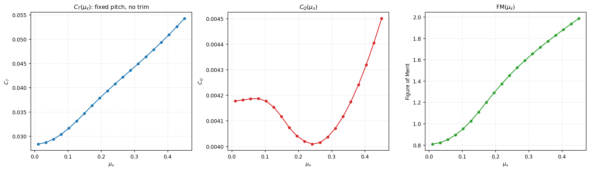
starter_rotor, same fixed geometric pitch from Section 12.3, no collective trim): $C_T$, $C_Q$, and corresponding Figure of Merit. $C_T$ increases monotonically with $\mu_x$: at fixed pitch, the increase in $U_T$ on the advancing side raises net integrated lift more than it reduces it on the retreating side (the relation between $F_n$ and $U_T^2$, Section 2.8.3, is not symmetric around $U_T=\Omega r$ in the presence of stall and reverse flow). $C_Q$ is not monotonic: it falls until $\mu_x\approx0.25$ and rises again after that. The two components of torque (Section 12.2.1) move in opposite directions and trade places — the induced part ($Q_i\propto\lambda_i$, Section 2.9.4) falls with $\mu_x$ and dominates at low advance ratio, while the profile part grows with the blade loading ($C_d=C_{d0}+kC_l^2$ with $k=0.01$ for this airfoil, and $C_l$ is rising along the sweep) and takes over past the minimum. The Figure of Merit, being the ratio of a growing quantity to a mostly falling one, grows and exceeds unity — a value with no direct physical meaning that signals, here, the absence of collective trim, not a solver error.12.2.1 Total power curve
The total power of a main rotor as a function of advance speed decomposes into three components of opposite behavior:
- Induced power $P_i=Tv_i$ (Section 2.9): decreases with $\mu_x$, because $v_i$ decreases as more air passes through the disk per unit time (Section 2.9.4);
- Profile power $P_0$ (Section 2.8.4, integrated over the disk): grows slowly, $\propto1+3\mu_x^2+\tfrac38\mu_x^4$, because integrated viscous drag grows with $U_T^3$ and $U_T$ grows with $\mu_x$ over part of the disk (Section 2.4.1);
- Parasite power $P_p=\tfrac12\rho V_x^3 f$ (fuselage drag, equivalent flat-plate area $f$, external to rotor): grows with $V^3$, dominant at high speed.
The sum is non-monotonic: decreases initially (drop in $P_i$ dominates), reaches minimum at intermediate speed (point of maximum efficiency/endurance) and grows again at high speed ($P_p\propto V^3$ dominant): the characteristic bucket-shaped curve:
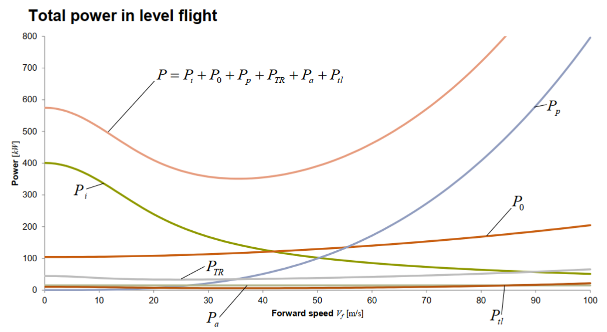
A sweep in $\mu_x$ (Section 12.3) with constant $T$ provides directly $P_i$ (via $Q_i\Omega$) and $P_0$ (via $Q_p\Omega$); the parasite component of the aircraft is added outside the rotor calculation entirely, since it is airframe drag and lies beyond the geometry BEMT solves.
12.3 Flight Condition Sweeps
run_sweep() repeats solve_bemt+aggregate_results along a sequence of flight conditions, typically a sweep in the in-plane component ($\mu_x$ or $J_x$ in rotor axes) for given altitude/density, optionally crossed with a secondary sweep on the along-shaft component (the mode's angle, or the velocity itself), returning a pandas DataFrame for export as CSV or plotting (viz/plots.py). For unsteady Pitt-Peters (Section 7.2.4.1), the variant run_sweep_unsteady_pitt_peters marches the 3 state ODEs in time along a trajectory $(\mu_x(t),V_z(t))$, rather than solving isolated conditions.

starter_rotor, fixed geometric pitch $\theta(r)$: no collective trim, so $C_T$ varies freely with $\mu_x$ rather than being held constant). Left: $C_T$ and $C_P$; right: corresponding Figure of Merit. This is exactly the type of curve run_sweep produces and that viz/plots.py plots automatically from the returned DataFrame.solve_bemt for each pitch attempt. The solution engine (bemt.py) does not implement this trim internally; it always solves "what $C_T$/$C_Q$ does this $\theta(r)$ produce", never the reverse.
13. Propeller mode
Everything before this chapter is written in rotor axes, because that is the frame the engine solves in and duplicating the derivations in a second frame would create two texts to keep true instead of one. This chapter is the single place that collects what is different when the machine is an airplane propeller: what changes physically, which letter then names which component, which advance ratio is "the" advance ratio, which angle is the one you type, which efficiency measure means anything, and the two mistakes that produce a plausible number instead of an error message. It links back to the derivations rather than restating them.
Vz / mu_z
/ J_z. The cross-flow field ($V_z$ on screen) is zero in straight cruise. Put the
airspeed in the cross-flow field and you get the converged solution of an edgewise rotor, with no
error and no warning about the physics — only a static-validation warning that the numbers
do not describe a propeller (13.6).
13.1 What is physically different
Nothing in the blade-element or momentum formulation changes. solve_bemt is
agnostic to the distinction: it receives the pair $(\mu_x,V_z)$ in rotor axes and solves the same
fixed point (Section 2.10) over the same mesh. What changes is the flight
condition it is handed, and that is enough to switch several mechanisms off.
The shaft is horizontal, so the flight velocity is axial. On a helicopter the shaft points up and the flight speed lies in the disk plane; on a propeller the shaft points forward and the flight speed lies along it. The in-plane component — the one that enters the tangential velocity as $U_T=\Omega r+V_x\sin\psi$ (Section 2.4.1) — is the cross-flow for a propeller, and it is zero whenever the aircraft is flying straight along its thrust axis.
With the in-plane component at zero, the azimuth disappears from the problem. $U_T$ reduces to $\Omega r$ at every $\psi$, and with it every azimuthal dependence downstream: $\alpha_{eff}$, $\phi$, $C_\ell$, $C_d$ and $\lambda_i$ become functions of $r$ alone. Three consequences follow, and they are the reason a propeller case is both easier to solve and easier to misdiagnose:
- No advancing/retreating asymmetry. The mechanism of Section 4 — higher dynamic pressure at $\psi=90^\circ$, lower at $270^\circ$ — needs $V_x\sin\psi$ to exist. A disk map from a correctly specified propeller case is therefore axisymmetric: rings, not the left-right pattern a helicopter produces. That is the fastest visual check that the condition was entered in the right field.
- No reverse-flow region. Reverse flow is the part of the retreating disk where $U_T<0$, which requires $|V_x\sin\psi|>\Omega r$ somewhere. With $V_x=0$ in the disk plane, $U_T=\Omega r>0$ everywhere and none of the five reverse-flow models (Section 8.2) has anything to act on. They can be left at their defaults; they change nothing.
- No cyclic driver for dynamic stall, and no inflow harmonics. Øye dynamic stall
(Section 8.4) models the lag of separation behind a time-varying
$\alpha_{eff}$; with $\alpha_{eff}$ constant around the azimuth there is no variation to lag
behind. Likewise the harmonic inflow models reduce to their uniform part: Coleman and Drees
multiply their harmonics by $\mu_x$, and the Pitt-Peters harmonic states $\nu_s,\nu_c$
(Section 7.2.4) come out at zero. A propeller case is effectively a 1D
radial problem, which is why
Npsican be modest for it — the example project uses $N_\psi=36$.
What does not go away. Tip and root losses, compressibility at the tip, rotational augmentation near the root and the whole airfoil-polar machinery apply exactly as before. A propeller tip is usually the most compressible part of any rotor in this program: at $2500$ rpm on a $0.94$ m radius the tip already turns at $246$ m/s before the airspeed is added vectorially, so the Mach ceiling discussion of Section 8.3.3 is more, not less, relevant here.
Where the propeller case is not axisymmetric. A tilt-rotor in transition, a propeller on an aircraft in a climb or a sideslip, and any nacelle at an angle of attack all have a real cross-flow. Then the in-plane component is non-zero on purpose, the azimuthal variation is physical, and everything switched off above switches back on. That case is entered by giving both components, or by giving the airspeed and the misalignment angle (13.4) — not by moving the airspeed into the cross-flow field.
13.2 The axis rotation, and the name flips it causes
The letters are vehicle-fixed: $x$ is horizontal and $z$ is vertical, in both modes. What rotates is the machine. A helicopter's shaft is vertical, so $z$ is the shaft and $x$ is the disk plane; a propeller's shaft is horizontal, so $x$ is the shaft and $z$ is across it. The convention never changes; the physical component each letter names does, and it does so precisely so that in either mode $x$ is the quantity a reader of that vehicle cares about.
The engine keys, by contrast, are always rotor-frame and never flip. The full correspondence, key by key, is Section 9.2.1.1; the summary worth carrying in your head is:
| Physical component | Engine key (never changes) | Rotor mode shows | Propeller mode shows |
|---|---|---|---|
| Along the shaft — climb/descent on a rotor, the airspeed on a propeller | Vz, mu_z, J_z, lambda_z | $V_z$, $\mu_z$, $J_z$, $\lambda_z$ | $V_x$, $\mu_x$, $J_x$, $\lambda_x$ |
| In the disk plane — the advance on a rotor, the cross-flow on a propeller | Vx, mu_x, J_x | $V_x$, $\mu_x$, $J_x$ | $V_z$, $\mu_z$, $J_z$ |
| Induced velocity — always along the shaft, in both machines | Vi, lambda_i | $v_i$, $\lambda_i$ | $v_i$, $\lambda_i$ |
| Free stream $+$ induced, through the disk | Vz_total, lambda_total | $V_{z,total}=V_z+v_i$ | $V_{x,total}=V_x+v_i$ |
| Angle of the flight condition | alpha_rotor_deg / alpha_disk_deg | $\alpha_{rotor}$ only | $\alpha_{disk}$ only |
Only the display changes. Every number and every key is identical in both modes. In a
CSV column, in a .bemt file and in --set, Vz is always
Vz: a run exported in propeller mode and re-read in rotor mode is still correct, it
has only changed vocabulary. Read a stored key and you are in rotor axes; read the screen or the
report and you are in the axes of the machine you configured.
13.3 Which advance ratio is "the" $J$
An unsubscripted $J$ never appears as a column heading in this program, and the reason is that there are two of them. When a propeller chart, a manufacturer's data sheet or a textbook writes $J$, it means the ratio built from the speed along the shaft:
with $n$ in revolutions per second and $D=2R$. The identity $J_x=\pi\mu_x$ follows from $\Omega R=\pi nD$ alone and holds regardless of the rotor's physical size (Section 2.6.1). $J_x$ is the abscissa of every propeller performance chart, and it is the one that enters propulsive efficiency, because thrust acts along the shaft and only the velocity component parallel to it does useful propulsive work.
$J_z$, shown in propeller mode, is a different number: the same ratio built from the cross-flow. In straight cruise it is exactly zero. The two are never interchangeable, and the subscript is the only thing separating them — which is why reading a $J$ off a table without checking its subscript is the second of the two classic mistakes (13.6).
13.4 The angle: $\alpha_{disk}$, and why it lives in the cross-flow field
There are exactly two angles in the program and each mode uses only its own (Section 9.2.1.2). Propeller mode's is $\alpha_{disk}$, measured from the shaft, normalised to $(-180^\circ,\,180^\circ]$:
- Zero in straight cruise, when the free stream is aligned with the thrust axis. That is the whole point of having a second name: a propeller reader checking a two-degree misalignment reads $2^\circ$, not $88^\circ$. (The rotor angle is still computed and still exported; in cruise it reads $\alpha_{rotor}=90^\circ$.)
- Positive when the flow arrives from below, i.e. the disk is tilted nose-up relative to the free stream. Axial descent — flow arriving on the front face — reads $180^\circ$.
- It is a property of the flight condition, not of any blade section. The section's angle of attack is $\alpha_{eff}$, which varies with radius (Section 2.8).
Why it is offered in the cross-flow ($z$) field and not next to the airspeed. An angle never fixes the scale of a velocity; it only resolves a known component into the other one. In propeller mode the known component is the airspeed along the shaft, which the $x$-labelled field carries, so the angle's job is to produce the cross-flow from it:
The magnitude, not the signed value, is deliberate: with a negative along-shaft component the signed form would flip which way the cross-flow points, and the angle reported back would then disagree with the geometry it came from. Put the angle in the other field instead and the resolution would have to divide by $\tan(\alpha_{disk})$ — which is $0/0$ in exactly the straight cruise a propeller spends its life in. Hence the rule that holds in both modes: $x$ carries a velocity, $z$ carries the angle. Supplying both angles at once is an error rather than a redundancy: with two angles and no dimensional component, nothing sets the scale.
13.5 Coefficients: which convention, and which efficiency
Both coefficient families are computed at every evaluation regardless of
is_propeller (Section 12.2); the mode decides which family is
displayed, plotted and swept by default. The definitions are in
Sections 2.6.4 and 2.6.5, and the choice between
them is argued in 2.6.6. In short:
| Rotor convention | Propeller convention | |
|---|---|---|
| Reference scales | disk area $A=\pi R^2$, tip speed $\Omega R$ | rotation rate $n$ and diameter $D$ |
| Thrust | $C_T=T/\rho A(\Omega R)^2$ | $C_{T,prop}=T/\rho n^2D^4$ |
| Torque / power | $C_Q=Q/\rho A(\Omega R)^2R$, $C_P=P/\rho A(\Omega R)^3$ | $C_{Q,prop}=Q/\rho n^2D^5$, $C_{P,prop}=P/\rho n^3D^5$ |
| Advance | $\mu_x$ (in-plane) | $J_x$ (along the shaft) |
| Efficiency measure | $FM=\dfrac{C_T^{3/2}/\sqrt2}{C_Q}$ | $\eta_{prop}=\dfrac{TV_x}{P}=\dfrac{J_x\,C_{T,prop}}{C_{P,prop}}$ |
The two coefficient families differ by fixed factors — $C_{T,prop}/C_T=\pi^3/4\approx7.75$ and $C_{P,prop}/C_P=\pi^4/4\approx24.4$ — so reading one as the other is a large error with nothing to signal it. Set the convention to match the reference data the result will be compared against.
The two efficiency measures are not rescalings of each other, and each is meaningful in the condition the other is not.
- $\eta_{prop}$ is useful power over shaft power, and it is built from the along-shaft
component — the engine's
Vz/J_zkeys, which a propeller reader sees as $V_x$/$J_x$. It is identically zero at static thrust, correctly: nothing moves, so no useful work is done. It rises with $J_x$, peaks at a finite advance ratio, and is reported as $0$ in the windmill regime ($T<0$, where thrust and power both go negative and the raw ratio would come back positive and flattering). - $FM$ compares actual power against the ideal hover power for the same thrust. The numerator $C_T^{3/2}/\sqrt2$ is the Rankine-Froude hover ideal, so the ratio measures efficiency only at, or very near, zero flight speed. Away from hover the numerator is no longer the ideal power of the condition being flown, the ratio is no longer bounded by $1$, and values above unity carry no physical meaning — the untrimmed $\mu_x$ sweep in Section 12.2 shows exactly that, and it is a property of the definition, not a solver error. For a propeller, read $FM$ at the static point and $\eta_{prop}$ everywhere else.
13.6 The two classic mistakes, and how they look
Mistake 1: the airspeed typed into the cross-flow field. This is the one that produces a fully converged, entirely plausible, completely wrong answer. The blade is then made to see $\pm V$ around the azimuth — an edgewise rotor, which no propeller in straight flight is — while the flow through the disk carries no free-stream component at all. Symptoms, in the order you are likely to meet them:
- The disk maps are not axisymmetric. An advancing/retreating pattern in a straight-flight propeller case is the diagnosis by itself (13.1).
- Propulsive efficiency collapses to zero across the whole sweep, because $\eta_{prop}$ is built from the along-shaft component and that component is what was left at zero. Historically — before $\eta_{prop}$ was corrected to use the along-shaft component — this same error produced the opposite tell, plausible efficiencies including values above $1$; older notes and datasets may still carry that signature.
- Thrust and power are far too large. The disk is being asked to work with no axial inflow to relieve it: in the worked example below the same collective and RPM give $2.8$ kN at $226$ kW when specified correctly, and $7.3$ kN at $291$ kW when the airspeed is put in the wrong field.
- Static validation says so. A project in propeller mode with all the advance in the
disk plane and none along the shaft raises a warning
(
zbemt/validation.py, 15.3) naming the field the speed belongs in. It is a warning and not an error on purpose: a tilted propeller genuinely has both components. What is flagged is the signature of the swap — everything in the plane, nothing on the shaft.
Mistake 2: reading $J_z$ where $J_x$ was meant. Both are present in every summary and every exported row, and in a correctly specified propeller case $J_z$ is $0$ while $J_x$ carries the whole condition. A performance curve accidentally plotted against $J_z$ is a vertical line at the origin; a $J$ copied from a manufacturer's chart into the cross-flow slot is Mistake 1 in another guise. When in doubt, check the pair: in straight cruise exactly one of them is non-zero.
13.7 A worked example
projects/propeller_light_aircraft is a three-bladed tractor propeller of
$R=0.94$ m ($D=1.88$ m), tapered, twisted from $42^\circ$ at the root to $18^\circ$ at the tip,
with is_propeller: true in config.bemt and a mesh of
$N_e=72\times N_\psi=36$. Its three saved cases are the shape every propeller case should have
— the whole condition on the shaft, the cross-flow left at zero:
{"name": "static (V=0)", "mu_x": 0.0, "Vz": 0.0, "collective_deg": 0.0, "rpm": 2500.0}
{"name": "climb 40 m/s", "mu_x": 0.0, "Vz": 40.0, "collective_deg": 0.0, "rpm": 2500.0}
{"name": "cruise 65 m/s", "mu_x": 0.0, "Vz": 65.0, "collective_deg": 0.0, "rpm": 2500.0}
mu_x is the cross-flow key and stays at zero; Vz is the airspeed key
and is what the screen labels $V_x$. Running the three cases plus two faster ones gives the
canonical propeller picture:
| Case | $V_x$ [m/s] key Vz | $J_x$ key J_z | $C_{T,prop}$ | $\eta_{prop}$ | $FM$ | $T$ [N] | $P$ [kW] |
|---|---|---|---|---|---|---|---|
| static | 0 | 0.00 | 0.236 | 0 (by definition) | 0.662 (meaningful here) | 6261 | 287 |
| climb | 40 | 0.51 | 0.177 | 0.625 | 0.411 | 4706 | 301 |
| cruise | 65 | 0.83 | 0.106 | 0.808 | 0.253 | 2808 | 226 |
| fast cruise | 85 | 1.09 | 0.043 | 0.848 | 0.129 | 1134 | 114 |
| windmill | 100 | 1.28 | $-0.007$ | 0 (undefined, reported as 0) | 0 | $-197$ | $-5$ |
Read across the table and every statement of this chapter appears at once. $J_x$ carries the condition while $J_z$ stays at zero throughout. $\eta_{prop}$ starts at zero at the static point and climbs towards its peak as $J_x$ grows, which is the shape of every propeller efficiency curve. $FM$ does the opposite — genuinely informative at the static point ($0.66$), then decaying into meaninglessness as the flight speed rises, since it keeps comparing against a hover ideal that no longer describes the condition. Past $J_x\approx1.2$ the blade section angles have fallen below their zero-lift values at fixed pitch: thrust reverses, the propeller windmills, and $\eta_{prop}$ is reported as $0$ rather than as a positive ratio of two negative numbers. The same fixed-collective caveat as anywhere else applies — these are untrimmed results, so thrust is an output, not a held constant.
Specifying the cruise case the wrong way — the $65$ m/s entered in the cross-flow field,
i.e. mu_x = 0.264 with Vz = 0 — converges just as cleanly and
reports $T=7336$ N, $P=291$ kW, $\eta_{prop}=0$ and $FM=0.83$: a figure of merit that looks
respectable, a thrust two and a half times too large, and an efficiency of zero. Nothing but the
validation warning and the shape of the disk map says which of the two runs describes the
airplane.
The example project is covered by tests/test_example_projects.py, and the axis
naming and the two angles are pinned by
tests/test_propeller_axes_convention.py.
14. Parameter index by tab
This is a compact cross-reference generated from the GUI fields. Use the links for quick lookup; the detailed operational and physical explanation is kept in the workflow sections above, so this index deliberately does not repeat the derivations.
Geometry
| Field | Direct explanation |
|---|---|
n_blades | Number of blades. More blades distribute load over more swept area and increase rotor solidity. |
radius_m | Radius from tip to axis, in m. Defines disk area, tip speed ΩR, and thrust scale. |
r_norm | Normalized radial position r/R, from 0 (root) to 1 (tip). Locates each station in the geometric table; values must be increasing with no duplicates. |
chord_norm | Normalized chord c/R. Defines blade element area; larger values increase solidity, profile drag, and local load. |
twist_deg | Geometric twist, in degrees, added to collective. Adjusts geometric angle of attack along radius, where peripheral speed Ωr varies with r. |
root_cutout_norm | Root cutout, in r/R. Removes from integration the region near the hub, which physically does not support a useful blade airfoil section. |
kind | Chord distribution type used by the "Generate radial table" popup: rectangular, tapered, or elliptic. Only affects how the generator builds the table, not the solved RotorGeometryDef format. |
n_stations | Number of radial stations the "Generate radial table" popup writes between the root cutout and the tip. Independent of the solver mesh Ne, which resamples this table. |
tip_chord_norm | Normalized tip chord c/R used by the "Generate radial table" popup when the chord distribution type is tapered, linearly interpolated against the root chord. |
twist_root_deg | Root twist, in degrees, used by the "Generate radial table" popup, linearly interpolated against the tip twist into the table's twist_deg column. |
twist_tip_deg | Tip twist, in degrees, used by the "Generate radial table" popup, linearly interpolated against the root twist into the table's twist_deg column. |
solidity | Blade area fraction of the disk, shown live by the "Generate radial table" popup as an alternate way to set the chord field(s) above. |
aspect_ratio | Planform aspect ratio of a single blade, shown live by the "Generate radial table" popup as an alternate way to set the chord field(s) above. |
origin | Informative origin of geometry (preset, import, or manual edit). Metadata: does not enter physics, which always reads the final radial table. |
origin_params | Parameters used when generating geometry by preset. Traceability metadata; does not replace the radial table in calculation. |
Airfoil and local corrections
| Field | Direct explanation |
|---|---|
name | Descriptive name or profile designation for the airfoil (e.g., NACA 0012, SC1095, Clark Y). Identifies the polar in reports, plots, and multi-section span distributions. |
source | Source of the polar Cl(α), Cd(α): analytical (closed-form linear coefficients) or table (imported/generated data). Determines where element forces come from. |
cl_alpha | Lift slope, in 1/rad, of the analytical polar. Defines how much Cl grows per radian of angle of attack before stall; 2π is the 2D thin-airfoil value. |
alpha0_deg | Zero-lift angle of attack, in degrees. Shifts the lift polar along the α axis; represents airfoil camber. |
cd0 | Profile drag at zero lift. Viscous/pressure portion independent of Cl; scales directly torque and profile power. |
k | Curvature of the parabolic polar Cd = Cd0 + k·Cl². Defines the drag cost associated with lift in the analytical approximation. |
stall_model | Static stall model, defines the polar beyond the linear lift limit. linear extrapolates the line without bound; clip saturates at constant Cl; enhanced smooths the post-stall transition; viterna extends to ±90° via Viterna-Corrigan. |
alpha_stall_pos_deg | Angle of attack where positive stall begins. Above it the analytical polar ceases to follow the linear law Cl = Cl_α(α−α0). |
alpha_stall_neg_deg | Angle of attack where negative stall begins. Delimits the linear law on the negative α side, relevant in reverse flow and on the retreating side of the disk. |
extend_full_range | Extends the polar through ±90° and the reflected branch to ±180° via Viterna-Corrigan, using the theoretical flat-plate Cd_max and matching the base polar at stall. |
viterna_blend_width_deg | Width, in degrees, of transition between the original polar and the Viterna-Corrigan extension. Larger width spreads the model change over a larger angular interval of α. |
use_dynamic_stall | Enables the Øye dynamic stall lag model, which delays the response of Cl/Cd to rapid variations in α rather than applying the static polar instantaneously. |
dynamic_stall_method | Formulation of Øye dynamic stall: frequency resolves in harmonics of the azimuthal cycle (the only method exposed in the GUI). |
dynamic_stall_A | Empirical Øye lag constant in τ=A c/(2W). Larger A makes separation respond more slowly and increases the phase lag. |
dynamic_stall_fade_start_deg | Angle of attack from which the Øye correction begins to be attenuated linearly to dynamic_stall_fade_end_deg. |
dynamic_stall_fade_end_deg | Angle of attack where the Øye correction attenuation ends and the model is switched off completely. Greater than dynamic_stall_fade_start_deg. |
reverse_flow_model | Model that defines how the polar is continued when local tangential velocity Ut is negative (reverse flow, retreating side in high advance). |
reverse_flow_blend_factor | Smoothness of blend between the forward-flow and reverse-flow polars near Ut = 0. Reduces numerical discontinuity in transition; does not alter the physical condition defining reversal. |
thin_plate_blend_center_deg | Angular center, in degrees, of the blend with the thin-plate model in the corresponding reverse_flow_model. |
thin_plate_blend_width_deg | Angular width, in degrees, of the blend with the thin-plate model. Larger width spreads the model switch over a larger angular interval. |
mask_reverse_flow_plots | Masks (hides) the region with Ut < 0 in disk maps. Affects only visualization — forces, coefficients, and exported CSV remain complete. |
use_compressibility | Applies the Prandtl-Glauert compressibility correction (1/√(1−M²)) to Cl and Cd based on the local Mach number of each element. |
a_sound | Speed of sound, in m/s, used to convert local relative velocity to Mach number in the compressibility correction. |
external_reynolds_list | List of Reynolds numbers used to generate the external polar (NeuralFoil). Reynolds alters the boundary layer and thus predicted lift and drag. |
external_mach_list | List of Mach numbers used to generate the external polar (NeuralFoil); each Reynolds×Mach combination produces one slice of the table. |
external_alpha_min_deg | Smallest angle of attack, in degrees, of the sweep that generates the external polar. Bounds the negative extreme of the α range covered by the generated table. |
external_alpha_max_deg | Largest angle of attack, in degrees, of the sweep that generates the external polar. Bounds the positive extreme of the α range covered by the generated table. |
external_alpha_step_deg | Angular step, in degrees, between points of the sweep that generates the external polar. Smaller step increases curve resolution near stall, at the cost of more computed points. |
table_slices | Reynolds/Mach slices of a tabulated polar. The solver selects, per radial station, the Reynolds/Mach slice closest to the local condition. |
geometry | 2D airfoil geometry (NACA/CST/Bézier) used to generate the external polar. Defines airfoil section shape, not the radial blade geometry (table r/R, chord, twist). |
Engine configuration
| Field | Direct explanation |
|---|---|
Ne | Number of radial stations in the mesh. More stations resolve in finer detail the variation of chord, twist, and tip/root losses, at the cost of more computation time. |
Npsi | Number of azimuthal positions in the mesh. Npsi=1 corresponds to an axisymmetric disk; larger values resolve the asymmetry between advancing and retreating sides in forward flight. |
rho | Air density, in kg/m³. Scales directly all aerodynamic forces and power (via q = ½ρV²). |
integration_offset | Small numerical radial offset applied at integration nodes to avoid singularities exactly at root and tip. Does not alter physical geometry. |
inflow_field_model | Model of the induced inflow field: local/uniform or with harmonics (Pitt-Peters, Coleman, Drees). Defines whether induction varies with azimuth or is treated as disk-average. |
prandtl_loss_mode | Prandtl tip and root loss model. Reduces load near blade extremities to represent the effect of finite tip/root vortices. |
use_rotational_augmentation | Enables rotational lift augmentation (Snel/Himmelskamp), a 3D correction that raises Cl in the inner blade region relative to the 2D reference polar. |
use_radial_flow_correction | Corrects the effect of the radial flow component on boundary-layer behavior in skewed inflow (disk tilted relative to the flow). |
radial_flow_max_skew_deg | Disk skew angle, in degrees, where the radial flow correction saturates. Limits correction growth in extreme skew regimes. |
pitt_peters_states | Number of states in the Pitt-Peters dynamic inflow model. Three states represent mean induction plus the two first-order harmonics (variation with cos ψ and sin ψ). |
pitt_peters_outer_iter | Maximum number of iterations of the outer loop that solves the Pitt-Peters inflow states. |
pitt_peters_relax | Relaxation factor for updating Pitt-Peters inflow states. Smaller value damps outer-loop oscillations; larger value accelerates convergence. |
pitt_peters_tol | Tolerance of the Pitt-Peters outer loop on the variation of inflow states between consecutive iterations. |
solver | Iterative algorithm that solves the fixed-point g(λ)=λ of the blade-element/momentum coupling: newton, fixed_point, bisection, or aitken. Convergence is always measured on the residual g(λ)−λ before any relaxation. |
max_iter | Maximum number of solver iterations per mesh element. Upper safety limit against infinite loop, not a precision target. |
tol | Residual tolerance |g(λ)−λ| to declare element convergence. Smaller value requires greater equality between blade element and momentum, at the cost of more iterations. |
relax | Global relaxation factor applied to the λ update step between iterations. Reduces step amplitude to damp oscillations in the iterative loop. |
relax_schedule | Activates the spatial relaxation schedule (_relax_map), which reduces the relaxation factor near root, tip, and azimuths where the residual tends to be more sensitive. |
relax_root_factor | Additional relaxation factor applied in the root region defined by relax_root_threshold. Reduces the update step where peripheral speed Ωr is low and numerical conditioning deteriorates. |
relax_root_threshold | Limit of r/R that defines the root region for the relaxation schedule (relax_root_factor). Numerical limit, distinct from root_cutout_norm (physical blade cutout). |
relax_tip_threshold | Limit of r/R that defines the tip region for the relaxation schedule. Above it the update step is damped by the sensitivity of load gradient and Prandtl loss. |
relax_azimuth_factor | Additional relaxation factor applied at azimuths crossing the relax_azimuth_threshold limit, where the residual tends to be more sensitive (reverse-flow proximity, for instance). |
relax_azimuth_threshold | Threshold (in fraction of azimuthal range, or equivalent metric) that activates the additional azimuthal relaxation factor relax_azimuth_factor. |
early_exit_fraction | Fraction of converged elements that allows the solver to exit before max_iter, even with a residual fraction of elements still outside tolerance. |
stagnation_patience | Number of iterations without improvement in the converged fraction before the solver declares stagnation and exits. Numerical diagnostic criterion, not physical. |
stagnation_min_frac | Minimum improvement in converged fraction between iterations that restarts the stagnation_patience count. Improvements smaller than this value are treated as stagnation. |
Flight condition and execution
| Field | Direct explanation |
|---|---|
is_propeller | Switches the input/output convention between Rotor (µx, λz, FM) and Propeller (Jx, ηprop). It also decides which physical component each displayed letter names (9.2.1.1). The physics solved by solve_bemt() is identical in both modes — only the nondimensionalization and the labels change. |
mu_x | The in-plane component of the flight condition, µx = Vx/(ΩR). In Rotor mode this is THE advance: it compares forward speed with blade tip speed, and larger values increase the load asymmetry between advancing and retreating sides and can produce reverse flow (Ut < 0) near the root of the retreating side. In Propeller mode the same key holds the vertical cross-flow, displayed as µz and zero in straight cruise. |
Vz | The component along the rotor axis, in m/s: climb (positive) / descent (negative) in Rotor mode, the aircraft's airspeed in Propeller mode, where it is displayed as Vx. It is the free stream, not the flow through the disk — that one is Vz,total = Vz + vi. Non-dimensionally it is the inflow ratio λz = Vz/(ΩR), the same number as µz, shown as λx in Propeller mode. |
collective_deg | Collective pitch, in degrees, added to geometric twist (twist_deg) across the blade span. Shifts the angle of attack of all stations simultaneously. |
rpm | Rotor speed, in rpm. Defines angular velocity Ω, tip speed ΩR, and consequently the local Reynolds and Mach numbers at each station. |
Advanced reference: command line, project files and limitations
15. Outside the GUI
Reinforces the principle of 1.2.4: every project field is settable via
.bemt, even when the GUI has no dedicated widget for it. This chapter covers the
command line, the .bemt file names, static validation rules, and
comparison among the most frequently changed options — the reference for those who prefer script/API to
the graphical interface, or need to automate large batches.
15.1 Command line
Points to a project directory, executes the condition/sweep requested through the code path of
api.py — the same one the GUI uses — and exports CSV and plots.
Full parity: every flag sets a field also editable by the GUI, and every .bemt
generated by any of the three paths (GUI, CLI, manual editing) is read back identically
by the other two.
After pip install -e . the command zbemt becomes available;
without installing, the equivalent is python -m zbemt.cli.
# Run an existing project
zbemt --project projects/MyProject
# Run one of the example projects and already generate the report
zbemt --project projects/heli_utility_medium --from-bemt-batch "mu_x sweep" --report
# Run a saved batch
zbemt --project projects/MyProject --from-bemt-batch hover_sweep
# List saved batches
zbemt --project projects/MyProject --list-batches
# Create new project, configure and persist
zbemt --new projects/MyProject --geom-radius 0.6 --rpm 1200 \
--inflow pitt_peters_steady --dynamic-stall --save-as projects/MyProject
# Generate polar via NeuralFoil, without running BEMT
zbemt --project projects/MyProject \
--gen-neuralfoil --airfoil-geometry naca2412 \
--reynolds 1e5,5e5,1e6 --mach 0.1,0.3 --alpha-range -10:20:0.5 \
--export-table saida/naca2412_neuralfoil.csvComplete table of flags (grouped by corresponding tab; see each linked section for the physical meaning of each field):
| Group | Flags |
|---|---|
| Project (Section 1.3) | --project PATH | --new PATH [--name NAME] | --save-as PATH |
| Saved cases/batches (10.4, 11.3) | --list-batches | --list-cases | --from-bemt-batch NAME | --from-bemt-case NAME |
| NeuralFoil (6.8) | --gen-neuralfoil | --airfoil-geometry SPEC | --reynolds R1,R2,... | --mach M1,M2,... | --alpha-range MIN:MAX:STEP | --export-table PATH |
| Ad hoc condition (Chapter 10) | --rpm X | in-plane component: --mu-inplane X / --j-inplane X / --v-inplane X / --alpha-disk-deg X | along-shaft component: --v-axial X / --mu-axial X / --j-axial X / --alpha-rotor-deg X | --collective X — one flag per component, and never both angles at once |
| Geometry (Chapter 5) | --geom-preset {rectangular,tapered,elliptic,custom} | --geom-file PATH | --geom-radius X | --geom-root-cutout X | --geom-n-blades N | --geom-chord X | --geom-taper-ratio X | --geom-max-chord X | --geom-twist-root X | --geom-twist-tip X | --geom-custom-points r:c:t,... |
| Airfoil (Chapter 6) | --airfoil-source {analytical,table} | --airfoil-table CSV | --dynamic-stall / --no-dynamic-stall | --airfoil-stall-model {linear,clip,enhanced,viterna} | --airfoil-sections-file PATH |
| Config/Solver (Section 9.3) | --inflow {…} | --prandtl-loss-mode {off,tip,root,both} | --pitt-peters-states {3,5} | --pitt-peters-outer-iter N | --pitt-peters-relax X | --pitt-peters-tol X | --rotational-augmentation / --no-rotational-augmentation | --radial-flow-correction / --no-radial-flow-correction | --solver {fixed_point,newton,bisection,aitken} | --max-iter N | --tol X | --relax X | --relax-schedule / --no-relax-schedule |
| Export (11.4) | --outdir PATH | --plots [performance] [disk_map] | --no-csv | --export-layout {flat,per_case} | --report [FILE] | --report-notes TEXT |
| Any field | --set NAMESPACE.FIELD=VALUE (e.g., --set config.Ne=90 --set config.Npsi=144) — reaches any field of BEMTConfig/AirfoilDef, with or without dedicated flag; the name is validated against the dataclass, so a typo becomes a message, not silence |
| Validation | --validate-only (checks and does not run) | --ignore-validation-errors (runs despite errors) |
Fields without dedicated flag (marked "not exposed" in their descriptions throughout this
document) are only settable via .bemt (manual editing, or GUI + "Save"): most
are fine scalar coefficients (e.g., $C_{l_\alpha}$, blend widths,
relax_schedule parameters) for which an ad hoc command-line value is
rarely the natural workflow.
15.2 Differences Among Most Frequently Changed Options
| Option | Values and what each does |
|---|---|
reverse_flow_model (6.4.1) | thin_plate_blend blends the real polar with an idealized thin-plate model near $U_T=0$, without relying on measured data beyond $\pm90°$. viterna_full_range uses the Viterna-Corrigan extension already computed up to $\pm180°$ (requires extend_full_range=True with an extended polar). |
solver (9.3.6.1) | newton and aitken converge quadratically/superlinearly near the root. bisection converges linearly but guarantees convergence whenever sign change isolates the root, even when the others diverge. |
inflow_field_model (9.3.2.1) | drees_local solves the harmonic inflow in steady state. pitt_peters_unsteady (via API, 9.3.2.1.4.2) solves the same field with finite-state dynamics, capturing the transient between flight conditions. |
prandtl_loss_mode (9.3.3) | both applies Prandtl loss at the tip and root. off turns both off, producing BEMT with no tip loss correction (useful to isolate the correction effect in a comparison). |
15.3 Static validation rules
Before any call to the solver, api.py runs validation.py
over the assembled configuration, flagging physically inconsistent or
structurally unimplemented combinations. Checks do not alter any value: they only emit warnings
(info/warning) or block execution (error).
| Level | Condition Checked | Physical/Structural Reason |
|---|---|---|
| error | use_dynamic_stall=True with stall_model="linear" | Øye (Section 8.4) interpolates between $C_{l,att}$ and the separated $C_l$ from the static polar; without stall in the base polar there is no separation to model. |
| info | extend_full_range=True with source other than analytical/table | Field has no effect in that combination. |
| error | table source without table_slices imported | No polar for the solver to consume. |
| error | external solver (NeuralFoil) selected without 2D airfoil geometry | Needs the profile shape to generate the polar (6.8). |
| error | dynamic_stall_fade_start_deg ≥ dynamic_stall_fade_end_deg | Fading window (6.3.4) is invalid. |
| warning | $\alpha_{stall}^+\leq0$ or $\alpha_{stall}^-\geq0$ (with stall active) | Positive/negative stall signals probably swapped. |
| warning | dynamic stall with tabulated source whose $|C_l|$ peak is at the edge of the imported range | Heuristic: the table was probably truncated before saturation. |
| error | reverse_flow_model="viterna_full_range" without extend_full_range=True | Without the extension (6.2.4), the reverse-flow region has no physically defined polar. |
| error | pitt_peters_states ∉ {3,5}, or =5 | Only the classical 3-state model is implemented (9.3.5). |
| warning | use_compressibility=True with table that already varies with Mach | Double-counting compressibility (6.5). |
| error | dynamic stall with inflow_field_model="pitt_peters_unsteady" | Structural incompatibility: unsteady Pitt-Peters marches only 3 scalar degrees of freedom; Øye would need one state per element. |
Most of these rules are also enforced preventively by the GUI (fields disabled,
options hidden, see progressive disclosure notes throughout Block 2);
validation.py is the safety net that guarantees the same consistency for the
script/API path.
15.4 Project .bemt Files
| File | Contents | Edited by |
|---|---|---|
inputs/geom.bemt | RotorGeometryDef (radial table + $N_b$, $R$) | Chapter 5 |
inputs/airfoil.bemt | AirfoilDef of the single airfoil | Chapter 6 |
inputs/airfoil_sections.bemt | list of AirfoilDef (multi-section mode, 2+) | 6.1 |
inputs/config.bemt | BEMTConfig (mesh, inflow, solver, Rotor/Propeller mode) | 1.3.1, Section 9.3 |
inputs/saved_cases.bemt | list of named FlightCondition | 10.4 |
inputs/batches.bemt | list of named BatchDefinition | 11.3 |
All are plain JSON, generated by models.save_bemt()/save_bemt_list()
and read by models.load_bemt()/load_bemt_list() — editable by hand
in any text editor. Backward migration is automatic: old schemas (e.g., fields
renamed/merged between project phases) are rebuilt with current defaults for missing keys,
without requiring manual migration from the user.
16. Limitations
The boundaries collected here are already stated individually, next to the physics they qualify, throughout this document; this section exists so they can be read as a single list before committing to a use case, rather than discovered one at a time. Each item names where the limitation is enforced or explained in code or in this text — none are new claims.
| Limitation | Where it's enforced / explained |
|---|---|
| Rigid blades: no elastic twist, no flapping degree of freedom | Section 2.2.1; the Pitt-Peters moments $C_{Mx}$/$C_{My}$ (Section 7.2.4.2) explicitly note they "are not relieved by flapping as they would be in a real articulated rotor" — a hard consequence of this assumption, not a separate bug |
| Independent radial rings: no turbulent mixing or tip-vortex induction between neighboring annuli | Section 2.9.5; Prandtl loss (Section 8.1) reintroduces the finite-blade-count effect this hypothesis removes, but only approximately |
| Vortex ring state / turbulent wake state (moderate descent, $-2v_h\lesssim V_z\lesssim0$): momentum theory has no valid closed-form solution in this band | Section 2.9.3 — results in this flight regime require cautious interpretation regardless of mesh resolution or solver tolerance |
| Trim solves one degree of freedom, by bisection, and only against thrust or its coefficient. There is no simultaneous trim of collective and cyclic to a prescribed force and moment state, and no flapping degree of freedom for a cyclic trim to act through | Section 11.4. Bisection needs the target to be bracketed, and thrust is not monotonic in collective past stall: a target above the achievable peak has no solution, and one below it may have two. The value reported is whichever root the bracket contained |
AirfoilDef.source="external" is not implemented | zbemt/airfoils.py, to_airfoil() raises NotImplementedError directly — external-solver polars must be generated once (Section 6.8) and imported as a table, not referenced live |
| Prandtl tip/root loss factor omits the $1/x$ term of the most commonly cited (Leishman, Johnson) textbook form ($f_{tip}=\tfrac{N_b}{2}\tfrac{1-x}{x|\sin\phi|}$ vs. zBEMT's $f_{tip}=\tfrac{N_b}{2}\tfrac{1-x}{|\sin\phi|}$, Section 8.1) | zbemt/bemt.py, the f_tip/f_root computation in element_state() — flagged as a known discrepancy pending a physics-accuracy review against the reference implementation this engine was built to match; treat loss-factor behavior very close to the hub with caution until resolved |
| Compressibility is corrected by a linearized subsonic model, capped at a Mach ceiling of $M_{\max}=0.9$. Above roughly $M=0.7$ it already misses shock formation and drag divergence; at and above the ceiling the reported coefficients are capped values, not a transonic prediction | Section 8.3.3, which states the ceiling, the resulting bound of $2.29$ on the amplification factor, and the fact that nothing below $M=0.9$ is altered by it. Static validation warns once the advancing-tip Mach number passes $0.85$. A rotor operating routinely above that needs a transonic method, not this correction |
| Compressibility applied on top of a Mach-resolved tabulated polar counts the same physics twice | Section 8.3.3; static validation warns about this specific combination, but nothing in the engine prevents it — the tabulated data cannot be inspected for whether its Mach dependence is already present |
| Reduced fidelity vs. a full unsteady aeroelastic / free-wake solver | Not a code boundary but a modeling choice stated in Section 0.1: zBEMT targets preliminary design and performance diagnosis over fixed geometry, not aeroelastic response or detailed wake capture |
None of these invalidate a result by themselves — they define the conditions under which a result should be trusted at face value versus treated as an estimate needing outside corroboration (a trim loop, a wake model, or a reference dataset).
References
- Leishman, J. G. Principles of Helicopter Aerodynamics, Cambridge University Press.
- Johnson, W. Rotorcraft Aeromechanics, Cambridge University Press.
- Prouty, R. W. Helicopter Performance, Stability, and Control.
- Kumar, S. Fundamentals of Helicopter Aerodynamics, open course (Jupyter Book). Schematic figures of actuator disk, velocity triangle, reverse flow, lift asymmetry, and power curve.
- Pitt, D. M.; Peters, D. A. "Theoretical Prediction of Dynamic-Inflow Derivatives", Vertica, 1981.
- Peters, D. A.; HaQuang, N. "Dynamic Inflow for Practical Applications", Journal of the American Helicopter Society, 1988.
- Snel, H.; Houwink, R.; Bosschers, J. et al. "Sectional prediction of 3D effects for stalled flow on rotating blades", ECWEC, 1993.
- Øye, S. "Dynamic stall simulated as time lag of separation", 1991; see QBlade documentation for the formulation of Bergami dynamic $C_d$.
- Viterna, L. A.; Corrigan, R. D. "Fixed Pitch Rotor Performance of Large Horizontal Axis Wind Turbines", NASA CP-2185, 1981.
- Wikipedia. Wingtip vortices.
Figure Credits
The figures in this document divide into two sources, and the distinction matters for anyone redistributing:
docs/img/*.png— generated by zBEMT itself (sweeps, disk maps, polars). They are project material, under the same license.docs/img/externas/— eleven schematic figures by S. Kumar, Fundamentals of Helicopter Aerodynamics. They are bundled here, not loaded from the original site, so that this documentation works without connectivity — it is the built-in Help documentation (also opened with F1) and must work in an offline lab. Each caption maintains the credit and link to the original page. The license belongs to the original author; before publicly redistributing zBEMT, confirm the terms with him.
End of document. Figures without explicit credit are graphs generated from the equations of the zBEMT solver; figures with credit are reproduced from open sources cited in each caption.